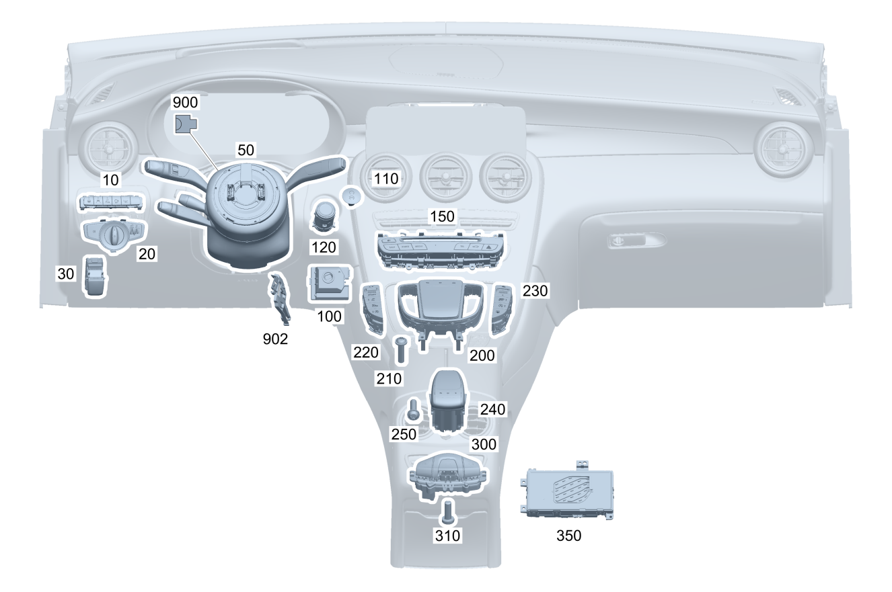

| № | Артикул | Название | Кол. | Примечание | Ограничение |
|---|---|---|---|---|---|
| 10 | A 205 905 02 51 | Блок выключателей (SWITCH BLOCK) | 1 | Вспомогательные системы | (806/807/808/809)+(238/476) |
| 10 | A 205 905 78 09 | Блок выключателей (SWITCH BLOCK) | 1 | Вспомогательные системы | (806/807/808/809)+(238/476) |
| 10 | A 205 905 03 51 | Блок выключателей (SWITCH BLOCK) | 1 | Вспомогательные системы | (806/807/808/809)+(238/476)+266 |
| 10 | A 205 905 79 09 | Блок выключателей (SWITCH BLOCK) | 1 | Вспомогательные системы | (806/807/808/809)+(238/476)+266 |
| 10 | A 205 905 35 00 | Блок выключателей (SWITCH BLOCK) | 1 | Вспомогательные системы | (806/807/808/809)+235+489 |
| 10 | A 205 905 80 09 | Блок выключателей (SWITCH BLOCK) | 1 | Вспомогательные системы | (806/807/808/809)+235+489 |
| 10 | A 205 905 04 51 | Блок выключателей (SWITCH BLOCK) | 1 | Вспомогательные системы | (806/807/808/809)+(235/235+489)+(238/476) |
| 10 | A 205 905 81 09 | Блок выключателей | 1 | Вспомогательные системы | (806/807/808/809)+(235/235+489)+(238/476) |
| 10 | A 205 905 05 51 | Блок выключателей (SWITCH BLOCK) | 1 | Вспомогательные системы | (806/807/808/809)+(235/235+489)+(238/476)+266 |
| 10 | A 205 905 82 09 | Блок выключателей (SWITCH BLOCK) | 1 | Вспомогательные системы | (806/807/808/809)+(235/235+489)+(238/476)+266 |
| 10 | A 205 905 15 51 | Блок выключателей (SWITCH BLOCK) | 1 | Вспомогательные системы | (806/807/808/809)+501+(235/235+489) |
| 10 | A 205 905 83 09 | Блок выключателей (SWITCH BLOCK) | 1 | Вспомогательные системы | (806/807/808/809)+501+(235/235+489) |
| 10 | A 205 905 16 51 | Блок выключателей (SWITCH BLOCK) | 1 | Вспомогательные системы | (806/807/808/809)+501+(235/235+489)+(238/476) |
| 10 | A 205 905 84 09 | Блок выключателей (SWITCH BLOCK) | 1 | Вспомогательные системы | (806/807/808/809)+501+(235/235+489)+(238/476) |
| 10 | A 205 905 17 51 | Блок выключателей (SWITCH BLOCK) | 1 | Вспомогательные системы | (806/807/808/809)+501+(235/235+489)+(238/476)+266 |
| 10 | A 205 905 85 09 | Блок выключателей (SWITCH BLOCK) | 1 | Вспомогательные системы | (806/807/808/809)+501+(235/235+489)+(238/476)+266 |
| 10 | A 205 905 78 09 | Блок выключателей (SWITCH BLOCK) | 1 | Вспомогательные системы | 9O1+243 |
| 10 | A 205 905 24 51 | Блок выключателей (SWITCH BLOCK) | 1 | Вспомогательные системы | (806/807/808/809)+463 |
| 10 | A 205 905 86 09 | Блок выключателей (SWITCH BLOCK) | 1 | Вспомогательные системы | (806/807/808/809)+463 |
| 10 | A 205 905 25 51 | Блок выключателей (SWITCH BLOCK) | 1 | Вспомогательные системы | (806/807/808/809)+463+(238/476) |
| 10 | A 205 905 87 09 | Блок выключателей (SWITCH BLOCK) | 1 | Вспомогательные системы | (806/807/808/809)+463+(238/476) |
| 10 | A 205 905 26 51 | Блок выключателей (SWITCH BLOCK) | 1 | Вспомогательные системы | (806/807/808/809)+463+(238/476)+266 |
| 10 | A 205 905 88 09 | Блок выключателей (SWITCH BLOCK) | 1 | Вспомогательные системы | (806/807/808/809)+463+(238/476)+266 |
| 10 | A 205 905 27 51 | Блок выключателей (SWITCH BLOCK) | 1 | Вспомогательные системы | (806/807/808/809)+463+(235/235+489) |
| 10 | A 205 905 89 09 | Блок выключателей (SWITCH BLOCK) | 1 | Вспомогательные системы | (806/807/808/809)+463+(235/235+489) |
| 10 | A 205 905 28 51 | Блок выключателей (SWITCH BLOCK) | 1 | Вспомогательные системы | 463+(235/235+489)+(238/476) |
| 10 | A 205 905 90 09 | Блок выключателей (SWITCH BLOCK) | 1 | Вспомогательные системы | 463+(235/235+489)+(238/476) |
| 10 | A 205 905 29 51 | Блок выключателей (SWITCH BLOCK) | 1 | Вспомогательные системы | (806/807/808/809)+463+(235/235+489)+(238/476)+266 |
| 10 | A 205 905 91 09 | Блок выключателей (SWITCH BLOCK) | 1 | Вспомогательные системы | (806/807/808/809)+463+(235/235+489)+(238/476)+266 |
| 10 | A 205 905 39 51 | Блок выключателей (SWITCH BLOCK) | 1 | Вспомогательные системы | (806/807/808/809)+463+501+(235/235+489) |
| 10 | A 205 905 92 09 | Блок выключателей (SWITCH BLOCK) | 1 | Вспомогательные системы | (806/807/808/809)+463+501+(235/235+489) |
| 10 | A 205 905 40 51 | Блок выключателей (SWITCH BLOCK) | 1 | Вспомогательные системы | (806/807/808/809)+463+501+(235/235+489)+(238/476) |
| 10 | A 205 905 93 09 | Блок выключателей (SWITCH BLOCK) | 1 | Вспомогательные системы | (806/807/808/809)+463+501+(235/235+489)+(238/476) |
| 10 | A 205 905 41 51 | Блок выключателей (SWITCH BLOCK) | 1 | Вспомогательные системы | (806/807/808/809)+463+501+(235/235+489)+(238/476)+266 |
| 10 | A 205 905 94 09 | Блок выключателей (SWITCH BLOCK) | 1 | Вспомогательные системы | (806/807/808/809)+463+501+(235/235+489)+(238/476)+266 |
| 10 | A 205 905 79 09 | Блок выключателей (SWITCH BLOCK) | 1 | Вспомогательные системы | 9O1+266 |
| 10 | A 205 905 86 09 | Блок выключателей (SWITCH BLOCK) | 1 | Вспомогательные системы | 9O1+463 |
| 10 | A 205 905 87 09 | Блок выключателей (SWITCH BLOCK) | 1 | Вспомогательные системы | 9O1+463+243 |
| 10 | A 205 905 88 09 | Блок выключателей (SWITCH BLOCK) | 1 | Вспомогательные системы | 9O1+463+266 |
| 20 | A 205 905 72 07 | Переключатель света | 1 | (806/807+-057)+-(460/494) | |
| 20 | A 205 905 19 10 | Переключатель света | 1 | -(460/494) | |
| 20 | A 205 905 18 10 | Переключатель света (LIGHT SWITCH) | 1 | (489/631/632/640/641/642)+-(460/494) | |
| 20 | A 205 905 70 07 | Переключатель света (LIGHT SWITCH) | 1 | (806/807+-057)+(489/631/632/640/641/642)+-(460/494) | |
| 20 | A 205 905 70 07 | Переключатель света (LIGHT SWITCH) | 1 | (806/807+-057)+(460/494) | |
| 20 | A 205 905 18 10 | Переключатель света (LIGHT SWITCH) | 1 | 460/494 | |
| 20 | A 205 905 18 10 | Переключатель света (LIGHT SWITCH) | 1 | (632/640)+(494/460) | |
| 20 | A 205 905 70 07 | Переключатель света (LIGHT SWITCH) | 1 | (806/807+-057)+(632/640)+(494/460) | |
| 30 | A 205 905 66 03 | Блок выключателей (SWITCH BLOCK) | 1 | Электронный стояночный тормоз | |
| 30 | A 205 905 15 16 | Блок выключателей (SWITCH BLOCK) | 1 | Электронный стояночный тормоз | |
| 50 | A 205 900 64 12 | Блок управления | 1 | Блок подрулевых переключателей; KOSTAL [672] ДЕТАЛЬ ПОСЛЕ УСТАН.ПРОВЕРИТЬ НА АКТУАЛЬНОСТЬ "ПРОШИВНОГО" ПО [004000] ВНИМАНИЕ! УЧИТЫВАТЬ ПРОИЗВОДИТЕЛЯ СНЯТОЙ ДЕТАЛИ. ЗАМЕНА ТОЛЬКО НА МОДУЛЬ РУЛ.КОЛОНКИ С ПОДРУЛ.ПЕРЕКЛЮЧ. ТОГО ЖЕ ПРОИЗВОДИТЕЛЯ. | 806 |
| 50 | A 205 900 51 19 | Блок управления (CONTROL UNIT) | 1 | Блок подрулевых переключателей; VALEO [672] ДЕТАЛЬ ПОСЛЕ УСТАН.ПРОВЕРИТЬ НА АКТУАЛЬНОСТЬ "ПРОШИВНОГО" ПО [004000] ВНИМАНИЕ! УЧИТЫВАТЬ ПРОИЗВОДИТЕЛЯ СНЯТОЙ ДЕТАЛИ. ЗАМЕНА ТОЛЬКО НА МОДУЛЬ РУЛ.КОЛОНКИ С ПОДРУЛ.ПЕРЕКЛЮЧ. ТОГО ЖЕ ПРОИЗВОДИТЕЛЯ. | 806 |
| 50 | A 205 900 66 12 | Блок управления | 1 | Блок подрулевых переключателей; KOSTAL [672] ДЕТАЛЬ ПОСЛЕ УСТАН.ПРОВЕРИТЬ НА АКТУАЛЬНОСТЬ "ПРОШИВНОГО" ПО [004000] ВНИМАНИЕ! УЧИТЫВАТЬ ПРОИЗВОДИТЕЛЯ СНЯТОЙ ДЕТАЛИ. ЗАМЕНА ТОЛЬКО НА МОДУЛЬ РУЛ.КОЛОНКИ С ПОДРУЛ.ПЕРЕКЛЮЧ. ТОГО ЖЕ ПРОИЗВОДИТЕЛЯ. | 806+(238/476) |
| 50 | A 205 900 53 19 | Блок управления (CONTROL UNIT) | 1 | Блок подрулевых переключателей; VALEO [672] ДЕТАЛЬ ПОСЛЕ УСТАН.ПРОВЕРИТЬ НА АКТУАЛЬНОСТЬ "ПРОШИВНОГО" ПО [004000] ВНИМАНИЕ! УЧИТЫВАТЬ ПРОИЗВОДИТЕЛЯ СНЯТОЙ ДЕТАЛИ. ЗАМЕНА ТОЛЬКО НА МОДУЛЬ РУЛ.КОЛОНКИ С ПОДРУЛ.ПЕРЕКЛЮЧ. ТОГО ЖЕ ПРОИЗВОДИТЕЛЯ. | 806+(238/476) |
| 50 | A 205 900 68 12 | Блок управления | 1 | Блок подрулевых переключателей; KOSTAL [672] ДЕТАЛЬ ПОСЛЕ УСТАН.ПРОВЕРИТЬ НА АКТУАЛЬНОСТЬ "ПРОШИВНОГО" ПО [004000] ВНИМАНИЕ! УЧИТЫВАТЬ ПРОИЗВОДИТЕЛЯ СНЯТОЙ ДЕТАЛИ. ЗАМЕНА ТОЛЬКО НА МОДУЛЬ РУЛ.КОЛОНКИ С ПОДРУЛ.ПЕРЕКЛЮЧ. ТОГО ЖЕ ПРОИЗВОДИТЕЛЯ. | 806+440 |
| 50 | A 205 900 55 19 | Блок управления (CONTROL UNIT) | 1 | Блок подрулевых переключателей; VALEO [672] ДЕТАЛЬ ПОСЛЕ УСТАН.ПРОВЕРИТЬ НА АКТУАЛЬНОСТЬ "ПРОШИВНОГО" ПО [004000] ВНИМАНИЕ! УЧИТЫВАТЬ ПРОИЗВОДИТЕЛЯ СНЯТОЙ ДЕТАЛИ. ЗАМЕНА ТОЛЬКО НА МОДУЛЬ РУЛ.КОЛОНКИ С ПОДРУЛ.ПЕРЕКЛЮЧ. ТОГО ЖЕ ПРОИЗВОДИТЕЛЯ. | 806+440 |
| 50 | A 205 900 70 12 | Блок управления | 1 | Блок подрулевых переключателей; KOSTAL [672] ДЕТАЛЬ ПОСЛЕ УСТАН.ПРОВЕРИТЬ НА АКТУАЛЬНОСТЬ "ПРОШИВНОГО" ПО [004000] ВНИМАНИЕ! УЧИТЫВАТЬ ПРОИЗВОДИТЕЛЯ СНЯТОЙ ДЕТАЛИ. ЗАМЕНА ТОЛЬКО НА МОДУЛЬ РУЛ.КОЛОНКИ С ПОДРУЛ.ПЕРЕКЛЮЧ. ТОГО ЖЕ ПРОИЗВОДИТЕЛЯ. | 806+(233/239) |
| 50 | A 205 900 57 19 | Блок управления (CONTROL UNIT) | 1 | Блок подрулевых переключателей; VALEO [672] ДЕТАЛЬ ПОСЛЕ УСТАН.ПРОВЕРИТЬ НА АКТУАЛЬНОСТЬ "ПРОШИВНОГО" ПО [004000] ВНИМАНИЕ! УЧИТЫВАТЬ ПРОИЗВОДИТЕЛЯ СНЯТОЙ ДЕТАЛИ. ЗАМЕНА ТОЛЬКО НА МОДУЛЬ РУЛ.КОЛОНКИ С ПОДРУЛ.ПЕРЕКЛЮЧ. ТОГО ЖЕ ПРОИЗВОДИТЕЛЯ. | 806+(233/239) |
| 50 | A 205 900 72 12 | Блок управления | 1 | Блок подрулевых переключателей; KOSTAL [672] ДЕТАЛЬ ПОСЛЕ УСТАН.ПРОВЕРИТЬ НА АКТУАЛЬНОСТЬ "ПРОШИВНОГО" ПО [004000] ВНИМАНИЕ! УЧИТЫВАТЬ ПРОИЗВОДИТЕЛЯ СНЯТОЙ ДЕТАЛИ. ЗАМЕНА ТОЛЬКО НА МОДУЛЬ РУЛ.КОЛОНКИ С ПОДРУЛ.ПЕРЕКЛЮЧ. ТОГО ЖЕ ПРОИЗВОДИТЕЛЯ. | 806+((238/476)+440) |
| 50 | A 205 900 59 19 | Блок управления (CONTROL UNIT) | 1 | Блок подрулевых переключателей; VALEO [672] ДЕТАЛЬ ПОСЛЕ УСТАН.ПРОВЕРИТЬ НА АКТУАЛЬНОСТЬ "ПРОШИВНОГО" ПО [004000] ВНИМАНИЕ! УЧИТЫВАТЬ ПРОИЗВОДИТЕЛЯ СНЯТОЙ ДЕТАЛИ. ЗАМЕНА ТОЛЬКО НА МОДУЛЬ РУЛ.КОЛОНКИ С ПОДРУЛ.ПЕРЕКЛЮЧ. ТОГО ЖЕ ПРОИЗВОДИТЕЛЯ. | 806+((238/476)+440) |
| 50 | A 205 900 74 12 | Блок управления | 1 | Блок подрулевых переключателей; KOSTAL [672] ДЕТАЛЬ ПОСЛЕ УСТАН.ПРОВЕРИТЬ НА АКТУАЛЬНОСТЬ "ПРОШИВНОГО" ПО [004000] ВНИМАНИЕ! УЧИТЫВАТЬ ПРОИЗВОДИТЕЛЯ СНЯТОЙ ДЕТАЛИ. ЗАМЕНА ТОЛЬКО НА МОДУЛЬ РУЛ.КОЛОНКИ С ПОДРУЛ.ПЕРЕКЛЮЧ. ТОГО ЖЕ ПРОИЗВОДИТЕЛЯ. | 806+((233/239)+(238/476)) |
| 50 | A 205 900 61 19 | Блок управления (CONTROL UNIT) | 1 | Блок подрулевых переключателей; VALEO [672] ДЕТАЛЬ ПОСЛЕ УСТАН.ПРОВЕРИТЬ НА АКТУАЛЬНОСТЬ "ПРОШИВНОГО" ПО [004000] ВНИМАНИЕ! УЧИТЫВАТЬ ПРОИЗВОДИТЕЛЯ СНЯТОЙ ДЕТАЛИ. ЗАМЕНА ТОЛЬКО НА МОДУЛЬ РУЛ.КОЛОНКИ С ПОДРУЛ.ПЕРЕКЛЮЧ. ТОГО ЖЕ ПРОИЗВОДИТЕЛЯ. | 806+((233/239)+(238/476)) |
| 50 | A 205 900 76 12 | Блок управления | 1 | Блок подрулевых переключателей; KOSTAL [672] ДЕТАЛЬ ПОСЛЕ УСТАН.ПРОВЕРИТЬ НА АКТУАЛЬНОСТЬ "ПРОШИВНОГО" ПО [004000] ВНИМАНИЕ! УЧИТЫВАТЬ ПРОИЗВОДИТЕЛЯ СНЯТОЙ ДЕТАЛИ. ЗАМЕНА ТОЛЬКО НА МОДУЛЬ РУЛ.КОЛОНКИ С ПОДРУЛ.ПЕРЕКЛЮЧ. ТОГО ЖЕ ПРОИЗВОДИТЕЛЯ. | 806+((421/427)+440) |
| 50 | A 205 900 63 19 | Блок управления (CONTROL UNIT) | 1 | Блок подрулевых переключателей; VALEO [672] ДЕТАЛЬ ПОСЛЕ УСТАН.ПРОВЕРИТЬ НА АКТУАЛЬНОСТЬ "ПРОШИВНОГО" ПО [004000] ВНИМАНИЕ! УЧИТЫВАТЬ ПРОИЗВОДИТЕЛЯ СНЯТОЙ ДЕТАЛИ. ЗАМЕНА ТОЛЬКО НА МОДУЛЬ РУЛ.КОЛОНКИ С ПОДРУЛ.ПЕРЕКЛЮЧ. ТОГО ЖЕ ПРОИЗВОДИТЕЛЯ. | 806+((421/427)+440) |
| 50 | A 205 900 78 12 | Блок управления | 1 | Блок подрулевых переключателей; KOSTAL [672] ДЕТАЛЬ ПОСЛЕ УСТАН.ПРОВЕРИТЬ НА АКТУАЛЬНОСТЬ "ПРОШИВНОГО" ПО [004000] ВНИМАНИЕ! УЧИТЫВАТЬ ПРОИЗВОДИТЕЛЯ СНЯТОЙ ДЕТАЛИ. ЗАМЕНА ТОЛЬКО НА МОДУЛЬ РУЛ.КОЛОНКИ С ПОДРУЛ.ПЕРЕКЛЮЧ. ТОГО ЖЕ ПРОИЗВОДИТЕЛЯ. | 806+((421/427)+(233/239)) |
| 50 | A 205 900 65 19 | Блок управления (CONTROL UNIT) | 1 | Блок подрулевых переключателей; VALEO [672] ДЕТАЛЬ ПОСЛЕ УСТАН.ПРОВЕРИТЬ НА АКТУАЛЬНОСТЬ "ПРОШИВНОГО" ПО [004000] ВНИМАНИЕ! УЧИТЫВАТЬ ПРОИЗВОДИТЕЛЯ СНЯТОЙ ДЕТАЛИ. ЗАМЕНА ТОЛЬКО НА МОДУЛЬ РУЛ.КОЛОНКИ С ПОДРУЛ.ПЕРЕКЛЮЧ. ТОГО ЖЕ ПРОИЗВОДИТЕЛЯ. | 806+((421/427)+(233/239)) |
| 50 | A 205 900 80 12 | Блок управления | 1 | Блок подрулевых переключателей; KOSTAL [672] ДЕТАЛЬ ПОСЛЕ УСТАН.ПРОВЕРИТЬ НА АКТУАЛЬНОСТЬ "ПРОШИВНОГО" ПО [004000] ВНИМАНИЕ! УЧИТЫВАТЬ ПРОИЗВОДИТЕЛЯ СНЯТОЙ ДЕТАЛИ. ЗАМЕНА ТОЛЬКО НА МОДУЛЬ РУЛ.КОЛОНКИ С ПОДРУЛ.ПЕРЕКЛЮЧ. ТОГО ЖЕ ПРОИЗВОДИТЕЛЯ. | 806+((421/427)+(238/476)+440) |
| 50 | A 205 900 67 19 | Блок управления (CONTROL UNIT) | 1 | Блок подрулевых переключателей; VALEO [672] ДЕТАЛЬ ПОСЛЕ УСТАН.ПРОВЕРИТЬ НА АКТУАЛЬНОСТЬ "ПРОШИВНОГО" ПО [004000] ВНИМАНИЕ! УЧИТЫВАТЬ ПРОИЗВОДИТЕЛЯ СНЯТОЙ ДЕТАЛИ. ЗАМЕНА ТОЛЬКО НА МОДУЛЬ РУЛ.КОЛОНКИ С ПОДРУЛ.ПЕРЕКЛЮЧ. ТОГО ЖЕ ПРОИЗВОДИТЕЛЯ. | 806+((421/427)+(238/476)+440) |
| 50 | A 205 900 82 12 | Блок управления | 1 | Блок подрулевых переключателей; KOSTAL [672] ДЕТАЛЬ ПОСЛЕ УСТАН.ПРОВЕРИТЬ НА АКТУАЛЬНОСТЬ "ПРОШИВНОГО" ПО [004000] ВНИМАНИЕ! УЧИТЫВАТЬ ПРОИЗВОДИТЕЛЯ СНЯТОЙ ДЕТАЛИ. ЗАМЕНА ТОЛЬКО НА МОДУЛЬ РУЛ.КОЛОНКИ С ПОДРУЛ.ПЕРЕКЛЮЧ. ТОГО ЖЕ ПРОИЗВОДИТЕЛЯ. | 806+((421/427)+(233/239)+(238/476)) |
| 50 | A 205 900 69 19 | Блок управления | 1 | Блок подрулевых переключателей; VALEO [672] ДЕТАЛЬ ПОСЛЕ УСТАН.ПРОВЕРИТЬ НА АКТУАЛЬНОСТЬ "ПРОШИВНОГО" ПО [004000] ВНИМАНИЕ! УЧИТЫВАТЬ ПРОИЗВОДИТЕЛЯ СНЯТОЙ ДЕТАЛИ. ЗАМЕНА ТОЛЬКО НА МОДУЛЬ РУЛ.КОЛОНКИ С ПОДРУЛ.ПЕРЕКЛЮЧ. ТОГО ЖЕ ПРОИЗВОДИТЕЛЯ. | 806+((421/427)+(233/239)+(238/476)) |
| 50 | A 205 900 84 12 | Блок управления | 1 | Блок подрулевых переключателей; KOSTAL [672] ДЕТАЛЬ ПОСЛЕ УСТАН.ПРОВЕРИТЬ НА АКТУАЛЬНОСТЬ "ПРОШИВНОГО" ПО [004000] ВНИМАНИЕ! УЧИТЫВАТЬ ПРОИЗВОДИТЕЛЯ СНЯТОЙ ДЕТАЛИ. ЗАМЕНА ТОЛЬКО НА МОДУЛЬ РУЛ.КОЛОНКИ С ПОДРУЛ.ПЕРЕКЛЮЧ. ТОГО ЖЕ ПРОИЗВОДИТЕЛЯ. | 806+((421/427)+275+440) |
| 50 | A 205 900 71 19 | Блок управления (CONTROL UNIT) | 1 | Блок подрулевых переключателей; VALEO [672] ДЕТАЛЬ ПОСЛЕ УСТАН.ПРОВЕРИТЬ НА АКТУАЛЬНОСТЬ "ПРОШИВНОГО" ПО [004000] ВНИМАНИЕ! УЧИТЫВАТЬ ПРОИЗВОДИТЕЛЯ СНЯТОЙ ДЕТАЛИ. ЗАМЕНА ТОЛЬКО НА МОДУЛЬ РУЛ.КОЛОНКИ С ПОДРУЛ.ПЕРЕКЛЮЧ. ТОГО ЖЕ ПРОИЗВОДИТЕЛЯ. | 806+((421/427)+275+440) |
| 50 | A 205 900 86 12 | Блок управления | 1 | Блок подрулевых переключателей; KOSTAL [672] ДЕТАЛЬ ПОСЛЕ УСТАН.ПРОВЕРИТЬ НА АКТУАЛЬНОСТЬ "ПРОШИВНОГО" ПО [004000] ВНИМАНИЕ! УЧИТЫВАТЬ ПРОИЗВОДИТЕЛЯ СНЯТОЙ ДЕТАЛИ. ЗАМЕНА ТОЛЬКО НА МОДУЛЬ РУЛ.КОЛОНКИ С ПОДРУЛ.ПЕРЕКЛЮЧ. ТОГО ЖЕ ПРОИЗВОДИТЕЛЯ. | 806+((421/427)+(233/239)+275) |
| 50 | A 205 900 73 19 | Блок управления (CONTROL UNIT) | 1 | Блок подрулевых переключателей; VALEO [672] ДЕТАЛЬ ПОСЛЕ УСТАН.ПРОВЕРИТЬ НА АКТУАЛЬНОСТЬ "ПРОШИВНОГО" ПО [004000] ВНИМАНИЕ! УЧИТЫВАТЬ ПРОИЗВОДИТЕЛЯ СНЯТОЙ ДЕТАЛИ. ЗАМЕНА ТОЛЬКО НА МОДУЛЬ РУЛ.КОЛОНКИ С ПОДРУЛ.ПЕРЕКЛЮЧ. ТОГО ЖЕ ПРОИЗВОДИТЕЛЯ. | 806+((421/427)+(233/239)+275) |
| 50 | A 205 900 88 12 | Блок управления | 1 | Блок подрулевых переключателей; KOSTAL [672] ДЕТАЛЬ ПОСЛЕ УСТАН.ПРОВЕРИТЬ НА АКТУАЛЬНОСТЬ "ПРОШИВНОГО" ПО [004000] ВНИМАНИЕ! УЧИТЫВАТЬ ПРОИЗВОДИТЕЛЯ СНЯТОЙ ДЕТАЛИ. ЗАМЕНА ТОЛЬКО НА МОДУЛЬ РУЛ.КОЛОНКИ С ПОДРУЛ.ПЕРЕКЛЮЧ. ТОГО ЖЕ ПРОИЗВОДИТЕЛЯ. | 806+((421/427)+(238/476)+275+440) |
| 50 | A 205 900 75 19 | Блок управления (CONTROL UNIT) | 1 | Блок подрулевых переключателей; VALEO [672] ДЕТАЛЬ ПОСЛЕ УСТАН.ПРОВЕРИТЬ НА АКТУАЛЬНОСТЬ "ПРОШИВНОГО" ПО [004000] ВНИМАНИЕ! УЧИТЫВАТЬ ПРОИЗВОДИТЕЛЯ СНЯТОЙ ДЕТАЛИ. ЗАМЕНА ТОЛЬКО НА МОДУЛЬ РУЛ.КОЛОНКИ С ПОДРУЛ.ПЕРЕКЛЮЧ. ТОГО ЖЕ ПРОИЗВОДИТЕЛЯ. | 806+((421/427)+(238/476)+275+440) |
| 50 | A 205 900 90 12 | Блок управления | 1 | Блок подрулевых переключателей; KOSTAL [672] ДЕТАЛЬ ПОСЛЕ УСТАН.ПРОВЕРИТЬ НА АКТУАЛЬНОСТЬ "ПРОШИВНОГО" ПО [004000] ВНИМАНИЕ! УЧИТЫВАТЬ ПРОИЗВОДИТЕЛЯ СНЯТОЙ ДЕТАЛИ. ЗАМЕНА ТОЛЬКО НА МОДУЛЬ РУЛ.КОЛОНКИ С ПОДРУЛ.ПЕРЕКЛЮЧ. ТОГО ЖЕ ПРОИЗВОДИТЕЛЯ. | 806+((421/427)+(233/239)+(238/476)+275) |
| 50 | A 205 900 77 19 | Блок управления (CONTROL UNIT) | 1 | Блок подрулевых переключателей; VALEO [672] ДЕТАЛЬ ПОСЛЕ УСТАН.ПРОВЕРИТЬ НА АКТУАЛЬНОСТЬ "ПРОШИВНОГО" ПО [004000] ВНИМАНИЕ! УЧИТЫВАТЬ ПРОИЗВОДИТЕЛЯ СНЯТОЙ ДЕТАЛИ. ЗАМЕНА ТОЛЬКО НА МОДУЛЬ РУЛ.КОЛОНКИ С ПОДРУЛ.ПЕРЕКЛЮЧ. ТОГО ЖЕ ПРОИЗВОДИТЕЛЯ. | 806+((421/427)+(233/239)+(238/476)+275) |
| 50 | A 205 900 68 08 | Блок управления (CONTROL UNIT) | 1 | Блок подрулевых переключателей; KOSTAL [672] ДЕТАЛЬ ПОСЛЕ УСТАН.ПРОВЕРИТЬ НА АКТУАЛЬНОСТЬ "ПРОШИВНОГО" ПО [004000] ВНИМАНИЕ! УЧИТЫВАТЬ ПРОИЗВОДИТЕЛЯ СНЯТОЙ ДЕТАЛИ. ЗАМЕНА ТОЛЬКО НА МОДУЛЬ РУЛ.КОЛОНКИ С ПОДРУЛ.ПЕРЕКЛЮЧ. ТОГО ЖЕ ПРОИЗВОДИТЕЛЯ. | 806+(443+(421/427)+275+440) |
| 50 | A 205 900 03 20 | Блок управления (CONTROL UNIT) | 1 | Блок подрулевых переключателей; VALEO [672] ДЕТАЛЬ ПОСЛЕ УСТАН.ПРОВЕРИТЬ НА АКТУАЛЬНОСТЬ "ПРОШИВНОГО" ПО [004000] ВНИМАНИЕ! УЧИТЫВАТЬ ПРОИЗВОДИТЕЛЯ СНЯТОЙ ДЕТАЛИ. ЗАМЕНА ТОЛЬКО НА МОДУЛЬ РУЛ.КОЛОНКИ С ПОДРУЛ.ПЕРЕКЛЮЧ. ТОГО ЖЕ ПРОИЗВОДИТЕЛЯ. | 806+(443+(421/427)+275+440) |
| 50 | A 205 900 70 08 | Блок управления (CONTROL UNIT) | 1 | Блок подрулевых переключателей; KOSTAL [672] ДЕТАЛЬ ПОСЛЕ УСТАН.ПРОВЕРИТЬ НА АКТУАЛЬНОСТЬ "ПРОШИВНОГО" ПО [004000] ВНИМАНИЕ! УЧИТЫВАТЬ ПРОИЗВОДИТЕЛЯ СНЯТОЙ ДЕТАЛИ. ЗАМЕНА ТОЛЬКО НА МОДУЛЬ РУЛ.КОЛОНКИ С ПОДРУЛ.ПЕРЕКЛЮЧ. ТОГО ЖЕ ПРОИЗВОДИТЕЛЯ. | 806+(443+(421/427)+(233/239)+275) |
| 50 | A 205 900 05 20 | Блок управления (CONTROL UNIT) | 1 | Блок подрулевых переключателей; VALEO [672] ДЕТАЛЬ ПОСЛЕ УСТАН.ПРОВЕРИТЬ НА АКТУАЛЬНОСТЬ "ПРОШИВНОГО" ПО [004000] ВНИМАНИЕ! УЧИТЫВАТЬ ПРОИЗВОДИТЕЛЯ СНЯТОЙ ДЕТАЛИ. ЗАМЕНА ТОЛЬКО НА МОДУЛЬ РУЛ.КОЛОНКИ С ПОДРУЛ.ПЕРЕКЛЮЧ. ТОГО ЖЕ ПРОИЗВОДИТЕЛЯ. | 806+(443+(421/427)+(233/239)+275) |
| 50 | A 205 900 72 08 | Блок управления (CONTROL UNIT) | 1 | Блок подрулевых переключателей; KOSTAL [672] ДЕТАЛЬ ПОСЛЕ УСТАН.ПРОВЕРИТЬ НА АКТУАЛЬНОСТЬ "ПРОШИВНОГО" ПО [004000] ВНИМАНИЕ! УЧИТЫВАТЬ ПРОИЗВОДИТЕЛЯ СНЯТОЙ ДЕТАЛИ. ЗАМЕНА ТОЛЬКО НА МОДУЛЬ РУЛ.КОЛОНКИ С ПОДРУЛ.ПЕРЕКЛЮЧ. ТОГО ЖЕ ПРОИЗВОДИТЕЛЯ. | 806+(443+(421/427)+(238/476)+275+440) |
| 50 | A 205 900 07 20 | Блок управления (CONTROL UNIT) | 1 | Блок подрулевых переключателей; VALEO [672] ДЕТАЛЬ ПОСЛЕ УСТАН.ПРОВЕРИТЬ НА АКТУАЛЬНОСТЬ "ПРОШИВНОГО" ПО [004000] ВНИМАНИЕ! УЧИТЫВАТЬ ПРОИЗВОДИТЕЛЯ СНЯТОЙ ДЕТАЛИ. ЗАМЕНА ТОЛЬКО НА МОДУЛЬ РУЛ.КОЛОНКИ С ПОДРУЛ.ПЕРЕКЛЮЧ. ТОГО ЖЕ ПРОИЗВОДИТЕЛЯ. | 806+(443+(421/427)+(238/476)+275+440) |
| 50 | A 205 900 74 08 | Блок управления (CONTROL UNIT) | 1 | Блок подрулевых переключателей; KOSTAL [672] ДЕТАЛЬ ПОСЛЕ УСТАН.ПРОВЕРИТЬ НА АКТУАЛЬНОСТЬ "ПРОШИВНОГО" ПО [004000] ВНИМАНИЕ! УЧИТЫВАТЬ ПРОИЗВОДИТЕЛЯ СНЯТОЙ ДЕТАЛИ. ЗАМЕНА ТОЛЬКО НА МОДУЛЬ РУЛ.КОЛОНКИ С ПОДРУЛ.ПЕРЕКЛЮЧ. ТОГО ЖЕ ПРОИЗВОДИТЕЛЯ. | 806+(443+(421/427)+(233/239)+(238/476)+275) |
| 50 | A 205 900 09 20 | Блок управления (CONTROL UNIT) | 1 | Блок подрулевых переключателей; VALEO [672] ДЕТАЛЬ ПОСЛЕ УСТАН.ПРОВЕРИТЬ НА АКТУАЛЬНОСТЬ "ПРОШИВНОГО" ПО [004000] ВНИМАНИЕ! УЧИТЫВАТЬ ПРОИЗВОДИТЕЛЯ СНЯТОЙ ДЕТАЛИ. ЗАМЕНА ТОЛЬКО НА МОДУЛЬ РУЛ.КОЛОНКИ С ПОДРУЛ.ПЕРЕКЛЮЧ. ТОГО ЖЕ ПРОИЗВОДИТЕЛЯ. | 806+(443+(421/427)+(233/239)+(238/476)+275) |
| 50 | A 205 900 92 12 | Блок управления | 1 | Блок подрулевых переключателей; KOSTAL [672] ДЕТАЛЬ ПОСЛЕ УСТАН.ПРОВЕРИТЬ НА АКТУАЛЬНОСТЬ "ПРОШИВНОГО" ПО [004000] ВНИМАНИЕ! УЧИТЫВАТЬ ПРОИЗВОДИТЕЛЯ СНЯТОЙ ДЕТАЛИ. ЗАМЕНА ТОЛЬКО НА МОДУЛЬ РУЛ.КОЛОНКИ С ПОДРУЛ.ПЕРЕКЛЮЧ. ТОГО ЖЕ ПРОИЗВОДИТЕЛЯ. | 806+((460/494)+440) |
| 50 | A 205 900 79 19 | Блок управления | 1 | Блок подрулевых переключателей; VALEO [672] ДЕТАЛЬ ПОСЛЕ УСТАН.ПРОВЕРИТЬ НА АКТУАЛЬНОСТЬ "ПРОШИВНОГО" ПО [004000] ВНИМАНИЕ! УЧИТЫВАТЬ ПРОИЗВОДИТЕЛЯ СНЯТОЙ ДЕТАЛИ. ЗАМЕНА ТОЛЬКО НА МОДУЛЬ РУЛ.КОЛОНКИ С ПОДРУЛ.ПЕРЕКЛЮЧ. ТОГО ЖЕ ПРОИЗВОДИТЕЛЯ. | 806+((460/494)+440) |
| 50 | A 205 900 94 12 | Блок управления | 1 | Блок подрулевых переключателей; KOSTAL [672] ДЕТАЛЬ ПОСЛЕ УСТАН.ПРОВЕРИТЬ НА АКТУАЛЬНОСТЬ "ПРОШИВНОГО" ПО [004000] ВНИМАНИЕ! УЧИТЫВАТЬ ПРОИЗВОДИТЕЛЯ СНЯТОЙ ДЕТАЛИ. ЗАМЕНА ТОЛЬКО НА МОДУЛЬ РУЛ.КОЛОНКИ С ПОДРУЛ.ПЕРЕКЛЮЧ. ТОГО ЖЕ ПРОИЗВОДИТЕЛЯ. | 806+((233/239)+(460/494)) |
| 50 | A 205 900 81 19 | Блок управления | 1 | Блок подрулевых переключателей; VALEO [672] ДЕТАЛЬ ПОСЛЕ УСТАН.ПРОВЕРИТЬ НА АКТУАЛЬНОСТЬ "ПРОШИВНОГО" ПО [004000] ВНИМАНИЕ! УЧИТЫВАТЬ ПРОИЗВОДИТЕЛЯ СНЯТОЙ ДЕТАЛИ. ЗАМЕНА ТОЛЬКО НА МОДУЛЬ РУЛ.КОЛОНКИ С ПОДРУЛ.ПЕРЕКЛЮЧ. ТОГО ЖЕ ПРОИЗВОДИТЕЛЯ. | 806+((233/239)+(460/494)) |
| 50 | A 205 900 96 12 | Блок управления | 1 | Блок подрулевых переключателей; KOSTAL [672] ДЕТАЛЬ ПОСЛЕ УСТАН.ПРОВЕРИТЬ НА АКТУАЛЬНОСТЬ "ПРОШИВНОГО" ПО [004000] ВНИМАНИЕ! УЧИТЫВАТЬ ПРОИЗВОДИТЕЛЯ СНЯТОЙ ДЕТАЛИ. ЗАМЕНА ТОЛЬКО НА МОДУЛЬ РУЛ.КОЛОНКИ С ПОДРУЛ.ПЕРЕКЛЮЧ. ТОГО ЖЕ ПРОИЗВОДИТЕЛЯ. | 806+((238/476)+(460/494)+440) |
| 50 | A 205 900 83 19 | Блок управления | 1 | Блок подрулевых переключателей; VALEO [672] ДЕТАЛЬ ПОСЛЕ УСТАН.ПРОВЕРИТЬ НА АКТУАЛЬНОСТЬ "ПРОШИВНОГО" ПО [004000] ВНИМАНИЕ! УЧИТЫВАТЬ ПРОИЗВОДИТЕЛЯ СНЯТОЙ ДЕТАЛИ. ЗАМЕНА ТОЛЬКО НА МОДУЛЬ РУЛ.КОЛОНКИ С ПОДРУЛ.ПЕРЕКЛЮЧ. ТОГО ЖЕ ПРОИЗВОДИТЕЛЯ. | 806+((238/476)+(460/494)+440) |
| 50 | A 205 900 98 12 | Блок управления | 1 | Блок подрулевых переключателей; KOSTAL [672] ДЕТАЛЬ ПОСЛЕ УСТАН.ПРОВЕРИТЬ НА АКТУАЛЬНОСТЬ "ПРОШИВНОГО" ПО [004000] ВНИМАНИЕ! УЧИТЫВАТЬ ПРОИЗВОДИТЕЛЯ СНЯТОЙ ДЕТАЛИ. ЗАМЕНА ТОЛЬКО НА МОДУЛЬ РУЛ.КОЛОНКИ С ПОДРУЛ.ПЕРЕКЛЮЧ. ТОГО ЖЕ ПРОИЗВОДИТЕЛЯ. | 806+((233/239)+(238/476)+(460/494)) |
| 50 | A 205 900 85 19 | Блок управления | 1 | Блок подрулевых переключателей; VALEO [672] ДЕТАЛЬ ПОСЛЕ УСТАН.ПРОВЕРИТЬ НА АКТУАЛЬНОСТЬ "ПРОШИВНОГО" ПО [004000] ВНИМАНИЕ! УЧИТЫВАТЬ ПРОИЗВОДИТЕЛЯ СНЯТОЙ ДЕТАЛИ. ЗАМЕНА ТОЛЬКО НА МОДУЛЬ РУЛ.КОЛОНКИ С ПОДРУЛ.ПЕРЕКЛЮЧ. ТОГО ЖЕ ПРОИЗВОДИТЕЛЯ. | 806+((233/239)+(238/476)+(460/494)) |
| 50 | A 205 900 00 13 | Блок управления | 1 | Блок подрулевых переключателей; KOSTAL [672] ДЕТАЛЬ ПОСЛЕ УСТАН.ПРОВЕРИТЬ НА АКТУАЛЬНОСТЬ "ПРОШИВНОГО" ПО [004000] ВНИМАНИЕ! УЧИТЫВАТЬ ПРОИЗВОДИТЕЛЯ СНЯТОЙ ДЕТАЛИ. ЗАМЕНА ТОЛЬКО НА МОДУЛЬ РУЛ.КОЛОНКИ С ПОДРУЛ.ПЕРЕКЛЮЧ. ТОГО ЖЕ ПРОИЗВОДИТЕЛЯ. | 806+((421/427)+(460/494)+440) |
| 50 | A 205 900 87 19 | Блок управления | 1 | Блок подрулевых переключателей; VALEO [672] ДЕТАЛЬ ПОСЛЕ УСТАН.ПРОВЕРИТЬ НА АКТУАЛЬНОСТЬ "ПРОШИВНОГО" ПО [004000] ВНИМАНИЕ! УЧИТЫВАТЬ ПРОИЗВОДИТЕЛЯ СНЯТОЙ ДЕТАЛИ. ЗАМЕНА ТОЛЬКО НА МОДУЛЬ РУЛ.КОЛОНКИ С ПОДРУЛ.ПЕРЕКЛЮЧ. ТОГО ЖЕ ПРОИЗВОДИТЕЛЯ. | 806+((421/427)+(460/494)+440) |
| 50 | A 205 900 02 13 | Блок управления | 1 | Блок подрулевых переключателей; KOSTAL [672] ДЕТАЛЬ ПОСЛЕ УСТАН.ПРОВЕРИТЬ НА АКТУАЛЬНОСТЬ "ПРОШИВНОГО" ПО [004000] ВНИМАНИЕ! УЧИТЫВАТЬ ПРОИЗВОДИТЕЛЯ СНЯТОЙ ДЕТАЛИ. ЗАМЕНА ТОЛЬКО НА МОДУЛЬ РУЛ.КОЛОНКИ С ПОДРУЛ.ПЕРЕКЛЮЧ. ТОГО ЖЕ ПРОИЗВОДИТЕЛЯ. | 806+((421/427)+(233/239)+(460/494)) |
| 50 | A 205 900 89 19 | Блок управления | 1 | Блок подрулевых переключателей; VALEO [672] ДЕТАЛЬ ПОСЛЕ УСТАН.ПРОВЕРИТЬ НА АКТУАЛЬНОСТЬ "ПРОШИВНОГО" ПО [004000] ВНИМАНИЕ! УЧИТЫВАТЬ ПРОИЗВОДИТЕЛЯ СНЯТОЙ ДЕТАЛИ. ЗАМЕНА ТОЛЬКО НА МОДУЛЬ РУЛ.КОЛОНКИ С ПОДРУЛ.ПЕРЕКЛЮЧ. ТОГО ЖЕ ПРОИЗВОДИТЕЛЯ. | 806+((421/427)+(233/239)+(460/494)) |
| 50 | A 205 900 04 13 | Блок управления | 1 | Блок подрулевых переключателей; KOSTAL [672] ДЕТАЛЬ ПОСЛЕ УСТАН.ПРОВЕРИТЬ НА АКТУАЛЬНОСТЬ "ПРОШИВНОГО" ПО [004000] ВНИМАНИЕ! УЧИТЫВАТЬ ПРОИЗВОДИТЕЛЯ СНЯТОЙ ДЕТАЛИ. ЗАМЕНА ТОЛЬКО НА МОДУЛЬ РУЛ.КОЛОНКИ С ПОДРУЛ.ПЕРЕКЛЮЧ. ТОГО ЖЕ ПРОИЗВОДИТЕЛЯ. | 806+((421/427)+(238/476)+(460/494)+440) |
| 50 | A 205 900 91 19 | Блок управления | 1 | Блок подрулевых переключателей; VALEO [672] ДЕТАЛЬ ПОСЛЕ УСТАН.ПРОВЕРИТЬ НА АКТУАЛЬНОСТЬ "ПРОШИВНОГО" ПО [004000] ВНИМАНИЕ! УЧИТЫВАТЬ ПРОИЗВОДИТЕЛЯ СНЯТОЙ ДЕТАЛИ. ЗАМЕНА ТОЛЬКО НА МОДУЛЬ РУЛ.КОЛОНКИ С ПОДРУЛ.ПЕРЕКЛЮЧ. ТОГО ЖЕ ПРОИЗВОДИТЕЛЯ. | 806+((421/427)+(238/476)+(460/494)+440) |
| 50 | A 205 900 06 13 | Блок управления | 1 | Блок подрулевых переключателей; KOSTAL [672] ДЕТАЛЬ ПОСЛЕ УСТАН.ПРОВЕРИТЬ НА АКТУАЛЬНОСТЬ "ПРОШИВНОГО" ПО [004000] ВНИМАНИЕ! УЧИТЫВАТЬ ПРОИЗВОДИТЕЛЯ СНЯТОЙ ДЕТАЛИ. ЗАМЕНА ТОЛЬКО НА МОДУЛЬ РУЛ.КОЛОНКИ С ПОДРУЛ.ПЕРЕКЛЮЧ. ТОГО ЖЕ ПРОИЗВОДИТЕЛЯ. | 806+((421/427)+(233/239)+(238/476)+(460/494)) |
| 50 | A 205 900 93 19 | Блок управления | 1 | Блок подрулевых переключателей; VALEO [672] ДЕТАЛЬ ПОСЛЕ УСТАН.ПРОВЕРИТЬ НА АКТУАЛЬНОСТЬ "ПРОШИВНОГО" ПО [004000] ВНИМАНИЕ! УЧИТЫВАТЬ ПРОИЗВОДИТЕЛЯ СНЯТОЙ ДЕТАЛИ. ЗАМЕНА ТОЛЬКО НА МОДУЛЬ РУЛ.КОЛОНКИ С ПОДРУЛ.ПЕРЕКЛЮЧ. ТОГО ЖЕ ПРОИЗВОДИТЕЛЯ. | 806+((421/427)+(233/239)+(238/476)+(460/494)) |
| 50 | A 205 900 08 13 | Блок управления | 1 | Блок подрулевых переключателей; KOSTAL [672] ДЕТАЛЬ ПОСЛЕ УСТАН.ПРОВЕРИТЬ НА АКТУАЛЬНОСТЬ "ПРОШИВНОГО" ПО [004000] ВНИМАНИЕ! УЧИТЫВАТЬ ПРОИЗВОДИТЕЛЯ СНЯТОЙ ДЕТАЛИ. ЗАМЕНА ТОЛЬКО НА МОДУЛЬ РУЛ.КОЛОНКИ С ПОДРУЛ.ПЕРЕКЛЮЧ. ТОГО ЖЕ ПРОИЗВОДИТЕЛЯ. | 806+((421/427)+275+(460/494)+440) |
| 50 | A 205 900 95 19 | Блок управления | 1 | Блок подрулевых переключателей; VALEO [672] ДЕТАЛЬ ПОСЛЕ УСТАН.ПРОВЕРИТЬ НА АКТУАЛЬНОСТЬ "ПРОШИВНОГО" ПО [004000] ВНИМАНИЕ! УЧИТЫВАТЬ ПРОИЗВОДИТЕЛЯ СНЯТОЙ ДЕТАЛИ. ЗАМЕНА ТОЛЬКО НА МОДУЛЬ РУЛ.КОЛОНКИ С ПОДРУЛ.ПЕРЕКЛЮЧ. ТОГО ЖЕ ПРОИЗВОДИТЕЛЯ. | 806+((421/427)+275+(460/494)+440) |
| 50 | A 205 900 10 13 | Блок управления | 1 | Блок подрулевых переключателей; KOSTAL [672] ДЕТАЛЬ ПОСЛЕ УСТАН.ПРОВЕРИТЬ НА АКТУАЛЬНОСТЬ "ПРОШИВНОГО" ПО [004000] ВНИМАНИЕ! УЧИТЫВАТЬ ПРОИЗВОДИТЕЛЯ СНЯТОЙ ДЕТАЛИ. ЗАМЕНА ТОЛЬКО НА МОДУЛЬ РУЛ.КОЛОНКИ С ПОДРУЛ.ПЕРЕКЛЮЧ. ТОГО ЖЕ ПРОИЗВОДИТЕЛЯ. | 806+((421/427)+275+(233/239)+(460/494)) |
| 50 | A 205 900 97 19 | Блок управления | 1 | Блок подрулевых переключателей; VALEO [672] ДЕТАЛЬ ПОСЛЕ УСТАН.ПРОВЕРИТЬ НА АКТУАЛЬНОСТЬ "ПРОШИВНОГО" ПО [004000] ВНИМАНИЕ! УЧИТЫВАТЬ ПРОИЗВОДИТЕЛЯ СНЯТОЙ ДЕТАЛИ. ЗАМЕНА ТОЛЬКО НА МОДУЛЬ РУЛ.КОЛОНКИ С ПОДРУЛ.ПЕРЕКЛЮЧ. ТОГО ЖЕ ПРОИЗВОДИТЕЛЯ. | 806+((421/427)+275+(233/239)+(460/494)) |
| 50 | A 205 900 12 13 | Блок управления | 1 | Блок подрулевых переключателей; KOSTAL [672] ДЕТАЛЬ ПОСЛЕ УСТАН.ПРОВЕРИТЬ НА АКТУАЛЬНОСТЬ "ПРОШИВНОГО" ПО [004000] ВНИМАНИЕ! УЧИТЫВАТЬ ПРОИЗВОДИТЕЛЯ СНЯТОЙ ДЕТАЛИ. ЗАМЕНА ТОЛЬКО НА МОДУЛЬ РУЛ.КОЛОНКИ С ПОДРУЛ.ПЕРЕКЛЮЧ. ТОГО ЖЕ ПРОИЗВОДИТЕЛЯ. | 806+((421/427)+275+(238/476)+(460/494)+440) |
| 50 | A 205 900 99 19 | Блок управления | 1 | Блок подрулевых переключателей; VALEO [672] ДЕТАЛЬ ПОСЛЕ УСТАН.ПРОВЕРИТЬ НА АКТУАЛЬНОСТЬ "ПРОШИВНОГО" ПО [004000] ВНИМАНИЕ! УЧИТЫВАТЬ ПРОИЗВОДИТЕЛЯ СНЯТОЙ ДЕТАЛИ. ЗАМЕНА ТОЛЬКО НА МОДУЛЬ РУЛ.КОЛОНКИ С ПОДРУЛ.ПЕРЕКЛЮЧ. ТОГО ЖЕ ПРОИЗВОДИТЕЛЯ. | 806+((421/427)+275+(238/476)+(460/494)+440) |
| 50 | A 205 900 14 13 | Блок управления | 1 | Блок подрулевых переключателей; KOSTAL [672] ДЕТАЛЬ ПОСЛЕ УСТАН.ПРОВЕРИТЬ НА АКТУАЛЬНОСТЬ "ПРОШИВНОГО" ПО [004000] ВНИМАНИЕ! УЧИТЫВАТЬ ПРОИЗВОДИТЕЛЯ СНЯТОЙ ДЕТАЛИ. ЗАМЕНА ТОЛЬКО НА МОДУЛЬ РУЛ.КОЛОНКИ С ПОДРУЛ.ПЕРЕКЛЮЧ. ТОГО ЖЕ ПРОИЗВОДИТЕЛЯ. | 806+((421/427)+275+(233/239)+(238/476)+(460/494)) |
| 50 | A 205 900 01 20 | Блок управления (CONTROL UNIT) | 1 | Блок подрулевых переключателей; VALEO [672] ДЕТАЛЬ ПОСЛЕ УСТАН.ПРОВЕРИТЬ НА АКТУАЛЬНОСТЬ "ПРОШИВНОГО" ПО [004000] ВНИМАНИЕ! УЧИТЫВАТЬ ПРОИЗВОДИТЕЛЯ СНЯТОЙ ДЕТАЛИ. ЗАМЕНА ТОЛЬКО НА МОДУЛЬ РУЛ.КОЛОНКИ С ПОДРУЛ.ПЕРЕКЛЮЧ. ТОГО ЖЕ ПРОИЗВОДИТЕЛЯ. | 806+((421/427)+275+(233/239)+(238/476)+(460/494)) |
| 50 | A 205 900 76 08 | Блок управления (CONTROL UNIT) | 1 | Блок подрулевых переключателей; KOSTAL [672] ДЕТАЛЬ ПОСЛЕ УСТАН.ПРОВЕРИТЬ НА АКТУАЛЬНОСТЬ "ПРОШИВНОГО" ПО [004000] ВНИМАНИЕ! УЧИТЫВАТЬ ПРОИЗВОДИТЕЛЯ СНЯТОЙ ДЕТАЛИ. ЗАМЕНА ТОЛЬКО НА МОДУЛЬ РУЛ.КОЛОНКИ С ПОДРУЛ.ПЕРЕКЛЮЧ. ТОГО ЖЕ ПРОИЗВОДИТЕЛЯ. | 806+(443+(421/427)+275+(460/494)+440) |
| 50 | A 205 900 11 20 | Блок управления (CONTROL UNIT) | 1 | Блок подрулевых переключателей; VALEO [672] ДЕТАЛЬ ПОСЛЕ УСТАН.ПРОВЕРИТЬ НА АКТУАЛЬНОСТЬ "ПРОШИВНОГО" ПО [004000] ВНИМАНИЕ! УЧИТЫВАТЬ ПРОИЗВОДИТЕЛЯ СНЯТОЙ ДЕТАЛИ. ЗАМЕНА ТОЛЬКО НА МОДУЛЬ РУЛ.КОЛОНКИ С ПОДРУЛ.ПЕРЕКЛЮЧ. ТОГО ЖЕ ПРОИЗВОДИТЕЛЯ. | 806+(443+(421/427)+275+(460/494)+440) |
| 50 | A 205 900 78 08 | Блок управления (CONTROL UNIT) | 1 | Блок подрулевых переключателей; KOSTAL [672] ДЕТАЛЬ ПОСЛЕ УСТАН.ПРОВЕРИТЬ НА АКТУАЛЬНОСТЬ "ПРОШИВНОГО" ПО [004000] ВНИМАНИЕ! УЧИТЫВАТЬ ПРОИЗВОДИТЕЛЯ СНЯТОЙ ДЕТАЛИ. ЗАМЕНА ТОЛЬКО НА МОДУЛЬ РУЛ.КОЛОНКИ С ПОДРУЛ.ПЕРЕКЛЮЧ. ТОГО ЖЕ ПРОИЗВОДИТЕЛЯ. | 806+(443+(421/427)+275+(233/239)+(460/494)) |
| 50 | A 205 900 13 20 | Блок управления (CONTROL UNIT) | 1 | Блок подрулевых переключателей; VALEO [672] ДЕТАЛЬ ПОСЛЕ УСТАН.ПРОВЕРИТЬ НА АКТУАЛЬНОСТЬ "ПРОШИВНОГО" ПО [004000] ВНИМАНИЕ! УЧИТЫВАТЬ ПРОИЗВОДИТЕЛЯ СНЯТОЙ ДЕТАЛИ. ЗАМЕНА ТОЛЬКО НА МОДУЛЬ РУЛ.КОЛОНКИ С ПОДРУЛ.ПЕРЕКЛЮЧ. ТОГО ЖЕ ПРОИЗВОДИТЕЛЯ. | 806+(443+(421/427)+275+(233/239)+(460/494)) |
| 50 | A 205 900 80 08 | Блок управления (CONTROL UNIT) | 1 | Блок подрулевых переключателей; KOSTAL [672] ДЕТАЛЬ ПОСЛЕ УСТАН.ПРОВЕРИТЬ НА АКТУАЛЬНОСТЬ "ПРОШИВНОГО" ПО [004000] ВНИМАНИЕ! УЧИТЫВАТЬ ПРОИЗВОДИТЕЛЯ СНЯТОЙ ДЕТАЛИ. ЗАМЕНА ТОЛЬКО НА МОДУЛЬ РУЛ.КОЛОНКИ С ПОДРУЛ.ПЕРЕКЛЮЧ. ТОГО ЖЕ ПРОИЗВОДИТЕЛЯ. | 806+(443+(421/427)+275+(238/476)+(460/494)+440) |
| 50 | A 205 900 15 20 | Блок управления (CONTROL UNIT) | 1 | Блок подрулевых переключателей; VALEO [672] ДЕТАЛЬ ПОСЛЕ УСТАН.ПРОВЕРИТЬ НА АКТУАЛЬНОСТЬ "ПРОШИВНОГО" ПО [004000] ВНИМАНИЕ! УЧИТЫВАТЬ ПРОИЗВОДИТЕЛЯ СНЯТОЙ ДЕТАЛИ. ЗАМЕНА ТОЛЬКО НА МОДУЛЬ РУЛ.КОЛОНКИ С ПОДРУЛ.ПЕРЕКЛЮЧ. ТОГО ЖЕ ПРОИЗВОДИТЕЛЯ. | 806+(443+(421/427)+275+(238/476)+(460/494)+440) |
| 50 | A 205 900 82 08 | Блок управления (CONTROL UNIT) | 1 | Блок подрулевых переключателей; KOSTAL [672] ДЕТАЛЬ ПОСЛЕ УСТАН.ПРОВЕРИТЬ НА АКТУАЛЬНОСТЬ "ПРОШИВНОГО" ПО [004000] ВНИМАНИЕ! УЧИТЫВАТЬ ПРОИЗВОДИТЕЛЯ СНЯТОЙ ДЕТАЛИ. ЗАМЕНА ТОЛЬКО НА МОДУЛЬ РУЛ.КОЛОНКИ С ПОДРУЛ.ПЕРЕКЛЮЧ. ТОГО ЖЕ ПРОИЗВОДИТЕЛЯ. | 806+(443+(421/427)+275+(233/239)+(238/476)+(460/494)) |
| 50 | A 205 900 17 20 | Блок управления (CONTROL UNIT) | 1 | Блок подрулевых переключателей; VALEO [672] ДЕТАЛЬ ПОСЛЕ УСТАН.ПРОВЕРИТЬ НА АКТУАЛЬНОСТЬ "ПРОШИВНОГО" ПО [004000] ВНИМАНИЕ! УЧИТЫВАТЬ ПРОИЗВОДИТЕЛЯ СНЯТОЙ ДЕТАЛИ. ЗАМЕНА ТОЛЬКО НА МОДУЛЬ РУЛ.КОЛОНКИ С ПОДРУЛ.ПЕРЕКЛЮЧ. ТОГО ЖЕ ПРОИЗВОДИТЕЛЯ. | 806+(443+(421/427)+275+(233/239)+(238/476)+(460/494)) |
| 50 | A 205 900 64 12 | Блок управления | 1 | Блок подрулевых переключателей; KOSTAL [672] ДЕТАЛЬ ПОСЛЕ УСТАН.ПРОВЕРИТЬ НА АКТУАЛЬНОСТЬ "ПРОШИВНОГО" ПО [004000] ВНИМАНИЕ! УЧИТЫВАТЬ ПРОИЗВОДИТЕЛЯ СНЯТОЙ ДЕТАЛИ. ЗАМЕНА ТОЛЬКО НА МОДУЛЬ РУЛ.КОЛОНКИ С ПОДРУЛ.ПЕРЕКЛЮЧ. ТОГО ЖЕ ПРОИЗВОДИТЕЛЯ. | (807/808/809)+-9O1 |
| 50 | A 205 900 02 23 | Блок управления (CONTROL UNIT) | 1 | Блок подрулевых переключателей; VALEO [672] ДЕТАЛЬ ПОСЛЕ УСТАН.ПРОВЕРИТЬ НА АКТУАЛЬНОСТЬ "ПРОШИВНОГО" ПО [004000] ВНИМАНИЕ! УЧИТЫВАТЬ ПРОИЗВОДИТЕЛЯ СНЯТОЙ ДЕТАЛИ. ЗАМЕНА ТОЛЬКО НА МОДУЛЬ РУЛ.КОЛОНКИ С ПОДРУЛ.ПЕРЕКЛЮЧ. ТОГО ЖЕ ПРОИЗВОДИТЕЛЯ. | (807/808/809)+-9O1 |
| 50 | A 205 900 29 38 | Блок управления | 1 | Блок подрулевых переключателей; VALEO [672] ДЕТАЛЬ ПОСЛЕ УСТАН.ПРОВЕРИТЬ НА АКТУАЛЬНОСТЬ "ПРОШИВНОГО" ПО [004000] ВНИМАНИЕ! УЧИТЫВАТЬ ПРОИЗВОДИТЕЛЯ СНЯТОЙ ДЕТАЛИ. ЗАМЕНА ТОЛЬКО НА МОДУЛЬ РУЛ.КОЛОНКИ С ПОДРУЛ.ПЕРЕКЛЮЧ. ТОГО ЖЕ ПРОИЗВОДИТЕЛЯ. | (807/808/809) |
| 50 | A 205 900 02 39 | Блок управления | 1 | Блок подрулевых переключателей; VALEO [672] ДЕТАЛЬ ПОСЛЕ УСТАН.ПРОВЕРИТЬ НА АКТУАЛЬНОСТЬ "ПРОШИВНОГО" ПО [004000] ВНИМАНИЕ! УЧИТЫВАТЬ ПРОИЗВОДИТЕЛЯ СНЯТОЙ ДЕТАЛИ. ЗАМЕНА ТОЛЬКО НА МОДУЛЬ РУЛ.КОЛОНКИ С ПОДРУЛ.ПЕРЕКЛЮЧ. ТОГО ЖЕ ПРОИЗВОДИТЕЛЯ. | (807/808/809) |
| 50 | A 205 900 66 12 | Блок управления | 1 | Блок подрулевых переключателей; KOSTAL [672] ДЕТАЛЬ ПОСЛЕ УСТАН.ПРОВЕРИТЬ НА АКТУАЛЬНОСТЬ "ПРОШИВНОГО" ПО [004000] ВНИМАНИЕ! УЧИТЫВАТЬ ПРОИЗВОДИТЕЛЯ СНЯТОЙ ДЕТАЛИ. ЗАМЕНА ТОЛЬКО НА МОДУЛЬ РУЛ.КОЛОНКИ С ПОДРУЛ.ПЕРЕКЛЮЧ. ТОГО ЖЕ ПРОИЗВОДИТЕЛЯ. | (807/808/809)+(238/476)+-9O1 |
| 50 | A 205 900 04 23 | Блок управления (CONTROL UNIT) | 1 | Блок подрулевых переключателей; VALEO [672] ДЕТАЛЬ ПОСЛЕ УСТАН.ПРОВЕРИТЬ НА АКТУАЛЬНОСТЬ "ПРОШИВНОГО" ПО [004000] ВНИМАНИЕ! УЧИТЫВАТЬ ПРОИЗВОДИТЕЛЯ СНЯТОЙ ДЕТАЛИ. ЗАМЕНА ТОЛЬКО НА МОДУЛЬ РУЛ.КОЛОНКИ С ПОДРУЛ.ПЕРЕКЛЮЧ. ТОГО ЖЕ ПРОИЗВОДИТЕЛЯ. | (807/808/809)+(238/476)+-9O1 |
| 50 | A 205 900 31 38 | Блок управления | 1 | Блок подрулевых переключателей; VALEO [672] ДЕТАЛЬ ПОСЛЕ УСТАН.ПРОВЕРИТЬ НА АКТУАЛЬНОСТЬ "ПРОШИВНОГО" ПО [004000] ВНИМАНИЕ! УЧИТЫВАТЬ ПРОИЗВОДИТЕЛЯ СНЯТОЙ ДЕТАЛИ. ЗАМЕНА ТОЛЬКО НА МОДУЛЬ РУЛ.КОЛОНКИ С ПОДРУЛ.ПЕРЕКЛЮЧ. ТОГО ЖЕ ПРОИЗВОДИТЕЛЯ. | (807/808/809)+(238/476) |
| 50 | A 205 900 04 39 | Блок управления | 1 | Блок подрулевых переключателей; VALEO [672] ДЕТАЛЬ ПОСЛЕ УСТАН.ПРОВЕРИТЬ НА АКТУАЛЬНОСТЬ "ПРОШИВНОГО" ПО [004000] ВНИМАНИЕ! УЧИТЫВАТЬ ПРОИЗВОДИТЕЛЯ СНЯТОЙ ДЕТАЛИ. ЗАМЕНА ТОЛЬКО НА МОДУЛЬ РУЛ.КОЛОНКИ С ПОДРУЛ.ПЕРЕКЛЮЧ. ТОГО ЖЕ ПРОИЗВОДИТЕЛЯ. | (807/808/809)+(238/476) |
| 50 | A 205 900 68 12 | Блок управления | 1 | Блок подрулевых переключателей; KOSTAL [672] ДЕТАЛЬ ПОСЛЕ УСТАН.ПРОВЕРИТЬ НА АКТУАЛЬНОСТЬ "ПРОШИВНОГО" ПО [004000] ВНИМАНИЕ! УЧИТЫВАТЬ ПРОИЗВОДИТЕЛЯ СНЯТОЙ ДЕТАЛИ. ЗАМЕНА ТОЛЬКО НА МОДУЛЬ РУЛ.КОЛОНКИ С ПОДРУЛ.ПЕРЕКЛЮЧ. ТОГО ЖЕ ПРОИЗВОДИТЕЛЯ. | (807/808/809)+440+-9O1 |
| 50 | A 205 900 06 23 | Блок управления (CONTROL UNIT) | 1 | Блок подрулевых переключателей; VALEO [672] ДЕТАЛЬ ПОСЛЕ УСТАН.ПРОВЕРИТЬ НА АКТУАЛЬНОСТЬ "ПРОШИВНОГО" ПО [004000] ВНИМАНИЕ! УЧИТЫВАТЬ ПРОИЗВОДИТЕЛЯ СНЯТОЙ ДЕТАЛИ. ЗАМЕНА ТОЛЬКО НА МОДУЛЬ РУЛ.КОЛОНКИ С ПОДРУЛ.ПЕРЕКЛЮЧ. ТОГО ЖЕ ПРОИЗВОДИТЕЛЯ. | (807/808/809)+440+-9O1 |
| 50 | A 205 900 33 38 | Блок управления | 1 | Блок подрулевых переключателей; VALEO [672] ДЕТАЛЬ ПОСЛЕ УСТАН.ПРОВЕРИТЬ НА АКТУАЛЬНОСТЬ "ПРОШИВНОГО" ПО [004000] ВНИМАНИЕ! УЧИТЫВАТЬ ПРОИЗВОДИТЕЛЯ СНЯТОЙ ДЕТАЛИ. ЗАМЕНА ТОЛЬКО НА МОДУЛЬ РУЛ.КОЛОНКИ С ПОДРУЛ.ПЕРЕКЛЮЧ. ТОГО ЖЕ ПРОИЗВОДИТЕЛЯ. | (807/808/809)+440 |
| 50 | A 205 900 06 39 | Блок управления | 1 | Блок подрулевых переключателей; VALEO [672] ДЕТАЛЬ ПОСЛЕ УСТАН.ПРОВЕРИТЬ НА АКТУАЛЬНОСТЬ "ПРОШИВНОГО" ПО [004000] ВНИМАНИЕ! УЧИТЫВАТЬ ПРОИЗВОДИТЕЛЯ СНЯТОЙ ДЕТАЛИ. ЗАМЕНА ТОЛЬКО НА МОДУЛЬ РУЛ.КОЛОНКИ С ПОДРУЛ.ПЕРЕКЛЮЧ. ТОГО ЖЕ ПРОИЗВОДИТЕЛЯ. | (807/808/809)+440 |
| 50 | A 205 900 70 12 | Блок управления | 1 | Блок подрулевых переключателей; KOSTAL [672] ДЕТАЛЬ ПОСЛЕ УСТАН.ПРОВЕРИТЬ НА АКТУАЛЬНОСТЬ "ПРОШИВНОГО" ПО [004000] ВНИМАНИЕ! УЧИТЫВАТЬ ПРОИЗВОДИТЕЛЯ СНЯТОЙ ДЕТАЛИ. ЗАМЕНА ТОЛЬКО НА МОДУЛЬ РУЛ.КОЛОНКИ С ПОДРУЛ.ПЕРЕКЛЮЧ. ТОГО ЖЕ ПРОИЗВОДИТЕЛЯ. | (807/808/809)+(233/239)+-9O1 |
| 50 | A 205 900 08 23 | Блок управления (CONTROL UNIT) | 1 | Блок подрулевых переключателей; VALEO [672] ДЕТАЛЬ ПОСЛЕ УСТАН.ПРОВЕРИТЬ НА АКТУАЛЬНОСТЬ "ПРОШИВНОГО" ПО [004000] ВНИМАНИЕ! УЧИТЫВАТЬ ПРОИЗВОДИТЕЛЯ СНЯТОЙ ДЕТАЛИ. ЗАМЕНА ТОЛЬКО НА МОДУЛЬ РУЛ.КОЛОНКИ С ПОДРУЛ.ПЕРЕКЛЮЧ. ТОГО ЖЕ ПРОИЗВОДИТЕЛЯ. | (807/808/809)+(233/239)+-9O1 |
| 50 | A 205 900 35 38 | Блок управления | 1 | Блок подрулевых переключателей; VALEO [672] ДЕТАЛЬ ПОСЛЕ УСТАН.ПРОВЕРИТЬ НА АКТУАЛЬНОСТЬ "ПРОШИВНОГО" ПО [004000] ВНИМАНИЕ! УЧИТЫВАТЬ ПРОИЗВОДИТЕЛЯ СНЯТОЙ ДЕТАЛИ. ЗАМЕНА ТОЛЬКО НА МОДУЛЬ РУЛ.КОЛОНКИ С ПОДРУЛ.ПЕРЕКЛЮЧ. ТОГО ЖЕ ПРОИЗВОДИТЕЛЯ. | (807/808/809)+(233/239) |
| 50 | A 205 900 08 39 | Блок управления | 1 | Блок подрулевых переключателей; VALEO [672] ДЕТАЛЬ ПОСЛЕ УСТАН.ПРОВЕРИТЬ НА АКТУАЛЬНОСТЬ "ПРОШИВНОГО" ПО [004000] ВНИМАНИЕ! УЧИТЫВАТЬ ПРОИЗВОДИТЕЛЯ СНЯТОЙ ДЕТАЛИ. ЗАМЕНА ТОЛЬКО НА МОДУЛЬ РУЛ.КОЛОНКИ С ПОДРУЛ.ПЕРЕКЛЮЧ. ТОГО ЖЕ ПРОИЗВОДИТЕЛЯ. | (807/808/809)+(233/239) |
| 50 | A 205 900 72 12 | Блок управления | 1 | Блок подрулевых переключателей; KOSTAL [672] ДЕТАЛЬ ПОСЛЕ УСТАН.ПРОВЕРИТЬ НА АКТУАЛЬНОСТЬ "ПРОШИВНОГО" ПО [004000] ВНИМАНИЕ! УЧИТЫВАТЬ ПРОИЗВОДИТЕЛЯ СНЯТОЙ ДЕТАЛИ. ЗАМЕНА ТОЛЬКО НА МОДУЛЬ РУЛ.КОЛОНКИ С ПОДРУЛ.ПЕРЕКЛЮЧ. ТОГО ЖЕ ПРОИЗВОДИТЕЛЯ. | (807/808/809)+(238/476)+440+-9O1 |
| 50 | A 205 900 10 23 | Блок управления (CONTROL UNIT) | 1 | Блок подрулевых переключателей; VALEO [672] ДЕТАЛЬ ПОСЛЕ УСТАН.ПРОВЕРИТЬ НА АКТУАЛЬНОСТЬ "ПРОШИВНОГО" ПО [004000] ВНИМАНИЕ! УЧИТЫВАТЬ ПРОИЗВОДИТЕЛЯ СНЯТОЙ ДЕТАЛИ. ЗАМЕНА ТОЛЬКО НА МОДУЛЬ РУЛ.КОЛОНКИ С ПОДРУЛ.ПЕРЕКЛЮЧ. ТОГО ЖЕ ПРОИЗВОДИТЕЛЯ. | (807/808/809)+(238/476)+440+-9O1 |
| 50 | A 205 900 37 38 | Блок управления | 1 | Блок подрулевых переключателей; VALEO [672] ДЕТАЛЬ ПОСЛЕ УСТАН.ПРОВЕРИТЬ НА АКТУАЛЬНОСТЬ "ПРОШИВНОГО" ПО [004000] ВНИМАНИЕ! УЧИТЫВАТЬ ПРОИЗВОДИТЕЛЯ СНЯТОЙ ДЕТАЛИ. ЗАМЕНА ТОЛЬКО НА МОДУЛЬ РУЛ.КОЛОНКИ С ПОДРУЛ.ПЕРЕКЛЮЧ. ТОГО ЖЕ ПРОИЗВОДИТЕЛЯ. | (807/808/809)+(238/476)+440 |
| 50 | A 205 900 10 39 | Блок управления | 1 | Блок подрулевых переключателей; VALEO [672] ДЕТАЛЬ ПОСЛЕ УСТАН.ПРОВЕРИТЬ НА АКТУАЛЬНОСТЬ "ПРОШИВНОГО" ПО [004000] ВНИМАНИЕ! УЧИТЫВАТЬ ПРОИЗВОДИТЕЛЯ СНЯТОЙ ДЕТАЛИ. ЗАМЕНА ТОЛЬКО НА МОДУЛЬ РУЛ.КОЛОНКИ С ПОДРУЛ.ПЕРЕКЛЮЧ. ТОГО ЖЕ ПРОИЗВОДИТЕЛЯ. | (807/808/809)+(238/476)+440 |
| 50 | A 205 900 74 12 | Блок управления | 1 | Блок подрулевых переключателей; KOSTAL [672] ДЕТАЛЬ ПОСЛЕ УСТАН.ПРОВЕРИТЬ НА АКТУАЛЬНОСТЬ "ПРОШИВНОГО" ПО [004000] ВНИМАНИЕ! УЧИТЫВАТЬ ПРОИЗВОДИТЕЛЯ СНЯТОЙ ДЕТАЛИ. ЗАМЕНА ТОЛЬКО НА МОДУЛЬ РУЛ.КОЛОНКИ С ПОДРУЛ.ПЕРЕКЛЮЧ. ТОГО ЖЕ ПРОИЗВОДИТЕЛЯ. | (807/808/809)+(233/239)+(238/476)+-9O1 |
| 50 | A 205 900 12 23 | Блок управления (CONTROL UNIT) | 1 | Блок подрулевых переключателей; VALEO [672] ДЕТАЛЬ ПОСЛЕ УСТАН.ПРОВЕРИТЬ НА АКТУАЛЬНОСТЬ "ПРОШИВНОГО" ПО [004000] ВНИМАНИЕ! УЧИТЫВАТЬ ПРОИЗВОДИТЕЛЯ СНЯТОЙ ДЕТАЛИ. ЗАМЕНА ТОЛЬКО НА МОДУЛЬ РУЛ.КОЛОНКИ С ПОДРУЛ.ПЕРЕКЛЮЧ. ТОГО ЖЕ ПРОИЗВОДИТЕЛЯ. | (807/808/809)+(233/239)+(238/476)+-9O1 |
| 50 | A 205 900 39 38 | Блок управления | 1 | Блок подрулевых переключателей; VALEO [672] ДЕТАЛЬ ПОСЛЕ УСТАН.ПРОВЕРИТЬ НА АКТУАЛЬНОСТЬ "ПРОШИВНОГО" ПО [004000] ВНИМАНИЕ! УЧИТЫВАТЬ ПРОИЗВОДИТЕЛЯ СНЯТОЙ ДЕТАЛИ. ЗАМЕНА ТОЛЬКО НА МОДУЛЬ РУЛ.КОЛОНКИ С ПОДРУЛ.ПЕРЕКЛЮЧ. ТОГО ЖЕ ПРОИЗВОДИТЕЛЯ. | (807/808/809)+(233/239)+(238/476) |
| 50 | A 205 900 12 39 | Блок управления | 1 | Блок подрулевых переключателей; VALEO [672] ДЕТАЛЬ ПОСЛЕ УСТАН.ПРОВЕРИТЬ НА АКТУАЛЬНОСТЬ "ПРОШИВНОГО" ПО [004000] ВНИМАНИЕ! УЧИТЫВАТЬ ПРОИЗВОДИТЕЛЯ СНЯТОЙ ДЕТАЛИ. ЗАМЕНА ТОЛЬКО НА МОДУЛЬ РУЛ.КОЛОНКИ С ПОДРУЛ.ПЕРЕКЛЮЧ. ТОГО ЖЕ ПРОИЗВОДИТЕЛЯ. | (807/808/809)+(233/239)+(238/476) |
| 50 | A 205 900 76 12 | Блок управления | 1 | Блок подрулевых переключателей; KOSTAL [672] ДЕТАЛЬ ПОСЛЕ УСТАН.ПРОВЕРИТЬ НА АКТУАЛЬНОСТЬ "ПРОШИВНОГО" ПО [004000] ВНИМАНИЕ! УЧИТЫВАТЬ ПРОИЗВОДИТЕЛЯ СНЯТОЙ ДЕТАЛИ. ЗАМЕНА ТОЛЬКО НА МОДУЛЬ РУЛ.КОЛОНКИ С ПОДРУЛ.ПЕРЕКЛЮЧ. ТОГО ЖЕ ПРОИЗВОДИТЕЛЯ. | (807/808/809)+(421/427)+440+-9O1 |
| 50 | A 205 900 14 23 | Блок управления (CONTROL UNIT) | 1 | Блок подрулевых переключателей; VALEO [672] ДЕТАЛЬ ПОСЛЕ УСТАН.ПРОВЕРИТЬ НА АКТУАЛЬНОСТЬ "ПРОШИВНОГО" ПО [004000] ВНИМАНИЕ! УЧИТЫВАТЬ ПРОИЗВОДИТЕЛЯ СНЯТОЙ ДЕТАЛИ. ЗАМЕНА ТОЛЬКО НА МОДУЛЬ РУЛ.КОЛОНКИ С ПОДРУЛ.ПЕРЕКЛЮЧ. ТОГО ЖЕ ПРОИЗВОДИТЕЛЯ. | (807/808/809)+(421/427)+440+-9O1 |
| 50 | A 205 900 41 38 | Блок управления (CONTROL UNIT) | 1 | Блок подрулевых переключателей; VALEO [672] ДЕТАЛЬ ПОСЛЕ УСТАН.ПРОВЕРИТЬ НА АКТУАЛЬНОСТЬ "ПРОШИВНОГО" ПО [004000] ВНИМАНИЕ! УЧИТЫВАТЬ ПРОИЗВОДИТЕЛЯ СНЯТОЙ ДЕТАЛИ. ЗАМЕНА ТОЛЬКО НА МОДУЛЬ РУЛ.КОЛОНКИ С ПОДРУЛ.ПЕРЕКЛЮЧ. ТОГО ЖЕ ПРОИЗВОДИТЕЛЯ. | (807/808/809)+(421/427)+440+-9O1 |
| 50 | A 205 900 14 39 | Блок управления (CONTROL UNIT) | 1 | Блок подрулевых переключателей; VALEO [672] ДЕТАЛЬ ПОСЛЕ УСТАН.ПРОВЕРИТЬ НА АКТУАЛЬНОСТЬ "ПРОШИВНОГО" ПО [004000] ВНИМАНИЕ! УЧИТЫВАТЬ ПРОИЗВОДИТЕЛЯ СНЯТОЙ ДЕТАЛИ. ЗАМЕНА ТОЛЬКО НА МОДУЛЬ РУЛ.КОЛОНКИ С ПОДРУЛ.ПЕРЕКЛЮЧ. ТОГО ЖЕ ПРОИЗВОДИТЕЛЯ. | (807/808/809)+(421/427)+440+-9O1 |
| 50 | A 205 900 78 12 | Блок управления | 1 | Блок подрулевых переключателей; KOSTAL [672] ДЕТАЛЬ ПОСЛЕ УСТАН.ПРОВЕРИТЬ НА АКТУАЛЬНОСТЬ "ПРОШИВНОГО" ПО [004000] ВНИМАНИЕ! УЧИТЫВАТЬ ПРОИЗВОДИТЕЛЯ СНЯТОЙ ДЕТАЛИ. ЗАМЕНА ТОЛЬКО НА МОДУЛЬ РУЛ.КОЛОНКИ С ПОДРУЛ.ПЕРЕКЛЮЧ. ТОГО ЖЕ ПРОИЗВОДИТЕЛЯ. | (807/808/809)+(421/427)+(233/239)+-9O1 |
| 50 | A 205 900 16 23 | Блок управления | 1 | Блок подрулевых переключателей; VALEO [672] ДЕТАЛЬ ПОСЛЕ УСТАН.ПРОВЕРИТЬ НА АКТУАЛЬНОСТЬ "ПРОШИВНОГО" ПО [004000] ВНИМАНИЕ! УЧИТЫВАТЬ ПРОИЗВОДИТЕЛЯ СНЯТОЙ ДЕТАЛИ. ЗАМЕНА ТОЛЬКО НА МОДУЛЬ РУЛ.КОЛОНКИ С ПОДРУЛ.ПЕРЕКЛЮЧ. ТОГО ЖЕ ПРОИЗВОДИТЕЛЯ. | (807/808/809)+(421/427)+(233/239)+-9O1 |
| 50 | A 205 900 43 38 | Блок управления | 1 | Блок подрулевых переключателей; VALEO [672] ДЕТАЛЬ ПОСЛЕ УСТАН.ПРОВЕРИТЬ НА АКТУАЛЬНОСТЬ "ПРОШИВНОГО" ПО [004000] ВНИМАНИЕ! УЧИТЫВАТЬ ПРОИЗВОДИТЕЛЯ СНЯТОЙ ДЕТАЛИ. ЗАМЕНА ТОЛЬКО НА МОДУЛЬ РУЛ.КОЛОНКИ С ПОДРУЛ.ПЕРЕКЛЮЧ. ТОГО ЖЕ ПРОИЗВОДИТЕЛЯ. | (807/808/809)+(421/427)+(233/239)+-9O1 |
| 50 | A 205 900 16 39 | Блок управления | 1 | Блок подрулевых переключателей; VALEO [672] ДЕТАЛЬ ПОСЛЕ УСТАН.ПРОВЕРИТЬ НА АКТУАЛЬНОСТЬ "ПРОШИВНОГО" ПО [004000] ВНИМАНИЕ! УЧИТЫВАТЬ ПРОИЗВОДИТЕЛЯ СНЯТОЙ ДЕТАЛИ. ЗАМЕНА ТОЛЬКО НА МОДУЛЬ РУЛ.КОЛОНКИ С ПОДРУЛ.ПЕРЕКЛЮЧ. ТОГО ЖЕ ПРОИЗВОДИТЕЛЯ. | (807/808/809)+(421/427)+(233/239)+-9O1 |
| 50 | A 205 900 80 12 | Блок управления | 1 | Блок подрулевых переключателей; KOSTAL [672] ДЕТАЛЬ ПОСЛЕ УСТАН.ПРОВЕРИТЬ НА АКТУАЛЬНОСТЬ "ПРОШИВНОГО" ПО [004000] ВНИМАНИЕ! УЧИТЫВАТЬ ПРОИЗВОДИТЕЛЯ СНЯТОЙ ДЕТАЛИ. ЗАМЕНА ТОЛЬКО НА МОДУЛЬ РУЛ.КОЛОНКИ С ПОДРУЛ.ПЕРЕКЛЮЧ. ТОГО ЖЕ ПРОИЗВОДИТЕЛЯ. | (807/808/809)+(421/427)+(238/476)+440+-9O1 |
| 50 | A 205 900 18 23 | Блок управления | 1 | Блок подрулевых переключателей; VALEO [672] ДЕТАЛЬ ПОСЛЕ УСТАН.ПРОВЕРИТЬ НА АКТУАЛЬНОСТЬ "ПРОШИВНОГО" ПО [004000] ВНИМАНИЕ! УЧИТЫВАТЬ ПРОИЗВОДИТЕЛЯ СНЯТОЙ ДЕТАЛИ. ЗАМЕНА ТОЛЬКО НА МОДУЛЬ РУЛ.КОЛОНКИ С ПОДРУЛ.ПЕРЕКЛЮЧ. ТОГО ЖЕ ПРОИЗВОДИТЕЛЯ. | (807/808/809)+(421/427)+(238/476)+440+-9O1 |
| 50 | A 205 900 45 38 | Блок управления | 1 | Блок подрулевых переключателей; VALEO [672] ДЕТАЛЬ ПОСЛЕ УСТАН.ПРОВЕРИТЬ НА АКТУАЛЬНОСТЬ "ПРОШИВНОГО" ПО [004000] ВНИМАНИЕ! УЧИТЫВАТЬ ПРОИЗВОДИТЕЛЯ СНЯТОЙ ДЕТАЛИ. ЗАМЕНА ТОЛЬКО НА МОДУЛЬ РУЛ.КОЛОНКИ С ПОДРУЛ.ПЕРЕКЛЮЧ. ТОГО ЖЕ ПРОИЗВОДИТЕЛЯ. | (807/808/809)+(421/427)+(238/476)+440 |
| 50 | A 205 900 18 39 | Блок управления | 1 | Блок подрулевых переключателей; VALEO [672] ДЕТАЛЬ ПОСЛЕ УСТАН.ПРОВЕРИТЬ НА АКТУАЛЬНОСТЬ "ПРОШИВНОГО" ПО [004000] ВНИМАНИЕ! УЧИТЫВАТЬ ПРОИЗВОДИТЕЛЯ СНЯТОЙ ДЕТАЛИ. ЗАМЕНА ТОЛЬКО НА МОДУЛЬ РУЛ.КОЛОНКИ С ПОДРУЛ.ПЕРЕКЛЮЧ. ТОГО ЖЕ ПРОИЗВОДИТЕЛЯ. | (807/808/809)+(421/427)+(238/476)+440 |
| 50 | A 205 900 82 12 | Блок управления | 1 | Блок подрулевых переключателей; KOSTAL [672] ДЕТАЛЬ ПОСЛЕ УСТАН.ПРОВЕРИТЬ НА АКТУАЛЬНОСТЬ "ПРОШИВНОГО" ПО [004000] ВНИМАНИЕ! УЧИТЫВАТЬ ПРОИЗВОДИТЕЛЯ СНЯТОЙ ДЕТАЛИ. ЗАМЕНА ТОЛЬКО НА МОДУЛЬ РУЛ.КОЛОНКИ С ПОДРУЛ.ПЕРЕКЛЮЧ. ТОГО ЖЕ ПРОИЗВОДИТЕЛЯ. | (807/808/809)+(421/427)+(233/239)+(238/476)+-9O1 |
| 50 | A 205 900 20 23 | Блок управления | 1 | Блок подрулевых переключателей; VALEO [672] ДЕТАЛЬ ПОСЛЕ УСТАН.ПРОВЕРИТЬ НА АКТУАЛЬНОСТЬ "ПРОШИВНОГО" ПО [004000] ВНИМАНИЕ! УЧИТЫВАТЬ ПРОИЗВОДИТЕЛЯ СНЯТОЙ ДЕТАЛИ. ЗАМЕНА ТОЛЬКО НА МОДУЛЬ РУЛ.КОЛОНКИ С ПОДРУЛ.ПЕРЕКЛЮЧ. ТОГО ЖЕ ПРОИЗВОДИТЕЛЯ. | (807/808/809)+(421/427)+(233/239)+(238/476)+-9O1 |
| 50 | A 205 900 47 38 | Блок управления | 1 | Блок подрулевых переключателей; VALEO [672] ДЕТАЛЬ ПОСЛЕ УСТАН.ПРОВЕРИТЬ НА АКТУАЛЬНОСТЬ "ПРОШИВНОГО" ПО [004000] ВНИМАНИЕ! УЧИТЫВАТЬ ПРОИЗВОДИТЕЛЯ СНЯТОЙ ДЕТАЛИ. ЗАМЕНА ТОЛЬКО НА МОДУЛЬ РУЛ.КОЛОНКИ С ПОДРУЛ.ПЕРЕКЛЮЧ. ТОГО ЖЕ ПРОИЗВОДИТЕЛЯ. | (807/808/809)+(421/427)+(233/239)+(238/476)+-9O1 |
| 50 | A 205 900 20 39 | Блок управления | 1 | Блок подрулевых переключателей; VALEO [672] ДЕТАЛЬ ПОСЛЕ УСТАН.ПРОВЕРИТЬ НА АКТУАЛЬНОСТЬ "ПРОШИВНОГО" ПО [004000] ВНИМАНИЕ! УЧИТЫВАТЬ ПРОИЗВОДИТЕЛЯ СНЯТОЙ ДЕТАЛИ. ЗАМЕНА ТОЛЬКО НА МОДУЛЬ РУЛ.КОЛОНКИ С ПОДРУЛ.ПЕРЕКЛЮЧ. ТОГО ЖЕ ПРОИЗВОДИТЕЛЯ. | (807/808/809)+(421/427)+(233/239)+(238/476)+-9O1 |
| 50 | A 205 900 84 12 | Блок управления | 1 | Блок подрулевых переключателей; KOSTAL [672] ДЕТАЛЬ ПОСЛЕ УСТАН.ПРОВЕРИТЬ НА АКТУАЛЬНОСТЬ "ПРОШИВНОГО" ПО [004000] ВНИМАНИЕ! УЧИТЫВАТЬ ПРОИЗВОДИТЕЛЯ СНЯТОЙ ДЕТАЛИ. ЗАМЕНА ТОЛЬКО НА МОДУЛЬ РУЛ.КОЛОНКИ С ПОДРУЛ.ПЕРЕКЛЮЧ. ТОГО ЖЕ ПРОИЗВОДИТЕЛЯ. | (807/808/809)+(421/427)+275+440 |
| 50 | A 205 900 22 23 | Блок управления | 1 | Блок подрулевых переключателей; VALEO [672] ДЕТАЛЬ ПОСЛЕ УСТАН.ПРОВЕРИТЬ НА АКТУАЛЬНОСТЬ "ПРОШИВНОГО" ПО [004000] ВНИМАНИЕ! УЧИТЫВАТЬ ПРОИЗВОДИТЕЛЯ СНЯТОЙ ДЕТАЛИ. ЗАМЕНА ТОЛЬКО НА МОДУЛЬ РУЛ.КОЛОНКИ С ПОДРУЛ.ПЕРЕКЛЮЧ. ТОГО ЖЕ ПРОИЗВОДИТЕЛЯ. | (807/808/809)+(421/427)+275+440 |
| 50 | A 205 900 49 38 | Блок управления | 1 | Блок подрулевых переключателей; VALEO [672] ДЕТАЛЬ ПОСЛЕ УСТАН.ПРОВЕРИТЬ НА АКТУАЛЬНОСТЬ "ПРОШИВНОГО" ПО [004000] ВНИМАНИЕ! УЧИТЫВАТЬ ПРОИЗВОДИТЕЛЯ СНЯТОЙ ДЕТАЛИ. ЗАМЕНА ТОЛЬКО НА МОДУЛЬ РУЛ.КОЛОНКИ С ПОДРУЛ.ПЕРЕКЛЮЧ. ТОГО ЖЕ ПРОИЗВОДИТЕЛЯ. | (807/808/809)+(421/427)+275+440 |
| 50 | A 205 900 22 39 | Блок управления | 1 | Блок подрулевых переключателей; VALEO [672] ДЕТАЛЬ ПОСЛЕ УСТАН.ПРОВЕРИТЬ НА АКТУАЛЬНОСТЬ "ПРОШИВНОГО" ПО [004000] ВНИМАНИЕ! УЧИТЫВАТЬ ПРОИЗВОДИТЕЛЯ СНЯТОЙ ДЕТАЛИ. ЗАМЕНА ТОЛЬКО НА МОДУЛЬ РУЛ.КОЛОНКИ С ПОДРУЛ.ПЕРЕКЛЮЧ. ТОГО ЖЕ ПРОИЗВОДИТЕЛЯ. | (807/808/809)+(421/427)+275+440 |
| 50 | A 205 900 86 12 | Блок управления | 1 | Блок подрулевых переключателей; KOSTAL [672] ДЕТАЛЬ ПОСЛЕ УСТАН.ПРОВЕРИТЬ НА АКТУАЛЬНОСТЬ "ПРОШИВНОГО" ПО [004000] ВНИМАНИЕ! УЧИТЫВАТЬ ПРОИЗВОДИТЕЛЯ СНЯТОЙ ДЕТАЛИ. ЗАМЕНА ТОЛЬКО НА МОДУЛЬ РУЛ.КОЛОНКИ С ПОДРУЛ.ПЕРЕКЛЮЧ. ТОГО ЖЕ ПРОИЗВОДИТЕЛЯ. | (807/808/809)+(421/427)+(233/239)+275 |
| 50 | A 205 900 24 23 | Блок управления | 1 | Блок подрулевых переключателей; VALEO [672] ДЕТАЛЬ ПОСЛЕ УСТАН.ПРОВЕРИТЬ НА АКТУАЛЬНОСТЬ "ПРОШИВНОГО" ПО [004000] ВНИМАНИЕ! УЧИТЫВАТЬ ПРОИЗВОДИТЕЛЯ СНЯТОЙ ДЕТАЛИ. ЗАМЕНА ТОЛЬКО НА МОДУЛЬ РУЛ.КОЛОНКИ С ПОДРУЛ.ПЕРЕКЛЮЧ. ТОГО ЖЕ ПРОИЗВОДИТЕЛЯ. | (807/808/809)+(421/427)+(233/239)+275 |
| 50 | A 205 900 51 38 | Блок управления | 1 | Блок подрулевых переключателей; VALEO [672] ДЕТАЛЬ ПОСЛЕ УСТАН.ПРОВЕРИТЬ НА АКТУАЛЬНОСТЬ "ПРОШИВНОГО" ПО [004000] ВНИМАНИЕ! УЧИТЫВАТЬ ПРОИЗВОДИТЕЛЯ СНЯТОЙ ДЕТАЛИ. ЗАМЕНА ТОЛЬКО НА МОДУЛЬ РУЛ.КОЛОНКИ С ПОДРУЛ.ПЕРЕКЛЮЧ. ТОГО ЖЕ ПРОИЗВОДИТЕЛЯ. | (807/808/809)+(421/427)+(233/239)+275 |
| 50 | A 205 900 24 39 | Блок управления | 1 | Блок подрулевых переключателей; VALEO [672] ДЕТАЛЬ ПОСЛЕ УСТАН.ПРОВЕРИТЬ НА АКТУАЛЬНОСТЬ "ПРОШИВНОГО" ПО [004000] ВНИМАНИЕ! УЧИТЫВАТЬ ПРОИЗВОДИТЕЛЯ СНЯТОЙ ДЕТАЛИ. ЗАМЕНА ТОЛЬКО НА МОДУЛЬ РУЛ.КОЛОНКИ С ПОДРУЛ.ПЕРЕКЛЮЧ. ТОГО ЖЕ ПРОИЗВОДИТЕЛЯ. | (807/808/809)+(421/427)+(233/239)+275 |
| 50 | A 205 900 88 12 | Блок управления | 1 | Блок подрулевых переключателей; KOSTAL [672] ДЕТАЛЬ ПОСЛЕ УСТАН.ПРОВЕРИТЬ НА АКТУАЛЬНОСТЬ "ПРОШИВНОГО" ПО [004000] ВНИМАНИЕ! УЧИТЫВАТЬ ПРОИЗВОДИТЕЛЯ СНЯТОЙ ДЕТАЛИ. ЗАМЕНА ТОЛЬКО НА МОДУЛЬ РУЛ.КОЛОНКИ С ПОДРУЛ.ПЕРЕКЛЮЧ. ТОГО ЖЕ ПРОИЗВОДИТЕЛЯ. | (807/808/809)+(421/427)+(238/476)+275+440 |
| 50 | A 205 900 26 23 | Блок управления (CONTROL UNIT) | 1 | Блок подрулевых переключателей; VALEO [672] ДЕТАЛЬ ПОСЛЕ УСТАН.ПРОВЕРИТЬ НА АКТУАЛЬНОСТЬ "ПРОШИВНОГО" ПО [004000] ВНИМАНИЕ! УЧИТЫВАТЬ ПРОИЗВОДИТЕЛЯ СНЯТОЙ ДЕТАЛИ. ЗАМЕНА ТОЛЬКО НА МОДУЛЬ РУЛ.КОЛОНКИ С ПОДРУЛ.ПЕРЕКЛЮЧ. ТОГО ЖЕ ПРОИЗВОДИТЕЛЯ. | (807/808/809)+(421/427)+(238/476)+275+440 |
| 50 | A 205 900 53 38 | Блок управления | 1 | Блок подрулевых переключателей; VALEO [672] ДЕТАЛЬ ПОСЛЕ УСТАН.ПРОВЕРИТЬ НА АКТУАЛЬНОСТЬ "ПРОШИВНОГО" ПО [004000] ВНИМАНИЕ! УЧИТЫВАТЬ ПРОИЗВОДИТЕЛЯ СНЯТОЙ ДЕТАЛИ. ЗАМЕНА ТОЛЬКО НА МОДУЛЬ РУЛ.КОЛОНКИ С ПОДРУЛ.ПЕРЕКЛЮЧ. ТОГО ЖЕ ПРОИЗВОДИТЕЛЯ. | (807/808/809)+(421/427)+(238/476)+275+440 |
| 50 | A 205 900 26 39 | Блок управления | 1 | Блок подрулевых переключателей; VALEO [672] ДЕТАЛЬ ПОСЛЕ УСТАН.ПРОВЕРИТЬ НА АКТУАЛЬНОСТЬ "ПРОШИВНОГО" ПО [004000] ВНИМАНИЕ! УЧИТЫВАТЬ ПРОИЗВОДИТЕЛЯ СНЯТОЙ ДЕТАЛИ. ЗАМЕНА ТОЛЬКО НА МОДУЛЬ РУЛ.КОЛОНКИ С ПОДРУЛ.ПЕРЕКЛЮЧ. ТОГО ЖЕ ПРОИЗВОДИТЕЛЯ. | (807/808/809)+(421/427)+(238/476)+275+440 |
| 50 | A 205 900 90 12 | Блок управления | 1 | Блок подрулевых переключателей; KOSTAL [672] ДЕТАЛЬ ПОСЛЕ УСТАН.ПРОВЕРИТЬ НА АКТУАЛЬНОСТЬ "ПРОШИВНОГО" ПО [-] Перед заказом определите производителя. Разрешается устанавливать детали только того же производителя. | (807/808/809)+(421/427)+(233/239)+(238/476)+275 |
| 50 | A 205 900 28 23 | Блок управления (CONTROL UNIT) | 1 | Блок подрулевых переключателей; VALEO [672] ДЕТАЛЬ ПОСЛЕ УСТАН.ПРОВЕРИТЬ НА АКТУАЛЬНОСТЬ "ПРОШИВНОГО" ПО [-] Перед заказом определите производителя. Разрешается устанавливать детали только того же производителя. | (807/808/809)+(421/427)+(233/239)+(238/476)+275 |
| 50 | A 205 900 55 38 | Блок управления | 1 | Блок подрулевых переключателей; VALEO [672] ДЕТАЛЬ ПОСЛЕ УСТАН.ПРОВЕРИТЬ НА АКТУАЛЬНОСТЬ "ПРОШИВНОГО" ПО [004000] ВНИМАНИЕ! УЧИТЫВАТЬ ПРОИЗВОДИТЕЛЯ СНЯТОЙ ДЕТАЛИ. ЗАМЕНА ТОЛЬКО НА МОДУЛЬ РУЛ.КОЛОНКИ С ПОДРУЛ.ПЕРЕКЛЮЧ. ТОГО ЖЕ ПРОИЗВОДИТЕЛЯ. | (807/808/809)+(421/427)+(233/239)+(238/476)+275 |
| 50 | A 205 900 28 39 | Блок управления | 1 | Блок подрулевых переключателей; VALEO [672] ДЕТАЛЬ ПОСЛЕ УСТАН.ПРОВЕРИТЬ НА АКТУАЛЬНОСТЬ "ПРОШИВНОГО" ПО [004000] ВНИМАНИЕ! УЧИТЫВАТЬ ПРОИЗВОДИТЕЛЯ СНЯТОЙ ДЕТАЛИ. ЗАМЕНА ТОЛЬКО НА МОДУЛЬ РУЛ.КОЛОНКИ С ПОДРУЛ.ПЕРЕКЛЮЧ. ТОГО ЖЕ ПРОИЗВОДИТЕЛЯ. | (807/808/809)+(421/427)+(233/239)+(238/476)+275 |
| 50 | A 205 900 68 08 | Блок управления (CONTROL UNIT) | 1 | Блок подрулевых переключателей; KOSTAL [672] ДЕТАЛЬ ПОСЛЕ УСТАН.ПРОВЕРИТЬ НА АКТУАЛЬНОСТЬ "ПРОШИВНОГО" ПО [004000] ВНИМАНИЕ! УЧИТЫВАТЬ ПРОИЗВОДИТЕЛЯ СНЯТОЙ ДЕТАЛИ. ЗАМЕНА ТОЛЬКО НА МОДУЛЬ РУЛ.КОЛОНКИ С ПОДРУЛ.ПЕРЕКЛЮЧ. ТОГО ЖЕ ПРОИЗВОДИТЕЛЯ. | (807/808/809)+443+(421/427)+275+440 |
| 50 | A 205 900 54 23 | Блок управления | 1 | Блок подрулевых переключателей; VALEO [672] ДЕТАЛЬ ПОСЛЕ УСТАН.ПРОВЕРИТЬ НА АКТУАЛЬНОСТЬ "ПРОШИВНОГО" ПО [004000] ВНИМАНИЕ! УЧИТЫВАТЬ ПРОИЗВОДИТЕЛЯ СНЯТОЙ ДЕТАЛИ. ЗАМЕНА ТОЛЬКО НА МОДУЛЬ РУЛ.КОЛОНКИ С ПОДРУЛ.ПЕРЕКЛЮЧ. ТОГО ЖЕ ПРОИЗВОДИТЕЛЯ. | (807/808/809)+443+(421/427)+275+440 |
| 50 | A 205 900 81 38 | Блок управления | 1 | Блок подрулевых переключателей; VALEO [672] ДЕТАЛЬ ПОСЛЕ УСТАН.ПРОВЕРИТЬ НА АКТУАЛЬНОСТЬ "ПРОШИВНОГО" ПО [004000] ВНИМАНИЕ! УЧИТЫВАТЬ ПРОИЗВОДИТЕЛЯ СНЯТОЙ ДЕТАЛИ. ЗАМЕНА ТОЛЬКО НА МОДУЛЬ РУЛ.КОЛОНКИ С ПОДРУЛ.ПЕРЕКЛЮЧ. ТОГО ЖЕ ПРОИЗВОДИТЕЛЯ. | (807/808/809)+443+(421/427)+275+440 |
| 50 | A 205 900 54 39 | Блок управления | 1 | Блок подрулевых переключателей; VALEO [672] ДЕТАЛЬ ПОСЛЕ УСТАН.ПРОВЕРИТЬ НА АКТУАЛЬНОСТЬ "ПРОШИВНОГО" ПО [004000] ВНИМАНИЕ! УЧИТЫВАТЬ ПРОИЗВОДИТЕЛЯ СНЯТОЙ ДЕТАЛИ. ЗАМЕНА ТОЛЬКО НА МОДУЛЬ РУЛ.КОЛОНКИ С ПОДРУЛ.ПЕРЕКЛЮЧ. ТОГО ЖЕ ПРОИЗВОДИТЕЛЯ. | (807/808/809)+443+(421/427)+275+440 |
| 50 | A 205 900 70 08 | Блок управления (CONTROL UNIT) | 1 | Блок подрулевых переключателей; KOSTAL [672] ДЕТАЛЬ ПОСЛЕ УСТАН.ПРОВЕРИТЬ НА АКТУАЛЬНОСТЬ "ПРОШИВНОГО" ПО [004000] ВНИМАНИЕ! УЧИТЫВАТЬ ПРОИЗВОДИТЕЛЯ СНЯТОЙ ДЕТАЛИ. ЗАМЕНА ТОЛЬКО НА МОДУЛЬ РУЛ.КОЛОНКИ С ПОДРУЛ.ПЕРЕКЛЮЧ. ТОГО ЖЕ ПРОИЗВОДИТЕЛЯ. | (807/808/809)+443+(421/427)+(233/239)+275 |
| 50 | A 205 900 56 23 | Блок управления (CONTROL UNIT) | 1 | Блок подрулевых переключателей; VALEO [672] ДЕТАЛЬ ПОСЛЕ УСТАН.ПРОВЕРИТЬ НА АКТУАЛЬНОСТЬ "ПРОШИВНОГО" ПО [004000] ВНИМАНИЕ! УЧИТЫВАТЬ ПРОИЗВОДИТЕЛЯ СНЯТОЙ ДЕТАЛИ. ЗАМЕНА ТОЛЬКО НА МОДУЛЬ РУЛ.КОЛОНКИ С ПОДРУЛ.ПЕРЕКЛЮЧ. ТОГО ЖЕ ПРОИЗВОДИТЕЛЯ. | (807/808/809)+443+(421/427)+(233/239)+275 |
| 50 | A 205 900 83 38 | Блок управления | 1 | Блок подрулевых переключателей; VALEO [672] ДЕТАЛЬ ПОСЛЕ УСТАН.ПРОВЕРИТЬ НА АКТУАЛЬНОСТЬ "ПРОШИВНОГО" ПО [004000] ВНИМАНИЕ! УЧИТЫВАТЬ ПРОИЗВОДИТЕЛЯ СНЯТОЙ ДЕТАЛИ. ЗАМЕНА ТОЛЬКО НА МОДУЛЬ РУЛ.КОЛОНКИ С ПОДРУЛ.ПЕРЕКЛЮЧ. ТОГО ЖЕ ПРОИЗВОДИТЕЛЯ. | (807/808/809)+443+(421/427)+(233/239)+275 |
| 50 | A 205 900 56 39 | Блок управления | 1 | Блок подрулевых переключателей; VALEO [672] ДЕТАЛЬ ПОСЛЕ УСТАН.ПРОВЕРИТЬ НА АКТУАЛЬНОСТЬ "ПРОШИВНОГО" ПО [004000] ВНИМАНИЕ! УЧИТЫВАТЬ ПРОИЗВОДИТЕЛЯ СНЯТОЙ ДЕТАЛИ. ЗАМЕНА ТОЛЬКО НА МОДУЛЬ РУЛ.КОЛОНКИ С ПОДРУЛ.ПЕРЕКЛЮЧ. ТОГО ЖЕ ПРОИЗВОДИТЕЛЯ. | (807/808/809)+443+(421/427)+(233/239)+275 |
| 50 | A 205 900 72 08 | Блок управления (CONTROL UNIT) | 1 | Блок подрулевых переключателей; KOSTAL [672] ДЕТАЛЬ ПОСЛЕ УСТАН.ПРОВЕРИТЬ НА АКТУАЛЬНОСТЬ "ПРОШИВНОГО" ПО [004000] ВНИМАНИЕ! УЧИТЫВАТЬ ПРОИЗВОДИТЕЛЯ СНЯТОЙ ДЕТАЛИ. ЗАМЕНА ТОЛЬКО НА МОДУЛЬ РУЛ.КОЛОНКИ С ПОДРУЛ.ПЕРЕКЛЮЧ. ТОГО ЖЕ ПРОИЗВОДИТЕЛЯ. | (807/808/809)+443+(421/427)+(238/476)+275+440+-9O1 |
| 50 | A 205 900 58 23 | Блок управления (CONTROL UNIT) | 1 | Блок подрулевых переключателей; VALEO [672] ДЕТАЛЬ ПОСЛЕ УСТАН.ПРОВЕРИТЬ НА АКТУАЛЬНОСТЬ "ПРОШИВНОГО" ПО [004000] ВНИМАНИЕ! УЧИТЫВАТЬ ПРОИЗВОДИТЕЛЯ СНЯТОЙ ДЕТАЛИ. ЗАМЕНА ТОЛЬКО НА МОДУЛЬ РУЛ.КОЛОНКИ С ПОДРУЛ.ПЕРЕКЛЮЧ. ТОГО ЖЕ ПРОИЗВОДИТЕЛЯ. | (807/808/809)+443+(421/427)+(238/476)+275+440+-9O1 |
| 50 | A 205 900 85 38 | Блок управления | 1 | Блок подрулевых переключателей; VALEO [672] ДЕТАЛЬ ПОСЛЕ УСТАН.ПРОВЕРИТЬ НА АКТУАЛЬНОСТЬ "ПРОШИВНОГО" ПО [004000] ВНИМАНИЕ! УЧИТЫВАТЬ ПРОИЗВОДИТЕЛЯ СНЯТОЙ ДЕТАЛИ. ЗАМЕНА ТОЛЬКО НА МОДУЛЬ РУЛ.КОЛОНКИ С ПОДРУЛ.ПЕРЕКЛЮЧ. ТОГО ЖЕ ПРОИЗВОДИТЕЛЯ. | (807/808/809)+443+(421/427)+(238/476)+275+440+-9O1 |
| 50 | A 205 900 58 39 | Блок управления | 1 | Блок подрулевых переключателей; VALEO [672] ДЕТАЛЬ ПОСЛЕ УСТАН.ПРОВЕРИТЬ НА АКТУАЛЬНОСТЬ "ПРОШИВНОГО" ПО [004000] ВНИМАНИЕ! УЧИТЫВАТЬ ПРОИЗВОДИТЕЛЯ СНЯТОЙ ДЕТАЛИ. ЗАМЕНА ТОЛЬКО НА МОДУЛЬ РУЛ.КОЛОНКИ С ПОДРУЛ.ПЕРЕКЛЮЧ. ТОГО ЖЕ ПРОИЗВОДИТЕЛЯ. | (807/808/809)+443+(421/427)+(238/476)+275+440+-9O1 |
| 50 | A 205 900 74 08 | Блок управления (CONTROL UNIT) | 1 | Блок подрулевых переключателей; KOSTAL [672] ДЕТАЛЬ ПОСЛЕ УСТАН.ПРОВЕРИТЬ НА АКТУАЛЬНОСТЬ "ПРОШИВНОГО" ПО [004000] ВНИМАНИЕ! УЧИТЫВАТЬ ПРОИЗВОДИТЕЛЯ СНЯТОЙ ДЕТАЛИ. ЗАМЕНА ТОЛЬКО НА МОДУЛЬ РУЛ.КОЛОНКИ С ПОДРУЛ.ПЕРЕКЛЮЧ. ТОГО ЖЕ ПРОИЗВОДИТЕЛЯ. | (807/808/809)+443+(421/427)+(233/239)+(238/476)+275+-9O1 |
| 50 | A 205 900 60 23 | Блок управления (CONTROL UNIT) | 1 | Блок подрулевых переключателей; VALEO [672] ДЕТАЛЬ ПОСЛЕ УСТАН.ПРОВЕРИТЬ НА АКТУАЛЬНОСТЬ "ПРОШИВНОГО" ПО [004000] ВНИМАНИЕ! УЧИТЫВАТЬ ПРОИЗВОДИТЕЛЯ СНЯТОЙ ДЕТАЛИ. ЗАМЕНА ТОЛЬКО НА МОДУЛЬ РУЛ.КОЛОНКИ С ПОДРУЛ.ПЕРЕКЛЮЧ. ТОГО ЖЕ ПРОИЗВОДИТЕЛЯ. | (807/808/809)+443+(421/427)+(233/239)+(238/476)+275+-9O1 |
| 50 | A 205 900 87 38 | Блок управления | 1 | Блок подрулевых переключателей; VALEO [672] ДЕТАЛЬ ПОСЛЕ УСТАН.ПРОВЕРИТЬ НА АКТУАЛЬНОСТЬ "ПРОШИВНОГО" ПО [004000] ВНИМАНИЕ! УЧИТЫВАТЬ ПРОИЗВОДИТЕЛЯ СНЯТОЙ ДЕТАЛИ. ЗАМЕНА ТОЛЬКО НА МОДУЛЬ РУЛ.КОЛОНКИ С ПОДРУЛ.ПЕРЕКЛЮЧ. ТОГО ЖЕ ПРОИЗВОДИТЕЛЯ. | (807/808/809)+443+(421/427)+(233/239)+(238/476)+275+-9O1 |
| 50 | A 205 900 60 39 | Блок управления | 1 | Блок подрулевых переключателей; VALEO [672] ДЕТАЛЬ ПОСЛЕ УСТАН.ПРОВЕРИТЬ НА АКТУАЛЬНОСТЬ "ПРОШИВНОГО" ПО [004000] ВНИМАНИЕ! УЧИТЫВАТЬ ПРОИЗВОДИТЕЛЯ СНЯТОЙ ДЕТАЛИ. ЗАМЕНА ТОЛЬКО НА МОДУЛЬ РУЛ.КОЛОНКИ С ПОДРУЛ.ПЕРЕКЛЮЧ. ТОГО ЖЕ ПРОИЗВОДИТЕЛЯ. | (807/808/809)+443+(421/427)+(233/239)+(238/476)+275+-9O1 |
| 50 | A 205 900 92 12 | Блок управления | 1 | Блок подрулевых переключателей; KOSTAL [672] ДЕТАЛЬ ПОСЛЕ УСТАН.ПРОВЕРИТЬ НА АКТУАЛЬНОСТЬ "ПРОШИВНОГО" ПО [004000] ВНИМАНИЕ! УЧИТЫВАТЬ ПРОИЗВОДИТЕЛЯ СНЯТОЙ ДЕТАЛИ. ЗАМЕНА ТОЛЬКО НА МОДУЛЬ РУЛ.КОЛОНКИ С ПОДРУЛ.ПЕРЕКЛЮЧ. ТОГО ЖЕ ПРОИЗВОДИТЕЛЯ. | (807/808/809)+(460/494)+440+-9O1 |
| 50 | A 205 900 30 23 | Блок управления (CONTROL UNIT) | 1 | Блок подрулевых переключателей; VALEO [672] ДЕТАЛЬ ПОСЛЕ УСТАН.ПРОВЕРИТЬ НА АКТУАЛЬНОСТЬ "ПРОШИВНОГО" ПО [004000] ВНИМАНИЕ! УЧИТЫВАТЬ ПРОИЗВОДИТЕЛЯ СНЯТОЙ ДЕТАЛИ. ЗАМЕНА ТОЛЬКО НА МОДУЛЬ РУЛ.КОЛОНКИ С ПОДРУЛ.ПЕРЕКЛЮЧ. ТОГО ЖЕ ПРОИЗВОДИТЕЛЯ. | (807/808/809)+(460/494)+440+-9O1 |
| 50 | A 205 900 57 38 | Блок управления | 1 | Блок подрулевых переключателей; VALEO [672] ДЕТАЛЬ ПОСЛЕ УСТАН.ПРОВЕРИТЬ НА АКТУАЛЬНОСТЬ "ПРОШИВНОГО" ПО [004000] ВНИМАНИЕ! УЧИТЫВАТЬ ПРОИЗВОДИТЕЛЯ СНЯТОЙ ДЕТАЛИ. ЗАМЕНА ТОЛЬКО НА МОДУЛЬ РУЛ.КОЛОНКИ С ПОДРУЛ.ПЕРЕКЛЮЧ. ТОГО ЖЕ ПРОИЗВОДИТЕЛЯ. | (807/808/809)+(460/494)+440+-9O1 |
| 50 | A 205 900 30 39 | Блок управления | 1 | Блок подрулевых переключателей; VALEO [672] ДЕТАЛЬ ПОСЛЕ УСТАН.ПРОВЕРИТЬ НА АКТУАЛЬНОСТЬ "ПРОШИВНОГО" ПО [004000] ВНИМАНИЕ! УЧИТЫВАТЬ ПРОИЗВОДИТЕЛЯ СНЯТОЙ ДЕТАЛИ. ЗАМЕНА ТОЛЬКО НА МОДУЛЬ РУЛ.КОЛОНКИ С ПОДРУЛ.ПЕРЕКЛЮЧ. ТОГО ЖЕ ПРОИЗВОДИТЕЛЯ. | (807/808/809)+(460/494)+440+-9O1 |
| 50 | A 205 900 94 12 | Блок управления | 1 | Блок подрулевых переключателей; KOSTAL [672] ДЕТАЛЬ ПОСЛЕ УСТАН.ПРОВЕРИТЬ НА АКТУАЛЬНОСТЬ "ПРОШИВНОГО" ПО [004000] ВНИМАНИЕ! УЧИТЫВАТЬ ПРОИЗВОДИТЕЛЯ СНЯТОЙ ДЕТАЛИ. ЗАМЕНА ТОЛЬКО НА МОДУЛЬ РУЛ.КОЛОНКИ С ПОДРУЛ.ПЕРЕКЛЮЧ. ТОГО ЖЕ ПРОИЗВОДИТЕЛЯ. | (807/808/809)+(233/239)+(460/494)+-9O1 |
| 50 | A 205 900 32 23 | Блок управления (CONTROL UNIT) | 1 | Блок подрулевых переключателей; VALEO [672] ДЕТАЛЬ ПОСЛЕ УСТАН.ПРОВЕРИТЬ НА АКТУАЛЬНОСТЬ "ПРОШИВНОГО" ПО [004000] ВНИМАНИЕ! УЧИТЫВАТЬ ПРОИЗВОДИТЕЛЯ СНЯТОЙ ДЕТАЛИ. ЗАМЕНА ТОЛЬКО НА МОДУЛЬ РУЛ.КОЛОНКИ С ПОДРУЛ.ПЕРЕКЛЮЧ. ТОГО ЖЕ ПРОИЗВОДИТЕЛЯ. | (807/808/809)+(233/239)+(460/494)+-9O1 |
| 50 | A 205 900 59 38 | Блок управления | 1 | Блок подрулевых переключателей; VALEO [672] ДЕТАЛЬ ПОСЛЕ УСТАН.ПРОВЕРИТЬ НА АКТУАЛЬНОСТЬ "ПРОШИВНОГО" ПО [004000] ВНИМАНИЕ! УЧИТЫВАТЬ ПРОИЗВОДИТЕЛЯ СНЯТОЙ ДЕТАЛИ. ЗАМЕНА ТОЛЬКО НА МОДУЛЬ РУЛ.КОЛОНКИ С ПОДРУЛ.ПЕРЕКЛЮЧ. ТОГО ЖЕ ПРОИЗВОДИТЕЛЯ. | (807/808/809)+(233/239)+(460/494)+-9O1 |
| 50 | A 205 900 32 39 | Блок управления | 1 | Блок подрулевых переключателей; VALEO [672] ДЕТАЛЬ ПОСЛЕ УСТАН.ПРОВЕРИТЬ НА АКТУАЛЬНОСТЬ "ПРОШИВНОГО" ПО [004000] ВНИМАНИЕ! УЧИТЫВАТЬ ПРОИЗВОДИТЕЛЯ СНЯТОЙ ДЕТАЛИ. ЗАМЕНА ТОЛЬКО НА МОДУЛЬ РУЛ.КОЛОНКИ С ПОДРУЛ.ПЕРЕКЛЮЧ. ТОГО ЖЕ ПРОИЗВОДИТЕЛЯ. | (807/808/809)+(233/239)+(460/494)+-9O1 |
| 50 | A 205 900 96 12 | Блок управления | 1 | Блок подрулевых переключателей; KOSTAL [672] ДЕТАЛЬ ПОСЛЕ УСТАН.ПРОВЕРИТЬ НА АКТУАЛЬНОСТЬ "ПРОШИВНОГО" ПО [004000] ВНИМАНИЕ! УЧИТЫВАТЬ ПРОИЗВОДИТЕЛЯ СНЯТОЙ ДЕТАЛИ. ЗАМЕНА ТОЛЬКО НА МОДУЛЬ РУЛ.КОЛОНКИ С ПОДРУЛ.ПЕРЕКЛЮЧ. ТОГО ЖЕ ПРОИЗВОДИТЕЛЯ. | (807/808/809)+(238/476)+(460/494)+440+-9O1 |
| 50 | A 205 900 34 23 | Блок управления (CONTROL UNIT) | 1 | Блок подрулевых переключателей; VALEO [672] ДЕТАЛЬ ПОСЛЕ УСТАН.ПРОВЕРИТЬ НА АКТУАЛЬНОСТЬ "ПРОШИВНОГО" ПО [004000] ВНИМАНИЕ! УЧИТЫВАТЬ ПРОИЗВОДИТЕЛЯ СНЯТОЙ ДЕТАЛИ. ЗАМЕНА ТОЛЬКО НА МОДУЛЬ РУЛ.КОЛОНКИ С ПОДРУЛ.ПЕРЕКЛЮЧ. ТОГО ЖЕ ПРОИЗВОДИТЕЛЯ. | (807/808/809)+(238/476)+(460/494)+440+-9O1 |
| 50 | A 205 900 61 38 | Блок управления | 1 | Блок подрулевых переключателей; VALEO [672] ДЕТАЛЬ ПОСЛЕ УСТАН.ПРОВЕРИТЬ НА АКТУАЛЬНОСТЬ "ПРОШИВНОГО" ПО [004000] ВНИМАНИЕ! УЧИТЫВАТЬ ПРОИЗВОДИТЕЛЯ СНЯТОЙ ДЕТАЛИ. ЗАМЕНА ТОЛЬКО НА МОДУЛЬ РУЛ.КОЛОНКИ С ПОДРУЛ.ПЕРЕКЛЮЧ. ТОГО ЖЕ ПРОИЗВОДИТЕЛЯ. | (807/808/809)+(238/476)+(460/494)+440+-9O1 |
| 50 | A 205 900 34 39 | Блок управления | 1 | Блок подрулевых переключателей; VALEO [672] ДЕТАЛЬ ПОСЛЕ УСТАН.ПРОВЕРИТЬ НА АКТУАЛЬНОСТЬ "ПРОШИВНОГО" ПО [004000] ВНИМАНИЕ! УЧИТЫВАТЬ ПРОИЗВОДИТЕЛЯ СНЯТОЙ ДЕТАЛИ. ЗАМЕНА ТОЛЬКО НА МОДУЛЬ РУЛ.КОЛОНКИ С ПОДРУЛ.ПЕРЕКЛЮЧ. ТОГО ЖЕ ПРОИЗВОДИТЕЛЯ. | (807/808/809)+(238/476)+(460/494)+440+-9O1 |
| 50 | A 205 900 98 12 | Блок управления | 1 | Блок подрулевых переключателей; KOSTAL [672] ДЕТАЛЬ ПОСЛЕ УСТАН.ПРОВЕРИТЬ НА АКТУАЛЬНОСТЬ "ПРОШИВНОГО" ПО [004000] ВНИМАНИЕ! УЧИТЫВАТЬ ПРОИЗВОДИТЕЛЯ СНЯТОЙ ДЕТАЛИ. ЗАМЕНА ТОЛЬКО НА МОДУЛЬ РУЛ.КОЛОНКИ С ПОДРУЛ.ПЕРЕКЛЮЧ. ТОГО ЖЕ ПРОИЗВОДИТЕЛЯ. | (807/808/809)+(233/239)+(238/476)+(460/494)+-9O1 |
| 50 | A 205 900 36 23 | Блок управления (CONTROL UNIT) | 1 | Блок подрулевых переключателей; VALEO [672] ДЕТАЛЬ ПОСЛЕ УСТАН.ПРОВЕРИТЬ НА АКТУАЛЬНОСТЬ "ПРОШИВНОГО" ПО [004000] ВНИМАНИЕ! УЧИТЫВАТЬ ПРОИЗВОДИТЕЛЯ СНЯТОЙ ДЕТАЛИ. ЗАМЕНА ТОЛЬКО НА МОДУЛЬ РУЛ.КОЛОНКИ С ПОДРУЛ.ПЕРЕКЛЮЧ. ТОГО ЖЕ ПРОИЗВОДИТЕЛЯ. | (807/808/809)+(233/239)+(238/476)+(460/494)+-9O1 |
| 50 | A 205 900 63 38 | Блок управления | 1 | Блок подрулевых переключателей; VALEO [672] ДЕТАЛЬ ПОСЛЕ УСТАН.ПРОВЕРИТЬ НА АКТУАЛЬНОСТЬ "ПРОШИВНОГО" ПО [004000] ВНИМАНИЕ! УЧИТЫВАТЬ ПРОИЗВОДИТЕЛЯ СНЯТОЙ ДЕТАЛИ. ЗАМЕНА ТОЛЬКО НА МОДУЛЬ РУЛ.КОЛОНКИ С ПОДРУЛ.ПЕРЕКЛЮЧ. ТОГО ЖЕ ПРОИЗВОДИТЕЛЯ. | (807/808/809)+(233/239)+(238/476)+(460/494)+-9O1 |
| 50 | A 205 900 36 39 | Блок управления | 1 | Блок подрулевых переключателей; VALEO [672] ДЕТАЛЬ ПОСЛЕ УСТАН.ПРОВЕРИТЬ НА АКТУАЛЬНОСТЬ "ПРОШИВНОГО" ПО [004000] ВНИМАНИЕ! УЧИТЫВАТЬ ПРОИЗВОДИТЕЛЯ СНЯТОЙ ДЕТАЛИ. ЗАМЕНА ТОЛЬКО НА МОДУЛЬ РУЛ.КОЛОНКИ С ПОДРУЛ.ПЕРЕКЛЮЧ. ТОГО ЖЕ ПРОИЗВОДИТЕЛЯ. | (807/808/809)+(233/239)+(238/476)+(460/494)+-9O1 |
| 50 | A 205 900 00 13 | Блок управления | 1 | Блок подрулевых переключателей; KOSTAL [672] ДЕТАЛЬ ПОСЛЕ УСТАН.ПРОВЕРИТЬ НА АКТУАЛЬНОСТЬ "ПРОШИВНОГО" ПО [004000] ВНИМАНИЕ! УЧИТЫВАТЬ ПРОИЗВОДИТЕЛЯ СНЯТОЙ ДЕТАЛИ. ЗАМЕНА ТОЛЬКО НА МОДУЛЬ РУЛ.КОЛОНКИ С ПОДРУЛ.ПЕРЕКЛЮЧ. ТОГО ЖЕ ПРОИЗВОДИТЕЛЯ. | (807/808/809)+(421/427)+(460/494)+440+-9O1 |
| 50 | A 205 900 38 23 | Блок управления (CONTROL UNIT) | 1 | Блок подрулевых переключателей; VALEO [672] ДЕТАЛЬ ПОСЛЕ УСТАН.ПРОВЕРИТЬ НА АКТУАЛЬНОСТЬ "ПРОШИВНОГО" ПО [004000] ВНИМАНИЕ! УЧИТЫВАТЬ ПРОИЗВОДИТЕЛЯ СНЯТОЙ ДЕТАЛИ. ЗАМЕНА ТОЛЬКО НА МОДУЛЬ РУЛ.КОЛОНКИ С ПОДРУЛ.ПЕРЕКЛЮЧ. ТОГО ЖЕ ПРОИЗВОДИТЕЛЯ. | (807/808/809)+(421/427)+(460/494)+440+-9O1 |
| 50 | A 205 900 65 38 | Блок управления | 1 | Блок подрулевых переключателей; VALEO [672] ДЕТАЛЬ ПОСЛЕ УСТАН.ПРОВЕРИТЬ НА АКТУАЛЬНОСТЬ "ПРОШИВНОГО" ПО [004000] ВНИМАНИЕ! УЧИТЫВАТЬ ПРОИЗВОДИТЕЛЯ СНЯТОЙ ДЕТАЛИ. ЗАМЕНА ТОЛЬКО НА МОДУЛЬ РУЛ.КОЛОНКИ С ПОДРУЛ.ПЕРЕКЛЮЧ. ТОГО ЖЕ ПРОИЗВОДИТЕЛЯ. | (807/808/809)+(421/427)+(460/494)+440+-9O1 |
| 50 | A 205 900 38 39 | Блок управления | 1 | Блок подрулевых переключателей; VALEO [672] ДЕТАЛЬ ПОСЛЕ УСТАН.ПРОВЕРИТЬ НА АКТУАЛЬНОСТЬ "ПРОШИВНОГО" ПО [004000] ВНИМАНИЕ! УЧИТЫВАТЬ ПРОИЗВОДИТЕЛЯ СНЯТОЙ ДЕТАЛИ. ЗАМЕНА ТОЛЬКО НА МОДУЛЬ РУЛ.КОЛОНКИ С ПОДРУЛ.ПЕРЕКЛЮЧ. ТОГО ЖЕ ПРОИЗВОДИТЕЛЯ. | (807/808/809)+(421/427)+(460/494)+440+-9O1 |
| 50 | A 205 900 02 13 | Блок управления | 1 | Блок подрулевых переключателей; KOSTAL [672] ДЕТАЛЬ ПОСЛЕ УСТАН.ПРОВЕРИТЬ НА АКТУАЛЬНОСТЬ "ПРОШИВНОГО" ПО [004000] ВНИМАНИЕ! УЧИТЫВАТЬ ПРОИЗВОДИТЕЛЯ СНЯТОЙ ДЕТАЛИ. ЗАМЕНА ТОЛЬКО НА МОДУЛЬ РУЛ.КОЛОНКИ С ПОДРУЛ.ПЕРЕКЛЮЧ. ТОГО ЖЕ ПРОИЗВОДИТЕЛЯ. | (807/808/809)+(421/427)+(233/239)+(460/494)+-9O1 |
| 50 | A 205 900 40 23 | Блок управления (CONTROL UNIT) | 1 | Блок подрулевых переключателей; VALEO [672] ДЕТАЛЬ ПОСЛЕ УСТАН.ПРОВЕРИТЬ НА АКТУАЛЬНОСТЬ "ПРОШИВНОГО" ПО [004000] ВНИМАНИЕ! УЧИТЫВАТЬ ПРОИЗВОДИТЕЛЯ СНЯТОЙ ДЕТАЛИ. ЗАМЕНА ТОЛЬКО НА МОДУЛЬ РУЛ.КОЛОНКИ С ПОДРУЛ.ПЕРЕКЛЮЧ. ТОГО ЖЕ ПРОИЗВОДИТЕЛЯ. | (807/808/809)+(421/427)+(233/239)+(460/494)+-9O1 |
| 50 | A 205 900 67 38 | Блок управления | 1 | Блок подрулевых переключателей; VALEO [672] ДЕТАЛЬ ПОСЛЕ УСТАН.ПРОВЕРИТЬ НА АКТУАЛЬНОСТЬ "ПРОШИВНОГО" ПО [004000] ВНИМАНИЕ! УЧИТЫВАТЬ ПРОИЗВОДИТЕЛЯ СНЯТОЙ ДЕТАЛИ. ЗАМЕНА ТОЛЬКО НА МОДУЛЬ РУЛ.КОЛОНКИ С ПОДРУЛ.ПЕРЕКЛЮЧ. ТОГО ЖЕ ПРОИЗВОДИТЕЛЯ. | (807/808/809)+(421/427)+(233/239)+(460/494)+-9O1 |
| 50 | A 205 900 40 39 | Блок управления | 1 | Блок подрулевых переключателей; VALEO [672] ДЕТАЛЬ ПОСЛЕ УСТАН.ПРОВЕРИТЬ НА АКТУАЛЬНОСТЬ "ПРОШИВНОГО" ПО [004000] ВНИМАНИЕ! УЧИТЫВАТЬ ПРОИЗВОДИТЕЛЯ СНЯТОЙ ДЕТАЛИ. ЗАМЕНА ТОЛЬКО НА МОДУЛЬ РУЛ.КОЛОНКИ С ПОДРУЛ.ПЕРЕКЛЮЧ. ТОГО ЖЕ ПРОИЗВОДИТЕЛЯ. | (807/808/809)+(421/427)+(233/239)+(460/494)+-9O1 |
| 50 | A 205 900 04 13 | Блок управления | 1 | Блок подрулевых переключателей; KOSTAL [672] ДЕТАЛЬ ПОСЛЕ УСТАН.ПРОВЕРИТЬ НА АКТУАЛЬНОСТЬ "ПРОШИВНОГО" ПО [004000] ВНИМАНИЕ! УЧИТЫВАТЬ ПРОИЗВОДИТЕЛЯ СНЯТОЙ ДЕТАЛИ. ЗАМЕНА ТОЛЬКО НА МОДУЛЬ РУЛ.КОЛОНКИ С ПОДРУЛ.ПЕРЕКЛЮЧ. ТОГО ЖЕ ПРОИЗВОДИТЕЛЯ. | (807/808/809)+(421/427)+(238/476)+(460/494)+440+-9O1 |
| 50 | A 205 900 42 23 | Блок управления (CONTROL UNIT) | 1 | Блок подрулевых переключателей; VALEO [672] ДЕТАЛЬ ПОСЛЕ УСТАН.ПРОВЕРИТЬ НА АКТУАЛЬНОСТЬ "ПРОШИВНОГО" ПО [004000] ВНИМАНИЕ! УЧИТЫВАТЬ ПРОИЗВОДИТЕЛЯ СНЯТОЙ ДЕТАЛИ. ЗАМЕНА ТОЛЬКО НА МОДУЛЬ РУЛ.КОЛОНКИ С ПОДРУЛ.ПЕРЕКЛЮЧ. ТОГО ЖЕ ПРОИЗВОДИТЕЛЯ. | (807/808/809)+(421/427)+(238/476)+(460/494)+440+-9O1 |
| 50 | A 205 900 69 38 | Блок управления | 1 | Блок подрулевых переключателей; VALEO [672] ДЕТАЛЬ ПОСЛЕ УСТАН.ПРОВЕРИТЬ НА АКТУАЛЬНОСТЬ "ПРОШИВНОГО" ПО [004000] ВНИМАНИЕ! УЧИТЫВАТЬ ПРОИЗВОДИТЕЛЯ СНЯТОЙ ДЕТАЛИ. ЗАМЕНА ТОЛЬКО НА МОДУЛЬ РУЛ.КОЛОНКИ С ПОДРУЛ.ПЕРЕКЛЮЧ. ТОГО ЖЕ ПРОИЗВОДИТЕЛЯ. | (807/808/809)+(421/427)+(238/476)+(460/494)+440+-9O1 |
| 50 | A 205 900 42 39 | Блок управления | 1 | Блок подрулевых переключателей; VALEO [672] ДЕТАЛЬ ПОСЛЕ УСТАН.ПРОВЕРИТЬ НА АКТУАЛЬНОСТЬ "ПРОШИВНОГО" ПО [004000] ВНИМАНИЕ! УЧИТЫВАТЬ ПРОИЗВОДИТЕЛЯ СНЯТОЙ ДЕТАЛИ. ЗАМЕНА ТОЛЬКО НА МОДУЛЬ РУЛ.КОЛОНКИ С ПОДРУЛ.ПЕРЕКЛЮЧ. ТОГО ЖЕ ПРОИЗВОДИТЕЛЯ. | (807/808/809)+(421/427)+(238/476)+(460/494)+440+-9O1 |
| 50 | A 205 900 06 13 | Блок управления | 1 | Блок подрулевых переключателей; KOSTAL [672] ДЕТАЛЬ ПОСЛЕ УСТАН.ПРОВЕРИТЬ НА АКТУАЛЬНОСТЬ "ПРОШИВНОГО" ПО [004000] ВНИМАНИЕ! УЧИТЫВАТЬ ПРОИЗВОДИТЕЛЯ СНЯТОЙ ДЕТАЛИ. ЗАМЕНА ТОЛЬКО НА МОДУЛЬ РУЛ.КОЛОНКИ С ПОДРУЛ.ПЕРЕКЛЮЧ. ТОГО ЖЕ ПРОИЗВОДИТЕЛЯ. | (807/808/809)+(421/427)+(233/239)+(238/476)+(460/494)+-9O1 |
| 50 | A 205 900 44 23 | Блок управления (CONTROL UNIT) | 1 | Блок подрулевых переключателей; VALEO [672] ДЕТАЛЬ ПОСЛЕ УСТАН.ПРОВЕРИТЬ НА АКТУАЛЬНОСТЬ "ПРОШИВНОГО" ПО [004000] ВНИМАНИЕ! УЧИТЫВАТЬ ПРОИЗВОДИТЕЛЯ СНЯТОЙ ДЕТАЛИ. ЗАМЕНА ТОЛЬКО НА МОДУЛЬ РУЛ.КОЛОНКИ С ПОДРУЛ.ПЕРЕКЛЮЧ. ТОГО ЖЕ ПРОИЗВОДИТЕЛЯ. | (807/808/809)+(421/427)+(233/239)+(238/476)+(460/494)+-9O1 |
| 50 | A 205 900 71 38 | Блок управления | 1 | Блок подрулевых переключателей; VALEO [672] ДЕТАЛЬ ПОСЛЕ УСТАН.ПРОВЕРИТЬ НА АКТУАЛЬНОСТЬ "ПРОШИВНОГО" ПО [004000] ВНИМАНИЕ! УЧИТЫВАТЬ ПРОИЗВОДИТЕЛЯ СНЯТОЙ ДЕТАЛИ. ЗАМЕНА ТОЛЬКО НА МОДУЛЬ РУЛ.КОЛОНКИ С ПОДРУЛ.ПЕРЕКЛЮЧ. ТОГО ЖЕ ПРОИЗВОДИТЕЛЯ. | (807/808/809)+(421/427)+(233/239)+(238/476)+(460/494)+-9O1 |
| 50 | A 205 900 44 39 | Блок управления | 1 | Блок подрулевых переключателей; VALEO [672] ДЕТАЛЬ ПОСЛЕ УСТАН.ПРОВЕРИТЬ НА АКТУАЛЬНОСТЬ "ПРОШИВНОГО" ПО [004000] ВНИМАНИЕ! УЧИТЫВАТЬ ПРОИЗВОДИТЕЛЯ СНЯТОЙ ДЕТАЛИ. ЗАМЕНА ТОЛЬКО НА МОДУЛЬ РУЛ.КОЛОНКИ С ПОДРУЛ.ПЕРЕКЛЮЧ. ТОГО ЖЕ ПРОИЗВОДИТЕЛЯ. | (807/808/809)+(421/427)+(233/239)+(238/476)+(460/494)+-9O1 |
| 50 | A 205 900 08 13 | Блок управления | 1 | Блок подрулевых переключателей; KOSTAL [672] ДЕТАЛЬ ПОСЛЕ УСТАН.ПРОВЕРИТЬ НА АКТУАЛЬНОСТЬ "ПРОШИВНОГО" ПО [004000] ВНИМАНИЕ! УЧИТЫВАТЬ ПРОИЗВОДИТЕЛЯ СНЯТОЙ ДЕТАЛИ. ЗАМЕНА ТОЛЬКО НА МОДУЛЬ РУЛ.КОЛОНКИ С ПОДРУЛ.ПЕРЕКЛЮЧ. ТОГО ЖЕ ПРОИЗВОДИТЕЛЯ. | (807/808/809)+(421/427)+275+(460/494)+440+-9O1 |
| 50 | A 205 900 46 23 | Блок управления (CONTROL UNIT) | 1 | Блок подрулевых переключателей; VALEO [672] ДЕТАЛЬ ПОСЛЕ УСТАН.ПРОВЕРИТЬ НА АКТУАЛЬНОСТЬ "ПРОШИВНОГО" ПО [004000] ВНИМАНИЕ! УЧИТЫВАТЬ ПРОИЗВОДИТЕЛЯ СНЯТОЙ ДЕТАЛИ. ЗАМЕНА ТОЛЬКО НА МОДУЛЬ РУЛ.КОЛОНКИ С ПОДРУЛ.ПЕРЕКЛЮЧ. ТОГО ЖЕ ПРОИЗВОДИТЕЛЯ. | (807/808/809)+(421/427)+275+(460/494)+440+-9O1 |
| 50 | A 205 900 73 38 | Блок управления | 1 | Блок подрулевых переключателей; VALEO [672] ДЕТАЛЬ ПОСЛЕ УСТАН.ПРОВЕРИТЬ НА АКТУАЛЬНОСТЬ "ПРОШИВНОГО" ПО [004000] ВНИМАНИЕ! УЧИТЫВАТЬ ПРОИЗВОДИТЕЛЯ СНЯТОЙ ДЕТАЛИ. ЗАМЕНА ТОЛЬКО НА МОДУЛЬ РУЛ.КОЛОНКИ С ПОДРУЛ.ПЕРЕКЛЮЧ. ТОГО ЖЕ ПРОИЗВОДИТЕЛЯ. | (807/808/809)+(421/427)+275+(460/494)+440+-9O1 |
| 50 | A 205 900 46 39 | Блок управления | 1 | Блок подрулевых переключателей; VALEO [672] ДЕТАЛЬ ПОСЛЕ УСТАН.ПРОВЕРИТЬ НА АКТУАЛЬНОСТЬ "ПРОШИВНОГО" ПО [004000] ВНИМАНИЕ! УЧИТЫВАТЬ ПРОИЗВОДИТЕЛЯ СНЯТОЙ ДЕТАЛИ. ЗАМЕНА ТОЛЬКО НА МОДУЛЬ РУЛ.КОЛОНКИ С ПОДРУЛ.ПЕРЕКЛЮЧ. ТОГО ЖЕ ПРОИЗВОДИТЕЛЯ. | (807/808/809)+(421/427)+275+(460/494)+440+-9O1 |
| 50 | A 205 900 10 13 | Блок управления | 1 | Блок подрулевых переключателей; KOSTAL [672] ДЕТАЛЬ ПОСЛЕ УСТАН.ПРОВЕРИТЬ НА АКТУАЛЬНОСТЬ "ПРОШИВНОГО" ПО [004000] ВНИМАНИЕ! УЧИТЫВАТЬ ПРОИЗВОДИТЕЛЯ СНЯТОЙ ДЕТАЛИ. ЗАМЕНА ТОЛЬКО НА МОДУЛЬ РУЛ.КОЛОНКИ С ПОДРУЛ.ПЕРЕКЛЮЧ. ТОГО ЖЕ ПРОИЗВОДИТЕЛЯ. | (807/808/809)+(421/427)+275+(233/239)+(460/494)+-9O1 |
| 50 | A 205 900 48 23 | Блок управления (CONTROL UNIT) | 1 | Блок подрулевых переключателей; VALEO [672] ДЕТАЛЬ ПОСЛЕ УСТАН.ПРОВЕРИТЬ НА АКТУАЛЬНОСТЬ "ПРОШИВНОГО" ПО [004000] ВНИМАНИЕ! УЧИТЫВАТЬ ПРОИЗВОДИТЕЛЯ СНЯТОЙ ДЕТАЛИ. ЗАМЕНА ТОЛЬКО НА МОДУЛЬ РУЛ.КОЛОНКИ С ПОДРУЛ.ПЕРЕКЛЮЧ. ТОГО ЖЕ ПРОИЗВОДИТЕЛЯ. | (807/808/809)+(421/427)+275+(233/239)+(460/494)+-9O1 |
| 50 | A 205 900 75 38 | Блок управления | 1 | Блок подрулевых переключателей; VALEO [672] ДЕТАЛЬ ПОСЛЕ УСТАН.ПРОВЕРИТЬ НА АКТУАЛЬНОСТЬ "ПРОШИВНОГО" ПО [004000] ВНИМАНИЕ! УЧИТЫВАТЬ ПРОИЗВОДИТЕЛЯ СНЯТОЙ ДЕТАЛИ. ЗАМЕНА ТОЛЬКО НА МОДУЛЬ РУЛ.КОЛОНКИ С ПОДРУЛ.ПЕРЕКЛЮЧ. ТОГО ЖЕ ПРОИЗВОДИТЕЛЯ. | (807/808/809)+(421/427)+275+(233/239)+(460/494)+-9O1 |
| 50 | A 205 900 48 39 | Блок управления | 1 | Блок подрулевых переключателей; VALEO [672] ДЕТАЛЬ ПОСЛЕ УСТАН.ПРОВЕРИТЬ НА АКТУАЛЬНОСТЬ "ПРОШИВНОГО" ПО [004000] ВНИМАНИЕ! УЧИТЫВАТЬ ПРОИЗВОДИТЕЛЯ СНЯТОЙ ДЕТАЛИ. ЗАМЕНА ТОЛЬКО НА МОДУЛЬ РУЛ.КОЛОНКИ С ПОДРУЛ.ПЕРЕКЛЮЧ. ТОГО ЖЕ ПРОИЗВОДИТЕЛЯ. | (807/808/809)+(421/427)+275+(233/239)+(460/494)+-9O1 |
| 50 | A 205 900 12 13 | Блок управления | 1 | Блок подрулевых переключателей; KOSTAL [672] ДЕТАЛЬ ПОСЛЕ УСТАН.ПРОВЕРИТЬ НА АКТУАЛЬНОСТЬ "ПРОШИВНОГО" ПО [004000] ВНИМАНИЕ! УЧИТЫВАТЬ ПРОИЗВОДИТЕЛЯ СНЯТОЙ ДЕТАЛИ. ЗАМЕНА ТОЛЬКО НА МОДУЛЬ РУЛ.КОЛОНКИ С ПОДРУЛ.ПЕРЕКЛЮЧ. ТОГО ЖЕ ПРОИЗВОДИТЕЛЯ. | (807/808/809)+(421/427)+275+(238/476)+(460/494)+440+-9O1 |
| 50 | A 205 900 50 23 | Блок управления (CONTROL UNIT) | 1 | Блок подрулевых переключателей; VALEO [672] ДЕТАЛЬ ПОСЛЕ УСТАН.ПРОВЕРИТЬ НА АКТУАЛЬНОСТЬ "ПРОШИВНОГО" ПО [004000] ВНИМАНИЕ! УЧИТЫВАТЬ ПРОИЗВОДИТЕЛЯ СНЯТОЙ ДЕТАЛИ. ЗАМЕНА ТОЛЬКО НА МОДУЛЬ РУЛ.КОЛОНКИ С ПОДРУЛ.ПЕРЕКЛЮЧ. ТОГО ЖЕ ПРОИЗВОДИТЕЛЯ. | (807/808/809)+(421/427)+275+(238/476)+(460/494)+440+-9O1 |
| 50 | A 205 900 77 38 | Блок управления | 1 | Блок подрулевых переключателей; VALEO [672] ДЕТАЛЬ ПОСЛЕ УСТАН.ПРОВЕРИТЬ НА АКТУАЛЬНОСТЬ "ПРОШИВНОГО" ПО [004000] ВНИМАНИЕ! УЧИТЫВАТЬ ПРОИЗВОДИТЕЛЯ СНЯТОЙ ДЕТАЛИ. ЗАМЕНА ТОЛЬКО НА МОДУЛЬ РУЛ.КОЛОНКИ С ПОДРУЛ.ПЕРЕКЛЮЧ. ТОГО ЖЕ ПРОИЗВОДИТЕЛЯ. | (807/808/809)+(421/427)+275+(238/476)+(460/494)+440+-9O1 |
| 50 | A 205 900 50 39 | Блок управления | 1 | Блок подрулевых переключателей; VALEO [672] ДЕТАЛЬ ПОСЛЕ УСТАН.ПРОВЕРИТЬ НА АКТУАЛЬНОСТЬ "ПРОШИВНОГО" ПО [004000] ВНИМАНИЕ! УЧИТЫВАТЬ ПРОИЗВОДИТЕЛЯ СНЯТОЙ ДЕТАЛИ. ЗАМЕНА ТОЛЬКО НА МОДУЛЬ РУЛ.КОЛОНКИ С ПОДРУЛ.ПЕРЕКЛЮЧ. ТОГО ЖЕ ПРОИЗВОДИТЕЛЯ. | (807/808/809)+(421/427)+275+(238/476)+(460/494)+440+-9O1 |
| 50 | A 205 900 14 13 | Блок управления | 1 | Блок подрулевых переключателей; KOSTAL [672] ДЕТАЛЬ ПОСЛЕ УСТАН.ПРОВЕРИТЬ НА АКТУАЛЬНОСТЬ "ПРОШИВНОГО" ПО [004000] ВНИМАНИЕ! УЧИТЫВАТЬ ПРОИЗВОДИТЕЛЯ СНЯТОЙ ДЕТАЛИ. ЗАМЕНА ТОЛЬКО НА МОДУЛЬ РУЛ.КОЛОНКИ С ПОДРУЛ.ПЕРЕКЛЮЧ. ТОГО ЖЕ ПРОИЗВОДИТЕЛЯ. | (807/808/809)+(421/427)+275+(233/239)+(238/476)+(460/494)+-9O1 |
| 50 | A 205 900 52 23 | Блок управления (CONTROL UNIT) | 1 | Блок подрулевых переключателей; VALEO [672] ДЕТАЛЬ ПОСЛЕ УСТАН.ПРОВЕРИТЬ НА АКТУАЛЬНОСТЬ "ПРОШИВНОГО" ПО [004000] ВНИМАНИЕ! УЧИТЫВАТЬ ПРОИЗВОДИТЕЛЯ СНЯТОЙ ДЕТАЛИ. ЗАМЕНА ТОЛЬКО НА МОДУЛЬ РУЛ.КОЛОНКИ С ПОДРУЛ.ПЕРЕКЛЮЧ. ТОГО ЖЕ ПРОИЗВОДИТЕЛЯ. | (807/808/809)+(421/427)+275+(233/239)+(238/476)+(460/494)+-9O1 |
| 50 | A 205 900 79 38 | Блок управления | 1 | Блок подрулевых переключателей; VALEO [672] ДЕТАЛЬ ПОСЛЕ УСТАН.ПРОВЕРИТЬ НА АКТУАЛЬНОСТЬ "ПРОШИВНОГО" ПО [004000] ВНИМАНИЕ! УЧИТЫВАТЬ ПРОИЗВОДИТЕЛЯ СНЯТОЙ ДЕТАЛИ. ЗАМЕНА ТОЛЬКО НА МОДУЛЬ РУЛ.КОЛОНКИ С ПОДРУЛ.ПЕРЕКЛЮЧ. ТОГО ЖЕ ПРОИЗВОДИТЕЛЯ. | (807/808/809)+(421/427)+275+(233/239)+(238/476)+(460/494)+-9O1 |
| 50 | A 205 900 52 39 | Блок управления | 1 | Блок подрулевых переключателей; VALEO [672] ДЕТАЛЬ ПОСЛЕ УСТАН.ПРОВЕРИТЬ НА АКТУАЛЬНОСТЬ "ПРОШИВНОГО" ПО [004000] ВНИМАНИЕ! УЧИТЫВАТЬ ПРОИЗВОДИТЕЛЯ СНЯТОЙ ДЕТАЛИ. ЗАМЕНА ТОЛЬКО НА МОДУЛЬ РУЛ.КОЛОНКИ С ПОДРУЛ.ПЕРЕКЛЮЧ. ТОГО ЖЕ ПРОИЗВОДИТЕЛЯ. | (807/808/809)+(421/427)+275+(233/239)+(238/476)+(460/494)+-9O1 |
| 50 | A 205 900 76 08 | Блок управления (CONTROL UNIT) | 1 | Блок подрулевых переключателей; KOSTAL [672] ДЕТАЛЬ ПОСЛЕ УСТАН.ПРОВЕРИТЬ НА АКТУАЛЬНОСТЬ "ПРОШИВНОГО" ПО [004000] ВНИМАНИЕ! УЧИТЫВАТЬ ПРОИЗВОДИТЕЛЯ СНЯТОЙ ДЕТАЛИ. ЗАМЕНА ТОЛЬКО НА МОДУЛЬ РУЛ.КОЛОНКИ С ПОДРУЛ.ПЕРЕКЛЮЧ. ТОГО ЖЕ ПРОИЗВОДИТЕЛЯ. | (807/808/809)+443+(421/427)+275+(460/494)+440+-9O1 |
| 50 | A 205 900 62 23 | Блок управления (CONTROL UNIT) | 1 | Блок подрулевых переключателей; VALEO [672] ДЕТАЛЬ ПОСЛЕ УСТАН.ПРОВЕРИТЬ НА АКТУАЛЬНОСТЬ "ПРОШИВНОГО" ПО [004000] ВНИМАНИЕ! УЧИТЫВАТЬ ПРОИЗВОДИТЕЛЯ СНЯТОЙ ДЕТАЛИ. ЗАМЕНА ТОЛЬКО НА МОДУЛЬ РУЛ.КОЛОНКИ С ПОДРУЛ.ПЕРЕКЛЮЧ. ТОГО ЖЕ ПРОИЗВОДИТЕЛЯ. | (807/808/809)+443+(421/427)+275+(460/494)+440+-9O1 |
| 50 | A 205 900 89 38 | Блок управления | 1 | Блок подрулевых переключателей; VALEO [672] ДЕТАЛЬ ПОСЛЕ УСТАН.ПРОВЕРИТЬ НА АКТУАЛЬНОСТЬ "ПРОШИВНОГО" ПО [004000] ВНИМАНИЕ! УЧИТЫВАТЬ ПРОИЗВОДИТЕЛЯ СНЯТОЙ ДЕТАЛИ. ЗАМЕНА ТОЛЬКО НА МОДУЛЬ РУЛ.КОЛОНКИ С ПОДРУЛ.ПЕРЕКЛЮЧ. ТОГО ЖЕ ПРОИЗВОДИТЕЛЯ. | (807/808/809)+443+(421/427)+275+(460/494)+440+-9O1 |
| 50 | A 205 900 62 39 | Блок управления | 1 | Блок подрулевых переключателей; VALEO [672] ДЕТАЛЬ ПОСЛЕ УСТАН.ПРОВЕРИТЬ НА АКТУАЛЬНОСТЬ "ПРОШИВНОГО" ПО [004000] ВНИМАНИЕ! УЧИТЫВАТЬ ПРОИЗВОДИТЕЛЯ СНЯТОЙ ДЕТАЛИ. ЗАМЕНА ТОЛЬКО НА МОДУЛЬ РУЛ.КОЛОНКИ С ПОДРУЛ.ПЕРЕКЛЮЧ. ТОГО ЖЕ ПРОИЗВОДИТЕЛЯ. | (807/808/809)+443+(421/427)+275+(460/494)+440+-9O1 |
| 50 | A 205 900 78 08 | Блок управления (CONTROL UNIT) | 1 | Блок подрулевых переключателей; KOSTAL [672] ДЕТАЛЬ ПОСЛЕ УСТАН.ПРОВЕРИТЬ НА АКТУАЛЬНОСТЬ "ПРОШИВНОГО" ПО [004000] ВНИМАНИЕ! УЧИТЫВАТЬ ПРОИЗВОДИТЕЛЯ СНЯТОЙ ДЕТАЛИ. ЗАМЕНА ТОЛЬКО НА МОДУЛЬ РУЛ.КОЛОНКИ С ПОДРУЛ.ПЕРЕКЛЮЧ. ТОГО ЖЕ ПРОИЗВОДИТЕЛЯ. | (807/808/809)+443+(421/427)+275+(233/239)+(460/494)+-9O1 |
| 50 | A 205 900 64 23 | Блок управления (CONTROL UNIT) | 1 | Блок подрулевых переключателей; VALEO [672] ДЕТАЛЬ ПОСЛЕ УСТАН.ПРОВЕРИТЬ НА АКТУАЛЬНОСТЬ "ПРОШИВНОГО" ПО [004000] ВНИМАНИЕ! УЧИТЫВАТЬ ПРОИЗВОДИТЕЛЯ СНЯТОЙ ДЕТАЛИ. ЗАМЕНА ТОЛЬКО НА МОДУЛЬ РУЛ.КОЛОНКИ С ПОДРУЛ.ПЕРЕКЛЮЧ. ТОГО ЖЕ ПРОИЗВОДИТЕЛЯ. | (807/808/809)+443+(421/427)+275+(233/239)+(460/494)+-9O1 |
| 50 | A 205 900 91 38 | Блок управления | 1 | Блок подрулевых переключателей; VALEO [672] ДЕТАЛЬ ПОСЛЕ УСТАН.ПРОВЕРИТЬ НА АКТУАЛЬНОСТЬ "ПРОШИВНОГО" ПО [004000] ВНИМАНИЕ! УЧИТЫВАТЬ ПРОИЗВОДИТЕЛЯ СНЯТОЙ ДЕТАЛИ. ЗАМЕНА ТОЛЬКО НА МОДУЛЬ РУЛ.КОЛОНКИ С ПОДРУЛ.ПЕРЕКЛЮЧ. ТОГО ЖЕ ПРОИЗВОДИТЕЛЯ. | (807/808/809)+443+(421/427)+275+(233/239)+(460/494)+-9O1 |
| 50 | A 205 900 64 39 | Блок управления | 1 | Блок подрулевых переключателей; VALEO [672] ДЕТАЛЬ ПОСЛЕ УСТАН.ПРОВЕРИТЬ НА АКТУАЛЬНОСТЬ "ПРОШИВНОГО" ПО [004000] ВНИМАНИЕ! УЧИТЫВАТЬ ПРОИЗВОДИТЕЛЯ СНЯТОЙ ДЕТАЛИ. ЗАМЕНА ТОЛЬКО НА МОДУЛЬ РУЛ.КОЛОНКИ С ПОДРУЛ.ПЕРЕКЛЮЧ. ТОГО ЖЕ ПРОИЗВОДИТЕЛЯ. | (807/808/809)+443+(421/427)+275+(233/239)+(460/494)+-9O1 |
| 50 | A 205 900 80 08 | Блок управления (CONTROL UNIT) | 1 | Блок подрулевых переключателей; KOSTAL [672] ДЕТАЛЬ ПОСЛЕ УСТАН.ПРОВЕРИТЬ НА АКТУАЛЬНОСТЬ "ПРОШИВНОГО" ПО [004000] ВНИМАНИЕ! УЧИТЫВАТЬ ПРОИЗВОДИТЕЛЯ СНЯТОЙ ДЕТАЛИ. ЗАМЕНА ТОЛЬКО НА МОДУЛЬ РУЛ.КОЛОНКИ С ПОДРУЛ.ПЕРЕКЛЮЧ. ТОГО ЖЕ ПРОИЗВОДИТЕЛЯ. | (807/808/809)+443+(421/427)+275+(238/476)+(460/494)+440+-9O1 |
| 50 | A 205 900 66 23 | Блок управления (CONTROL UNIT) | 1 | Блок подрулевых переключателей; VALEO [672] ДЕТАЛЬ ПОСЛЕ УСТАН.ПРОВЕРИТЬ НА АКТУАЛЬНОСТЬ "ПРОШИВНОГО" ПО [004000] ВНИМАНИЕ! УЧИТЫВАТЬ ПРОИЗВОДИТЕЛЯ СНЯТОЙ ДЕТАЛИ. ЗАМЕНА ТОЛЬКО НА МОДУЛЬ РУЛ.КОЛОНКИ С ПОДРУЛ.ПЕРЕКЛЮЧ. ТОГО ЖЕ ПРОИЗВОДИТЕЛЯ. | (807/808/809)+443+(421/427)+275+(238/476)+(460/494)+440+-9O1 |
| 50 | A 205 900 93 38 | Блок управления | 1 | Блок подрулевых переключателей; VALEO [672] ДЕТАЛЬ ПОСЛЕ УСТАН.ПРОВЕРИТЬ НА АКТУАЛЬНОСТЬ "ПРОШИВНОГО" ПО [004000] ВНИМАНИЕ! УЧИТЫВАТЬ ПРОИЗВОДИТЕЛЯ СНЯТОЙ ДЕТАЛИ. ЗАМЕНА ТОЛЬКО НА МОДУЛЬ РУЛ.КОЛОНКИ С ПОДРУЛ.ПЕРЕКЛЮЧ. ТОГО ЖЕ ПРОИЗВОДИТЕЛЯ. | (807/808/809)+443+(421/427)+275+(238/476)+(460/494)+440+-9O1 |
| 50 | A 205 900 66 39 | Блок управления | 1 | Блок подрулевых переключателей; VALEO [672] ДЕТАЛЬ ПОСЛЕ УСТАН.ПРОВЕРИТЬ НА АКТУАЛЬНОСТЬ "ПРОШИВНОГО" ПО [004000] ВНИМАНИЕ! УЧИТЫВАТЬ ПРОИЗВОДИТЕЛЯ СНЯТОЙ ДЕТАЛИ. ЗАМЕНА ТОЛЬКО НА МОДУЛЬ РУЛ.КОЛОНКИ С ПОДРУЛ.ПЕРЕКЛЮЧ. ТОГО ЖЕ ПРОИЗВОДИТЕЛЯ. | (807/808/809)+443+(421/427)+275+(238/476)+(460/494)+440+-9O1 |
| 50 | A 205 900 82 08 | Блок управления (CONTROL UNIT) | 1 | Блок подрулевых переключателей; KOSTAL [672] ДЕТАЛЬ ПОСЛЕ УСТАН.ПРОВЕРИТЬ НА АКТУАЛЬНОСТЬ "ПРОШИВНОГО" ПО [004000] ВНИМАНИЕ! УЧИТЫВАТЬ ПРОИЗВОДИТЕЛЯ СНЯТОЙ ДЕТАЛИ. ЗАМЕНА ТОЛЬКО НА МОДУЛЬ РУЛ.КОЛОНКИ С ПОДРУЛ.ПЕРЕКЛЮЧ. ТОГО ЖЕ ПРОИЗВОДИТЕЛЯ. | (807/808/809)+443+421+275+(233/239)+(238/476)+(460/494)+-9O1 |
| 50 | A 205 900 68 23 | Блок управления (CONTROL UNIT) | 1 | Блок подрулевых переключателей; VALEO [672] ДЕТАЛЬ ПОСЛЕ УСТАН.ПРОВЕРИТЬ НА АКТУАЛЬНОСТЬ "ПРОШИВНОГО" ПО [004000] ВНИМАНИЕ! УЧИТЫВАТЬ ПРОИЗВОДИТЕЛЯ СНЯТОЙ ДЕТАЛИ. ЗАМЕНА ТОЛЬКО НА МОДУЛЬ РУЛ.КОЛОНКИ С ПОДРУЛ.ПЕРЕКЛЮЧ. ТОГО ЖЕ ПРОИЗВОДИТЕЛЯ. | (807/808/809)+443+421+275+(233/239)+(238/476)+(460/494) |
| 50 | A 205 900 95 38 | Блок управления | 1 | Блок подрулевых переключателей; VALEO [672] ДЕТАЛЬ ПОСЛЕ УСТАН.ПРОВЕРИТЬ НА АКТУАЛЬНОСТЬ "ПРОШИВНОГО" ПО [004000] ВНИМАНИЕ! УЧИТЫВАТЬ ПРОИЗВОДИТЕЛЯ СНЯТОЙ ДЕТАЛИ. ЗАМЕНА ТОЛЬКО НА МОДУЛЬ РУЛ.КОЛОНКИ С ПОДРУЛ.ПЕРЕКЛЮЧ. ТОГО ЖЕ ПРОИЗВОДИТЕЛЯ. | (807/808/809)+443+421+275+(233/239)+(238/476)+(460/494) |
| 50 | A 205 900 68 39 | Блок управления | 1 | Блок подрулевых переключателей; VALEO [672] ДЕТАЛЬ ПОСЛЕ УСТАН.ПРОВЕРИТЬ НА АКТУАЛЬНОСТЬ "ПРОШИВНОГО" ПО [004000] ВНИМАНИЕ! УЧИТЫВАТЬ ПРОИЗВОДИТЕЛЯ СНЯТОЙ ДЕТАЛИ. ЗАМЕНА ТОЛЬКО НА МОДУЛЬ РУЛ.КОЛОНКИ С ПОДРУЛ.ПЕРЕКЛЮЧ. ТОГО ЖЕ ПРОИЗВОДИТЕЛЯ. | (807/808/809)+443+421+275+(233/239)+(238/476)+(460/494) |
| 50 | A 205 900 82 08 | Блок управления (CONTROL UNIT) | 1 | Блок подрулевых переключателей; KOSTAL [672] ДЕТАЛЬ ПОСЛЕ УСТАН.ПРОВЕРИТЬ НА АКТУАЛЬНОСТЬ "ПРОШИВНОГО" ПО [004000] ВНИМАНИЕ! УЧИТЫВАТЬ ПРОИЗВОДИТЕЛЯ СНЯТОЙ ДЕТАЛИ. ЗАМЕНА ТОЛЬКО НА МОДУЛЬ РУЛ.КОЛОНКИ С ПОДРУЛ.ПЕРЕКЛЮЧ. ТОГО ЖЕ ПРОИЗВОДИТЕЛЯ. | (807/808/809)+443+427+275+(233/239)+(238/476)+(460/494)+-9O1 |
| 50 | A 205 900 68 23 | Блок управления (CONTROL UNIT) | 1 | Блок подрулевых переключателей; VALEO [672] ДЕТАЛЬ ПОСЛЕ УСТАН.ПРОВЕРИТЬ НА АКТУАЛЬНОСТЬ "ПРОШИВНОГО" ПО [004000] ВНИМАНИЕ! УЧИТЫВАТЬ ПРОИЗВОДИТЕЛЯ СНЯТОЙ ДЕТАЛИ. ЗАМЕНА ТОЛЬКО НА МОДУЛЬ РУЛ.КОЛОНКИ С ПОДРУЛ.ПЕРЕКЛЮЧ. ТОГО ЖЕ ПРОИЗВОДИТЕЛЯ. | (807/808/809)+443+427+275+(233/239)+(238/476)+(460/494) |
| 50 | A 205 900 95 38 | Блок управления | 1 | Блок подрулевых переключателей; VALEO [672] ДЕТАЛЬ ПОСЛЕ УСТАН.ПРОВЕРИТЬ НА АКТУАЛЬНОСТЬ "ПРОШИВНОГО" ПО [004000] ВНИМАНИЕ! УЧИТЫВАТЬ ПРОИЗВОДИТЕЛЯ СНЯТОЙ ДЕТАЛИ. ЗАМЕНА ТОЛЬКО НА МОДУЛЬ РУЛ.КОЛОНКИ С ПОДРУЛ.ПЕРЕКЛЮЧ. ТОГО ЖЕ ПРОИЗВОДИТЕЛЯ. | (807/808/809)+443+427+275+(233/239)+(238/476)+(460/494) |
| 50 | A 205 900 68 39 | Блок управления | 1 | Блок подрулевых переключателей; VALEO [672] ДЕТАЛЬ ПОСЛЕ УСТАН.ПРОВЕРИТЬ НА АКТУАЛЬНОСТЬ "ПРОШИВНОГО" ПО [004000] ВНИМАНИЕ! УЧИТЫВАТЬ ПРОИЗВОДИТЕЛЯ СНЯТОЙ ДЕТАЛИ. ЗАМЕНА ТОЛЬКО НА МОДУЛЬ РУЛ.КОЛОНКИ С ПОДРУЛ.ПЕРЕКЛЮЧ. ТОГО ЖЕ ПРОИЗВОДИТЕЛЯ. | (807/808/809)+443+427+275+(233/239)+(238/476)+(460/494) |
| 50 | A 205 900 17 41 | Блок управления | 1 | Блок подрулевых переключателей; VALEO [672] ДЕТАЛЬ ПОСЛЕ УСТАН.ПРОВЕРИТЬ НА АКТУАЛЬНОСТЬ "ПРОШИВНОГО" ПО [-] Перед заказом определите производителя. Разрешается устанавливать детали только того же производителя. | 9O1+275 |
| 50 | A 205 900 67 45 | Блок управления | 1 | Блок подрулевых переключателей [672] ДЕТАЛЬ ПОСЛЕ УСТАН.ПРОВЕРИТЬ НА АКТУАЛЬНОСТЬ "ПРОШИВНОГО" ПО [-] Перед заказом определите производителя. Разрешается устанавливать детали только того же производителя. | 9O1+275+392K |
| 50 | A 205 900 21 38 | Блок управления | 1 | Блок подрулевых переключателей [672] ДЕТАЛЬ ПОСЛЕ УСТАН.ПРОВЕРИТЬ НА АКТУАЛЬНОСТЬ "ПРОШИВНОГО" ПО [-] Перед заказом определите производителя. Разрешается устанавливать детали только того же производителя. | 9O1+275 |
| 50 | A 205 900 67 45 | Блок управления | 1 | Блок подрулевых переключателей [672] ДЕТАЛЬ ПОСЛЕ УСТАН.ПРОВЕРИТЬ НА АКТУАЛЬНОСТЬ "ПРОШИВНОГО" ПО [-] Перед заказом определите производителя. Разрешается устанавливать детали только того же производителя. | 9O1+275 |
| 50 | A 205 900 11 46 | Блок управления (CONTROL UNIT) | 1 | Блок подрулевых переключателей [672] ДЕТАЛЬ ПОСЛЕ УСТАН.ПРОВЕРИТЬ НА АКТУАЛЬНОСТЬ "ПРОШИВНОГО" ПО [-] Перед заказом определите производителя. Разрешается устанавливать детали только того же производителя. | 9O1+275 |
| 50 | A 205 900 19 38 | Блок управления | 1 | Блок подрулевых переключателей KOSTAL [672] ДЕТАЛЬ ПОСЛЕ УСТАН.ПРОВЕРИТЬ НА АКТУАЛЬНОСТЬ "ПРОШИВНОГО" ПО [-] Перед заказом определите производителя. Разрешается устанавливать детали только того же производителя. | -(806/807/808/809) |
| 50 | A 205 900 65 45 | Блок управления | 1 | Блок подрулевых переключателей [672] ДЕТАЛЬ ПОСЛЕ УСТАН.ПРОВЕРИТЬ НА АКТУАЛЬНОСТЬ "ПРОШИВНОГО" ПО [-] Перед заказом определите производителя. Разрешается устанавливать детали только того же производителя. | -(806/807/808/809) |
| 50 | A 205 900 09 46 | Блок управления | 1 | Блок подрулевых переключателей [672] ДЕТАЛЬ ПОСЛЕ УСТАН.ПРОВЕРИТЬ НА АКТУАЛЬНОСТЬ "ПРОШИВНОГО" ПО [-] Перед заказом определите производителя. Разрешается устанавливать детали только того же производителя. | -(806/807/808/809) |
| 50 | A 205 900 20 38 | Блок управления | 1 | Блок подрулевых переключателей KOSTAL [672] ДЕТАЛЬ ПОСЛЕ УСТАН.ПРОВЕРИТЬ НА АКТУАЛЬНОСТЬ "ПРОШИВНОГО" ПО [-] Перед заказом определите производителя. Разрешается устанавливать детали только того же производителя. | 421+-(806/807/808/809/800) |
| 50 | A 205 900 66 45 | Блок управления | 1 | Блок подрулевых переключателей [672] ДЕТАЛЬ ПОСЛЕ УСТАН.ПРОВЕРИТЬ НА АКТУАЛЬНОСТЬ "ПРОШИВНОГО" ПО [-] Перед заказом определите производителя. Разрешается устанавливать детали только того же производителя. | (421/427)+800 |
| 50 | A 205 900 10 46 | Блок управления (CONTROL UNIT) | 1 | Блок подрулевых переключателей [672] ДЕТАЛЬ ПОСЛЕ УСТАН.ПРОВЕРИТЬ НА АКТУАЛЬНОСТЬ "ПРОШИВНОГО" ПО [-] Перед заказом определите производителя. Разрешается устанавливать детали только того же производителя. | 421+-(806/807/808/809) |
| 50 | A 205 900 21 38 | Блок управления | 1 | Блок подрулевых переключателей KOSTAL [672] ДЕТАЛЬ ПОСЛЕ УСТАН.ПРОВЕРИТЬ НА АКТУАЛЬНОСТЬ "ПРОШИВНОГО" ПО [-] Перед заказом определите производителя. Разрешается устанавливать детали только того же производителя. | 421+275+-(806/807/808/809) |
| 50 | A 205 900 67 45 | Блок управления | 1 | Блок подрулевых переключателей [672] ДЕТАЛЬ ПОСЛЕ УСТАН.ПРОВЕРИТЬ НА АКТУАЛЬНОСТЬ "ПРОШИВНОГО" ПО [-] Перед заказом определите производителя. Разрешается устанавливать детали только того же производителя. | (421/427)+275+800 |
| 50 | A 205 900 11 46 | Блок управления (CONTROL UNIT) | 1 | Блок подрулевых переключателей VALEO [672] ДЕТАЛЬ ПОСЛЕ УСТАН.ПРОВЕРИТЬ НА АКТУАЛЬНОСТЬ "ПРОШИВНОГО" ПО [-] Перед заказом определите производителя. Разрешается устанавливать детали только того же производителя. | 421+275+-(806/807/808/809) |
| 50 | A 205 900 22 38 | Блок управления | 1 | Блок подрулевых переключателей [672] ДЕТАЛЬ ПОСЛЕ УСТАН.ПРОВЕРИТЬ НА АКТУАЛЬНОСТЬ "ПРОШИВНОГО" ПО [-] Перед заказом определите производителя. Разрешается устанавливать детали только того же производителя. | 421+275+443+-(806/807/808/809) |
| 50 | A 205 900 68 45 | Блок управления | 1 | Блок подрулевых переключателей [672] ДЕТАЛЬ ПОСЛЕ УСТАН.ПРОВЕРИТЬ НА АКТУАЛЬНОСТЬ "ПРОШИВНОГО" ПО [-] Перед заказом определите производителя. Разрешается устанавливать детали только того же производителя. | 421+275+443+-(806/807/808/809) |
| 50 | A 205 900 12 46 | Блок управления | 1 | Блок подрулевых переключателей [672] ДЕТАЛЬ ПОСЛЕ УСТАН.ПРОВЕРИТЬ НА АКТУАЛЬНОСТЬ "ПРОШИВНОГО" ПО [-] Перед заказом определите производителя. Разрешается устанавливать детали только того же производителя. | 421+275+443+-(806/807/808/809) |
| 100 | A 205 900 71 21 | Блок управления (CONTROL UNIT) | 1 | Выключатель зажигания [429] ДЕТАЛЬ, СВЯЗАННАЯ С ПРОТИВОУГОННОЙ БЕЗОПАСНОСТЬЮ [672] ДЕТАЛЬ ПОСЛЕ УСТАН.ПРОВЕРИТЬ НА АКТУАЛЬНОСТЬ "ПРОШИВНОГО" ПО | 806 |
| 100 | A 222 900 34 12 | Блок управления (CONTROL UNIT) | 1 | Выключатель зажигания [429] ДЕТАЛЬ, СВЯЗАННАЯ С ПРОТИВОУГОННОЙ БЕЗОПАСНОСТЬЮ [672] ДЕТАЛЬ ПОСЛЕ УСТАН.ПРОВЕРИТЬ НА АКТУАЛЬНОСТЬ "ПРОШИВНОГО" ПО | 806+(233/239) |
| 100 | A 222 900 35 12 | Блок управления (CONTROL UNIT) | 1 | Выключатель зажигания [429] ДЕТАЛЬ, СВЯЗАННАЯ С ПРОТИВОУГОННОЙ БЕЗОПАСНОСТЬЮ [672] ДЕТАЛЬ ПОСЛЕ УСТАН.ПРОВЕРИТЬ НА АКТУАЛЬНОСТЬ "ПРОШИВНОГО" ПО | 806+(489/489+(233/239)) |
| 100 | A 205 900 34 19 | Блок управления (CONTROL UNIT) | 1 | Выключатель зажигания [429] ДЕТАЛЬ, СВЯЗАННАЯ С ПРОТИВОУГОННОЙ БЕЗОПАСНОСТЬЮ [672] ДЕТАЛЬ ПОСЛЕ УСТАН.ПРОВЕРИТЬ НА АКТУАЛЬНОСТЬ "ПРОШИВНОГО" ПО | 807 |
| 100 | A 222 900 99 11 | Блок управления (CONTROL UNIT) | 1 | Выключатель зажигания [429] ДЕТАЛЬ, СВЯЗАННАЯ С ПРОТИВОУГОННОЙ БЕЗОПАСНОСТЬЮ | (233/239)+807 |
| 100 | A 222 900 00 12 | Блок управления (CONTROL UNIT) | 1 | Выключатель зажигания [429] ДЕТАЛЬ, СВЯЗАННАЯ С ПРОТИВОУГОННОЙ БЕЗОПАСНОСТЬЮ [672] ДЕТАЛЬ ПОСЛЕ УСТАН.ПРОВЕРИТЬ НА АКТУАЛЬНОСТЬ "ПРОШИВНОГО" ПО | (489/489+(233/239))+807 |
| 100 | A 205 900 09 24 | Блок управления (CONTROL UNIT) | 1 | Выключатель зажигания [429] ДЕТАЛЬ, СВЯЗАННАЯ С ПРОТИВОУГОННОЙ БЕЗОПАСНОСТЬЮ [672] ДЕТАЛЬ ПОСЛЕ УСТАН.ПРОВЕРИТЬ НА АКТУАЛЬНОСТЬ "ПРОШИВНОГО" ПО | 808+-M177 |
| 100 | A 222 900 54 13 | Блок управления (CONTROL UNIT) | 1 | Выключатель зажигания [429] ДЕТАЛЬ, СВЯЗАННАЯ С ПРОТИВОУГОННОЙ БЕЗОПАСНОСТЬЮ [672] ДЕТАЛЬ ПОСЛЕ УСТАН.ПРОВЕРИТЬ НА АКТУАЛЬНОСТЬ "ПРОШИВНОГО" ПО | 808+(233/239)+-M177 |
| 100 | A 222 900 55 13 | Блок управления (CONTROL UNIT) | 1 | Выключатель зажигания [429] ДЕТАЛЬ, СВЯЗАННАЯ С ПРОТИВОУГОННОЙ БЕЗОПАСНОСТЬЮ [672] ДЕТАЛЬ ПОСЛЕ УСТАН.ПРОВЕРИТЬ НА АКТУАЛЬНОСТЬ "ПРОШИВНОГО" ПО | 808+((M177+M40)/489/459/(M177+M40)+(233/239)/489+(233/239)/459+(233/239)) |
| 100 | A 205 900 09 24 | Блок управления (CONTROL UNIT) | 1 | Выключатель зажигания [429] ДЕТАЛЬ, СВЯЗАННАЯ С ПРОТИВОУГОННОЙ БЕЗОПАСНОСТЬЮ [672] ДЕТАЛЬ ПОСЛЕ УСТАН.ПРОВЕРИТЬ НА АКТУАЛЬНОСТЬ "ПРОШИВНОГО" ПО | 809+-M177 |
| 100 | A 222 900 54 13 | Блок управления (CONTROL UNIT) | 1 | Выключатель зажигания [429] ДЕТАЛЬ, СВЯЗАННАЯ С ПРОТИВОУГОННОЙ БЕЗОПАСНОСТЬЮ [672] ДЕТАЛЬ ПОСЛЕ УСТАН.ПРОВЕРИТЬ НА АКТУАЛЬНОСТЬ "ПРОШИВНОГО" ПО | 809+(233/239)+-M177 |
| 100 | A 222 900 55 13 | Блок управления (CONTROL UNIT) | 1 | Выключатель зажигания [429] ДЕТАЛЬ, СВЯЗАННАЯ С ПРОТИВОУГОННОЙ БЕЗОПАСНОСТЬЮ [672] ДЕТАЛЬ ПОСЛЕ УСТАН.ПРОВЕРИТЬ НА АКТУАЛЬНОСТЬ "ПРОШИВНОГО" ПО | 809+((M177+M40)/489/459/(M177+M40)+(233/239)/489+(233/239)/459+(233/239)) |
| 110 | A 221 545 07 14 | Кнопка (PUSH BUTTON) | 1 | Выключатель пуска и выключения двигателя | (889/893)+(806/807/808/809) |
| 110 | A 221 545 08 14 | Кнопка (PUSH BUTTON) | 1 | Выключатель пуска и выключения двигателя | ((889/893)+(460/623))+(806/807/808/809) |
| 120 | A 213 905 55 00 | Кнопочный выключатель (BUTTON SWITCH) | 1 | Двигатель, включение/выключение | -(806/807/808/809) |
| 120 | A 213 905 55 00 | Кнопочный выключатель (BUTTON SWITCH) | 1 | Двигатель, включение/выключение | 9O1 |
| 150 | A 205 905 41 01 | Блок выключателей (SWITCH BLOCK) | 1 | Верхняя блок\-панель управления | 806/807/808/809 |
| 150 | A 205 905 42 01 | Блок выключателей (SWITCH BLOCK) | 1 | Верхняя блок\-панель управления | (806/807/808/809)+814 |
| 150 | A 205 905 43 01 | Блок выключателей (SWITCH BLOCK) | 1 | Верхняя блок\-панель управления | (806/807/808/809)+(815/818) |
| 150 | A 205 905 57 11 | Блок выключателей (SWITCH BLOCK) | 1 | Верхняя блок\-панель управления | 9O1 |
| 150 | A 205 905 44 01 | Блок выключателей (SWITCH BLOCK) | 1 | Верхняя блок\-панель управления | (806/807/808/809)+(U18/U10) |
| 150 | A 205 905 58 11 | Блок выключателей (SWITCH BLOCK) | 1 | Верхняя блок\-панель управления | 9O1+U10 |
| 150 | A 205 905 45 01 | Блок выключателей (SWITCH BLOCK) | 1 | Верхняя блок\-панель управления | (806/807/808/809)+(814+(U18/U10)) |
| 150 | A 205 905 59 11 | Блок выключателей (SWITCH BLOCK) | 1 | Верхняя блок\-панель управления | 9O1+551 |
| 150 | A 205 905 46 01 | Блок выключателей (SWITCH BLOCK) | 1 | Верхняя блок\-панель управления | (806/807/808/809)+(815/818)+(U18/U10) |
| 150 | A 205 905 60 11 | Блок выключателей (SWITCH BLOCK) | 1 | Верхняя блок\-панель управления | 9O1+U10+551 |
| 150 | A 205 905 47 01 | Блок выключателей (SWITCH BLOCK) | 1 | Верхняя блок\-панель управления | (806/807/808/809)+551 |
| 150 | A 205 905 48 01 | Блок выключателей (SWITCH BLOCK) | 1 | Верхняя блок\-панель управления | (806/807/808/809)+(551+814) |
| 150 | A 205 905 49 01 | Блок выключателей (SWITCH BLOCK) | 1 | Верхняя блок\-панель управления | (806/807/808/809)+(551+(815/818)) |
| 150 | A 205 905 50 01 | Блок выключателей (SWITCH BLOCK) | 1 | Верхняя блок\-панель управления | (806/807/808/809)+(551+(U18/U10)) |
| 150 | A 205 905 51 01 | Блок выключателей (SWITCH BLOCK) | 1 | Верхняя блок\-панель управления | (806/807/808/809)+(551+814+(U18/U10)) |
| 150 | A 253 905 46 02 | Блок выключателей (SWITCH BLOCK) | 1 | Верхняя блок\-панель управления | 800+(547/548/549) |
| 150 | A 253 905 59 03 | Блок выключателей (SWITCH BLOCK) | 1 | Верхняя блок\-панель управления | (547/548/549)+801 |
| 150 | A 253 905 59 03 | Блок выключателей (SWITCH BLOCK) | 1 | Верхняя блок\-панель управления | 547/548/549 |
| 150 | A 205 905 52 01 | Блок выключателей (SWITCH BLOCK) | 1 | Верхняя блок\-панель управления | (806/807/808/809)+(551+(815/818)+(U18/U10)) |
| 150 | A 253 905 47 02 | Блок выключателей (SWITCH BLOCK) | 1 | Верхняя блок\-панель управления | 800+(547/548/549)+U10 |
| 150 | A 253 905 60 03 | Блок выключателей (SWITCH BLOCK) | 1 | Верхняя блок\-панель управления | (547/548/549)+U10+801 |
| 150 | A 253 905 60 03 | Блок выключателей (SWITCH BLOCK) | 1 | Верхняя блок\-панель управления | (547/548/549)+U10 |
| 150 | A 253 905 48 02 | Блок выключателей (SWITCH BLOCK) | 1 | Верхняя блок\-панель управления | 800+(547/548/549)+551 |
| 150 | A 253 905 61 03 | Блок выключателей (SWITCH BLOCK) | 1 | Верхняя блок\-панель управления | (547/548/549)+551+801 |
| 150 | A 253 905 61 03 | Блок выключателей (SWITCH BLOCK) | 1 | Верхняя блок\-панель управления | (547/548/549)+551 |
| 150 | A 253 905 49 02 | Блок выключателей (SWITCH BLOCK) | 1 | Верхняя блок\-панель управления | 800+(547/548/549)+U10+551 |
| 150 | A 253 905 62 03 | Блок выключателей (SWITCH BLOCK) | 1 | Верхняя блок\-панель управления | (547/548/549)+U10+551+801 |
| 150 | A 253 905 62 03 | Блок выключателей (SWITCH BLOCK) | 1 | Верхняя блок\-панель управления | (547/548/549)+U10+551 |
| 150 | A 253 905 47 02 | Блок выключателей (SWITCH BLOCK) | 1 | Верхняя блок\-панель управления | (547/548/549)+U10 |
| 150 | A 253 905 60 03 | Блок выключателей (SWITCH BLOCK) | 1 | Верхняя блок\-панель управления | (547/548/549)+U10 |
| 150 | A 253 905 49 02 | Блок выключателей (SWITCH BLOCK) | 1 | Верхняя блок\-панель управления | (547/548/549)+U10+551 |
| 150 | A 253 905 62 03 | Блок выключателей (SWITCH BLOCK) | 1 | Верхняя блок\-панель управления | (547/548/549)+U10+551 |
| 150 | A 253 905 46 02 | Блок выключателей (SWITCH BLOCK) | 1 | Верхняя блок\-панель управления | 547/548/549 |
| 150 | A 253 905 59 03 | Блок выключателей (SWITCH BLOCK) | 1 | Верхняя блок\-панель управления | 547/548/549 |
| 200 | A 205 900 26 36 | Блок управления (CONTROL UNIT) | 1 | Панель управления Audio/COMAND [672] ДЕТАЛЬ ПОСЛЕ УСТАН.ПРОВЕРИТЬ НА АКТУАЛЬНОСТЬ "ПРОШИВНОГО" ПО | 9O1+446 |
| 200 | A 205 900 31 44 | Блок управления (CONTROL UNIT) | 1 | Панель управления Audio/COMAND [672] ДЕТАЛЬ ПОСЛЕ УСТАН.ПРОВЕРИТЬ НА АКТУАЛЬНОСТЬ "ПРОШИВНОГО" ПО | 9O1+446 |
| 200 | A 205 900 71 46 | Блок управления (CONTROL UNIT) | 1 | Панель управления Audio/COMAND [672] ДЕТАЛЬ ПОСЛЕ УСТАН.ПРОВЕРИТЬ НА АКТУАЛЬНОСТЬ "ПРОШИВНОГО" ПО | 9O1+446 |
| 200 | A 205 900 61 15 | Блок управления (CONTROL UNIT) | 1 | Панель управления Audio/COMAND [672] ДЕТАЛЬ ПОСЛЕ УСТАН.ПРОВЕРИТЬ НА АКТУАЛЬНОСТЬ "ПРОШИВНОГО" ПО | (421/427)+-(M276+M30+M016/M177+M40)+-9O1 |
| 200 | A 205 900 61 15 | Блок управления (CONTROL UNIT) | 1 | Панель управления Audio/COMAND [672] ДЕТАЛЬ ПОСЛЕ УСТАН.ПРОВЕРИТЬ НА АКТУАЛЬНОСТЬ "ПРОШИВНОГО" ПО | (421/427)+-(M276+M30+M016/M177+M40)+-9O1 |
| 200 | A 205 900 59 15 | Блок управления (CONTROL UNIT) | 1 | Панель управления Audio/COMAND [672] ДЕТАЛЬ ПОСЛЕ УСТАН.ПРОВЕРИТЬ НА АКТУАЛЬНОСТЬ "ПРОШИВНОГО" ПО | (421/427)+-(M276+M30+M016/M177+M40)+-9O1 |
| 200 | A 205 900 59 15 | Блок управления (CONTROL UNIT) | 1 | Панель управления Audio/COMAND [672] ДЕТАЛЬ ПОСЛЕ УСТАН.ПРОВЕРИТЬ НА АКТУАЛЬНОСТЬ "ПРОШИВНОГО" ПО | (421/427)+448 |
| 200 | A 253 900 36 04 | Блок управления (CONTROL UNIT) | 1 | Панель управления Audio/COMAND [672] ДЕТАЛЬ ПОСЛЕ УСТАН.ПРОВЕРИТЬ НА АКТУАЛЬНОСТЬ "ПРОШИВНОГО" ПО | (((M276+M30+M016/M177+M40)+421/421)+446)+-(806/807/808/809) |
| 200 | A 253 900 24 07 | Блок управления (CONTROL UNIT) | 1 | Панель управления Audio/COMAND [672] ДЕТАЛЬ ПОСЛЕ УСТАН.ПРОВЕРИТЬ НА АКТУАЛЬНОСТЬ "ПРОШИВНОГО" ПО | (((M276+M30+M016/M177+M40)+421/421)+446)+-(806/807/808/809) |
| 200 | A 253 900 00 08 | Блок управления (CONTROL UNIT) | 1 | Панель управления Audio/COMAND [672] ДЕТАЛЬ ПОСЛЕ УСТАН.ПРОВЕРИТЬ НА АКТУАЛЬНОСТЬ "ПРОШИВНОГО" ПО | ((M276+M30+M016/M177+M40)+421/421)+446+802 |
| 200 | A 253 900 00 08 | Блок управления (CONTROL UNIT) | 1 | Панель управления Audio/COMAND [672] ДЕТАЛЬ ПОСЛЕ УСТАН.ПРОВЕРИТЬ НА АКТУАЛЬНОСТЬ "ПРОШИВНОГО" ПО | ((M276+M30+M016/M177+M40)+421/421)+446 |
| 210 | A 001 984 58 29 | Болт с головкой торкс (HEXALOBULAR BOLT) | 4 | Крепление блока управления; 4X16 | 9O1+446 |
| 210 | A 001 984 58 29 | Болт с головкой торкс (HEXALOBULAR BOLT) | 4 | Крепление блока управления; 4X16 | -9O1 |
| 220 | A 253 905 49 00 | Блок выключателей (SWITCH BLOCK) | 1 | Нижняя блок\-панель управления слева | ((421/427)+(806/807/808/809))+-(M276+M016/M177+M40) |
| 220 | A 253 905 49 00 | Блок выключателей (SWITCH BLOCK) | 1 | Нижняя блок\-панель управления слева | (421/427)+235+(238/501/266/463/476)+(806/807/808/809)+-(M016/M40) |
| 220 | A 253 905 50 00 | Блок выключателей (SWITCH BLOCK) | 1 | Нижняя блок\-панель управления слева | (421/427)+(489/489+235)+(806/807/808/809)+-(M016/M40) |
| 220 | A 253 905 50 00 | Блок выключателей (SWITCH BLOCK) | 1 | Нижняя блок\-панель управления слева | (421/427)+489+235+(238/501/266/463/476)+(806/807/808/809)+-(M016/M40) |
| 220 | A 253 905 51 00 | Блок выключателей (SWITCH BLOCK) | 1 | Нижняя блок\-панель управления слева | (421/427)+235+(806/807/808/809)+-(M016/M40) |
| 220 | A 253 905 49 00 | Блок выключателей (SWITCH BLOCK) | 1 | Нижняя блок\-панель управления слева | (800+(421/427))+-(M016/M40) |
| 220 | A 253 905 50 00 | Блок выключателей (SWITCH BLOCK) | 1 | Нижняя блок\-панель управления слева | (800+(421/427)+(489/489+235))+-(M016/M40) |
| 220 | A 253 905 51 00 | Блок выключателей (SWITCH BLOCK) | 1 | Нижняя блок\-панель управления слева | (800+(421/427)+235)+-(M016/M40) |
| 220 | A 253 905 50 03 | Блок выключателей (SWITCH BLOCK) | 1 | Нижняя блок\-панель управления слева | 801+421+-(M016/M40) |
| 220 | A 253 905 50 03 | Блок выключателей (SWITCH BLOCK) | 1 | Нижняя блок\-панель управления слева | 421+-(M016/M40/235) |
| 220 | A 253 905 51 03 | Блок выключателей (SWITCH BLOCK) | 1 | Нижняя блок\-панель управления слева | 801+421+(489/489+235)+-(M016/M40) |
| 220 | A 253 905 51 03 | Блок выключателей (SWITCH BLOCK) | 1 | Нижняя блок\-панель управления слева | 421+(489/489+235)+-(M016/M40) |
| 220 | A 253 905 52 03 | Блок выключателей (SWITCH BLOCK) | 1 | Нижняя блок\-панель управления слева | 421+235+801+-(M016/M40) |
| 220 | A 253 905 52 03 | Блок выключателей (SWITCH BLOCK) | 1 | Нижняя блок\-панель управления слева | 421+235 |
| 220 | A 253 905 39 02 | Блок выключателей (SWITCH BLOCK) | 1 | Нижняя блок\-панель управления слева | 9O1 |
| 220 | A 253 905 40 02 | Блок выключателей (SWITCH BLOCK) | 1 | Нижняя блок\-панель управления слева | 9O1+235 |
| 230 | A 253 905 57 00 | Блок выключателей (SWITCH BLOCK) | 1 | Нижняя блок\-панель управления справа | (806/807/808/809)+(421/427) |
| 230 | A 253 905 57 00 | Блок выключателей (SWITCH BLOCK) | 1 | Нижняя блок\-панель управления справа | 800+-(M177+M40/M276+M30+M016) |
| 230 | A 253 905 17 01 | Блок выключателей (SWITCH BLOCK) | 1 | Нижняя блок\-панель управления справа | (800+235)+-(M177+M40/M276+M30+M016) |
| 230 | A 253 905 17 01 | Блок выключателей (SWITCH BLOCK) | 1 | Нижняя блок\-панель управления справа | 800+9O1+235+446 |
| 230 | A 253 905 57 03 | Блок выключателей (SWITCH BLOCK) | 1 | Нижняя блок\-панель управления справа | 801+-(M177+M40/M27+M30+M016) |
| 230 | A 253 905 57 03 | Блок выключателей (SWITCH BLOCK) | 1 | Нижняя блок\-панель управления справа | -(M177+M40/M27+M30+M016/235) |
| 230 | A 253 905 58 03 | Блок выключателей (SWITCH BLOCK) | 1 | Нижняя блок\-панель управления справа | 235+801+-(M177+M40/M27+M30+M016) |
| 230 | A 253 905 58 03 | Блок выключателей (SWITCH BLOCK) | 1 | Нижняя блок\-панель управления справа | 235+-(M177+M40/M27+M30+M016) |
| 230 | A 253 905 57 03 | Блок выключателей (SWITCH BLOCK) | 1 | Нижняя блок\-панель управления справа | 235+8B8+801 |
| 230 | A 253 905 57 03 | Блок выключателей (SWITCH BLOCK) | 1 | Нижняя блок\-панель управления справа | 235+8B8 |
| 230 | A 253 905 58 03 | Блок выключателей (SWITCH BLOCK) | 1 | Нижняя блок\-панель управления справа | 235+(218/501)+8B8+801 |
| 230 | A 253 905 58 03 | Блок выключателей (SWITCH BLOCK) | 1 | Нижняя блок\-панель управления справа | 235+(218/501)+8B8 |
| 240 | A 205 900 80 18 | Блок управления (CONTROL UNIT) | 1 | Сенсорная панель [672] ДЕТАЛЬ ПОСЛЕ УСТАН.ПРОВЕРИТЬ НА АКТУАЛЬНОСТЬ "ПРОШИВНОГО" ПО | 806+448 |
| 240 | A 205 900 87 26 | Блок управления (CONTROL UNIT) | 1 | Сенсорная панель [672] ДЕТАЛЬ ПОСЛЕ УСТАН.ПРОВЕРИТЬ НА АКТУАЛЬНОСТЬ "ПРОШИВНОГО" ПО | 806+448 |
| 240 | A 205 900 48 19 | Блок управления (CONTROL UNIT) | 1 | Сенсорная панель [672] ДЕТАЛЬ ПОСЛЕ УСТАН.ПРОВЕРИТЬ НА АКТУАЛЬНОСТЬ "ПРОШИВНОГО" ПО | 807+448 |
| 240 | A 205 900 99 27 | Блок управления (CONTROL UNIT) | 1 | Сенсорная панель [672] ДЕТАЛЬ ПОСЛЕ УСТАН.ПРОВЕРИТЬ НА АКТУАЛЬНОСТЬ "ПРОШИВНОГО" ПО | 808+448 |
| 240 | A 166 900 33 21 | Блок управления (CONTROL UNIT) | 1 | Сенсорная панель [672] ДЕТАЛЬ ПОСЛЕ УСТАН.ПРОВЕРИТЬ НА АКТУАЛЬНОСТЬ "ПРОШИВНОГО" ПО [697] ДЕТАЛЬ ПОСТАВЛЯЕТСЯ ТОЛЬКО/ИЛИ ТАКЖЕ КАК ЗАП.ЧАСТЬ | 809+448 |
| 250 | A 001 984 58 29 | Болт с головкой торкс (HEXALOBULAR BOLT) | 2 | Крепление сенсорной панели; 4X16 | (806/807/808/809)+448+-9O1 |
| 300 | A 253 905 11 01 | Блок выключателей (SWITCH BLOCK) | 1 | Режим для бездорожья | (806/807+-057)+430 |
| 300 | A 253 905 87 01 | Блок выключателей (SWITCH BLOCK) | 1 | Режим для бездорожья | (807+057/808/809)+430 |
| 310 | A 001 984 74 29 | Винт с внутр. звездочкой (FLAT HEAD SCREW) | 3 | Крепление блока переключателей; M4X12 | 430+(806/807/808/809) |
| 350 | A 205 900 42 44 | Блок управления (CONTROL UNIT) | 1 | Резистивная нагрузка системы коммуникации [672] ДЕТАЛЬ ПОСЛЕ УСТАН.ПРОВЕРИТЬ НА АКТУАЛЬНОСТЬ "ПРОШИВНОГО" ПО [697] ДЕТАЛЬ ПОСТАВЛЯЕТСЯ ТОЛЬКО/ИЛИ ТАКЖЕ КАК ЗАП.ЧАСТЬ | 897+421 |
| 350 | A 205 900 82 43 | Блок управления (CONTROL UNIT) | 1 | Резистивная нагрузка системы коммуникации [672] ДЕТАЛЬ ПОСЛЕ УСТАН.ПРОВЕРИТЬ НА АКТУАЛЬНОСТЬ "ПРОШИВНОГО" ПО | 899+421+029+(800+050/801) |
| 350 | A 205 900 82 43 | Блок управления (CONTROL UNIT) | 1 | Резистивная нагрузка системы коммуникации [672] ДЕТАЛЬ ПОСЛЕ УСТАН.ПРОВЕРИТЬ НА АКТУАЛЬНОСТЬ "ПРОШИВНОГО" ПО | 899+421+029 |
| 350 | A 205 900 82 43 | Блок управления (CONTROL UNIT) | 1 | Резистивная нагрузка системы коммуникации [672] ДЕТАЛЬ ПОСЛЕ УСТАН.ПРОВЕРИТЬ НА АКТУАЛЬНОСТЬ "ПРОШИВНОГО" ПО | 899+421+029+801 |
| 350 | A 205 900 43 44 | Блок управления (CONTROL UNIT) | 1 | Резистивная нагрузка системы коммуникации [672] ДЕТАЛЬ ПОСЛЕ УСТАН.ПРОВЕРИТЬ НА АКТУАЛЬНОСТЬ "ПРОШИВНОГО" ПО [697] ДЕТАЛЬ ПОСТАВЛЯЕТСЯ ТОЛЬКО/ИЛИ ТАКЖЕ КАК ЗАП.ЧАСТЬ | 899+421+(800/801) |
| 350 | A 205 900 66 49 | Блок управления (CONTROL UNIT) | 1 | Резистивная нагрузка системы коммуникации [672] ДЕТАЛЬ ПОСЛЕ УСТАН.ПРОВЕРИТЬ НА АКТУАЛЬНОСТЬ "ПРОШИВНОГО" ПО [697] ДЕТАЛЬ ПОСТАВЛЯЕТСЯ ТОЛЬКО/ИЛИ ТАКЖЕ КАК ЗАП.ЧАСТЬ | 897+421 |
| 350 | A 205 900 67 49 | Блок управления (CONTROL UNIT) | 1 | Резистивная нагрузка системы коммуникации [672] ДЕТАЛЬ ПОСЛЕ УСТАН.ПРОВЕРИТЬ НА АКТУАЛЬНОСТЬ "ПРОШИВНОГО" ПО [697] ДЕТАЛЬ ПОСТАВЛЯЕТСЯ ТОЛЬКО/ИЛИ ТАКЖЕ КАК ЗАП.ЧАСТЬ | 899+421 |
| 350 | A 205 900 68 49 | Блок управления (CONTROL UNIT) | 1 | Резистивная нагрузка системы коммуникации Рулевое управление: Влево [672] ДЕТАЛЬ ПОСЛЕ УСТАН.ПРОВЕРИТЬ НА АКТУАЛЬНОСТЬ "ПРОШИВНОГО" ПО | 897+421+821 |
| 350 | A 205 900 39 44 | Блок управления (CONTROL UNIT) | 1 | Резистивная нагрузка системы коммуникации [672] ДЕТАЛЬ ПОСЛЕ УСТАН.ПРОВЕРИТЬ НА АКТУАЛЬНОСТЬ "ПРОШИВНОГО" ПО [697] ДЕТАЛЬ ПОСТАВЛЯЕТСЯ ТОЛЬКО/ИЛИ ТАКЖЕ КАК ЗАП.ЧАСТЬ | 897+(421/421+029) |
| 350 | A 205 900 41 44 | Блок управления | 1 | Резистивная нагрузка системы коммуникации [672] ДЕТАЛЬ ПОСЛЕ УСТАН.ПРОВЕРИТЬ НА АКТУАЛЬНОСТЬ "ПРОШИВНОГО" ПО | 897+(421+029+821/421+821) |
| 900 | A 204 545 04 26 | Корпус штекерной втулки (RECEPTACLE HOUSING) | 1 | Блок подрулевых переключателей N80*1; 14\-PIN MLK1.2S | |
| 900 | A 001 545 93 73 | Блокировка (LOCK) | 1 | Пломбировка TO A 204 545 04 26 | |
| 900 | A 000 823 02 45 | Блокировка (LOCK) | 1 | Пломба TO A 204 545 04 26 | |
| 902 | A 205 546 02 00 | Кабельный канал (CABLE DUCT) | 1 |
Позиций: 388 · подписано на схемах: 388 · колесо — плавный зум в курсор, перетаскивание — пан, двойной клик — зум, клик по артикулу — скопировать.